Spanish or English, with the ES · EN switch on the top bar. The app opens in Spanish; in this manual the names of buttons, fields and menus are written as they appear on screen in English, for example Open the example collection.
How to cite the program
Barrera-Guzmán, L.Á. (2026). GermplasmPro: the genebank, accession by accession (version 1.0.0) [software]. https://github.com/luisangelbg/GermplasmPro
How to cite this manual
Barrera-Guzmán, L.Á. (2026). GermplasmPro: User’s Manual (1st English ed.). Distributed with GermplasmPro, version 1.0.0. https://github.com/luisangelbg/GermplasmPro
The citation of the program is the same one given by the How to cite button on the app’s home page. The program can also be used online, without installing anything, at https://luisangelbg.github.io/GermplasmPro/.
iPrivacy
GermplasmPro runs entirely inside your browser. The passport data, characterization and management records you load are read on your computer and are never sent to any server; the collection is kept in that same browser’s local storage so that it is not lost when you close the window. You can work with the coordinates of sensitive populations or with data from custodian families without anything leaving your machine, and without the internet: the maps use geometries included in the program.
The illustrations, diagrams and screenshots in this manual are original: they were generated with the program itself or with code written for the manual. The example collection is fictitious: the sites are real localities with approximate coordinates, but the accessions, people, stocks and dates are invented, and the example characterization is generated at random with a fixed seed. The viability constants included are those published for Zea mays; for other species they are an editable starting point. The map outlines are from Natural Earth (public domain).
The manual follows the same order as the app: ten numbered blocks that appear, from top to bottom, in the sidebar on the left. Each chapter explains one block and carries its number —Chapter 6 is Block 6, and its sections, figures and tables are numbered 6.1, 6.2…—. Each one begins with the idea from plant genetic resources management that the block needs, goes on to what the screen calculates and how to read it, and ends with what is worth checking before moving on. This introduction has no number: its sections run I.1, I.2…
A color for each block
The block’s color appears on the opening page of its chapter, on the number of each section, on the tab at the edge of the page and in the table of contents, and it is the same as in the strip on the cover. That way you can tell at a glance which part of the app you are in.
Block
Name in the app
What it does
1
Home
Home page, the five kinds of genebank, seed behavior and the simulator “the life of an accession”, which follows the material and its diversity for decades
2
Passport
Bring in the list of accessions (file, paste or template), recognize the columns as MCPD v2.1 descriptors, validate them, edit them, portray the collection and export it
3
Quality & duplicates
Coordinates that do not fall in the declared country, untidy names and catalogs, corrections proposed for your approval and the same collection entered twice
4
Collecting map
The accessions on the map, offline, colored by species, elevation, year or route; how many fall in each state and each country
5
Geographic diversity
Richness, diversity indices and Hill numbers per geographic unit, rarefaction, richness estimators, similarity between regions, Mantel test and elevation gradient
6
Collecting gaps
The grid of what is missing, a transparent priority index, the route for the next field trip, the risks to what you already have and the minimum set by complementarity
7
Characterization & core
Mixed morphological descriptors, Gower’s distance, principal coordinates, clustering and a validated core collection
8
Genebank management
Viability lot by lot with the Ellis and Roberts equation, what has to be done and when on each route, how many plants and seeds to regenerate, and the workload for the next 25 years
9
Labels & register
Labels with Code 128 barcodes and QR codes, in formats measured in millimeters; sowing lists, delivery notes and the register book
10
Report
The collection status report, with the methods written out, to print or save as PDF; the .zip package and the passport in MCPD and in Darwin Core
Types of box
iNote
Clarifications and practical tips that save time.
!Important
What can change your decisions if overlooked.
θTheory in brief
The idea behind a calculation, without unnecessary formulas.
▸Example
A case worked step by step with the example collection.
✓Decision rule
If the result falls in this case…
then this is the recommended reading.
These are guides for interpretation, not laws: what you know about your species, your genebank and your sites always comes first.
42
Key fact
A figure or a fact worth remembering; for example, the FAO/Bioversity multi-crop passport descriptors (MCPD v2.1) that the app recognizes, plus seven fields of its own for management and in situ conservation.
Writing conventions
Written like this
Means
Open the example collection
A button, checkbox or menu of the app, with its text as it appears on screen in English.
Block 3›Is it the same collection twice?
A path: open the first item and look for the second inside it.
ACCENUMB, GP_CONS, .csv
A descriptor key, a file name or a value typed as it stands. Keys beginning with GP_ are the GermplasmPro extension, not part of MCPD.
MEX-ZM-0039 · Tuxpeño de la costa
An accession from the example collection, with its number and its name as they appear in the table of Block 2.
25,000 m · 98% · 0.14
Thousands separated with a comma and decimals with a point. In its own text the manual writes the percent sign without a space (98%); where it quotes the screen, it writes it as the app in English shows it, with a space (98 %).
!The figures in this manual
The results in the text come from running the app with the example collection of Block 2 (46 accessions, with their planted errors) and, in Block 7, with the example characterization of 12 descriptors. The examples have a fixed seed and the calculations are deterministic: with those data you will see the same numbers. If a chapter starts from another state, such as the corrected collection, it says so first.
In
Introduction · Before the blocks
Introduction to GermplasmPro
What the program is, which questions from the daily work of a genebank it answers, what data it accepts and how to go through it from start to finish. It includes the five ideas that hold up everything else —the accession and its passport, the route each species needs, the safety duplicate, the two clocks of conservation, and what you have versus what you are missing— and an honest list of what the program does not do.
I.1What is GermplasmPro?
I.2Questions it answers
I.3Five ideas behind the manual
I.4What data it accepts and what it delivers
I.5What you need and how to open it
I.6A tour of the interface
I.7The example collection
I.8How a piece of work proceeds
I.9What the program does not do
I.1What is GermplasmPro?
GermplasmPro is a platform for the daily work of a plant genetic resources collection from the field notebook to the report: it organizes the passport of each accession with the FAO/Bioversity multi-crop descriptors, finds errors and duplicates, draws the collecting map, measures geographic diversity, points out where collecting is still missing, builds a core collection from the characterization, projects the viability of each lot and warns what needs regenerating, prints labels with a barcode or QR code, and writes a report with the methods written out.
It works for any species and for every kind of genebank. Ex situ: the seed bank, the field genebank or living collection, slow-growth in vitro culture and cryopreservation; the DNA bank is recorded in the passport. In situ: the genetic reserve of crop wild relatives and conservation in the field of whoever sows it. A real collection almost always combines several of those routes, and the app handles them all at once. Maize and chayote turn up often on the screens and in this manual because they are good examples of two worlds —an orthodox seed that is kept in a jar and a crop that can only be conserved alive—, not because the program is meant for them.
Everything happens inside the browser. There is nothing to install, no programming is needed and the data do not leave the computer. It is written for genebank curators, field technicians, thesis students and those in charge of institutional or community collections: it knows that a passport almost always arrives from a spreadsheet with hand-typed headers, that the same collection is often there twice with the name spelled differently, that a longitude loses its sign when it passes from one program to another, that a lot that has gone years without a germination test is an invisible risk, and that an in situ plot nobody visits is also lost.
I.2Questions it answers
Each block of the app answers a question that anyone who manages a collection really asks. These are the questions, in the order in which the blocks are worked through:
Block
The question
How it answers
1
Which kind of genebank suits my species? What happens to an accession over the years?
The five kinds of genebank, seed behavior and a simulator of viability and diversity over decades
2
What do I have, where did it come from and how is it conserved? Is my passport complete?
Reading the list, recognizing the columns, validation field by field and across fields, a portrait of the collection and completeness per descriptor
3
Are my data reliable? Do I have the same collection twice?
Coordinates against the country, names and catalogs, proposed corrections and pairs of possible duplicates with their score
4
Where did I collect? How many accessions are there per state and per country?
The offline collecting map, colored by species, elevation, year or route, and the tables by state and by country
5
Where is the diversity of my collection? How much is still left to find?
Richness and indices per geographic unit, rarefaction, richness estimators, similarity between regions and elevation gradient
6
Where do I go on the next field trip? What could I lose of what I already have?
The grid of gaps, the priority index, the collecting route, the risks to the collection and the minimum set
7
Which accessions are alike? Which do I keep if I cannot evaluate them all?
Gower’s distance with mixed data, principal coordinates, groups and a core collection with its validation
8
Which lot must be tested or regenerated, and when? How many plants do I sow?
Projected viability per lot, alerts and a work list per route, calculation of plants and seeds, and the workload over 25 years
9
How do I identify each envelope, jar, pot or cryovial? How do I record what goes out?
Labels with Code 128 and QR, sowing lists, delivery notes and the register book
10
How do I report on the state of the collection? How do I share the passport?
A report with written methods and references, a .zip package, the passport in MCPD and in Darwin Core
I.3Five ideas behind the manual
You do not need to be a genebank curator to use the app, but there are five ideas that come back again and again. Understanding them turns the results from tables into decisions.
1. The accession is the unit, and its passport is its identity
An accession is a distinct sample of a species that the genebank conserves and manages as a unit: a maize collection from one community, a potato clone, a wild population in its reserve. What makes it useful is not the material but what is known about it: what it is, where it came from, who collected it and when, what type of material it is and how it is conserved. That is the passport, and the FAO/Bioversity multi-crop passport descriptors (MCPD v2.1) are the way of writing it that every genebank and information system understands. The app recognizes its 42 descriptors and adds seven fields of its own, those beginning with GP_, for the active conservation route, the in situ site and custodian, the stock, the last germination test and the last regeneration. Every block reads from that passport; that is why Block 2 is the way in.
2. Each species has its conservation route
A seed bank only works for orthodox seed, which tolerates drying and freezing. Intermediate seed does not tolerate deep cold, recalcitrant seed tolerates neither drying nor freezing, and in vegetatively propagated crops the seed does not reproduce the clone. For them there are the field, the in vitro jar and liquid nitrogen, and nothing replaces in situ conservation, where the population keeps evolving. The app handles the five routes and adapts alerts and deadlines to each one; the label format (envelope, jar, cryovial, stake…) is your choice in Block 9.
3. An accession without a safety duplicate depends on a single facility
The safety duplicate is a sample of the same accession kept at another institution, so that a fire, a long power cut or a pest does not take away the only specimen. The passport records it in DUPLSITE, and the app counts what share of the collection has one. The other duplicate, the accidental one —the same collection entered twice in the catalog, with the name spelled differently—, is the opposite: it protects nothing, inflates the collection and muddles the analyses. Telling one from the other, and finding the second before measuring diversity, is part of the work of Block 3.
4. An accession has two clocks
The first is the clock of the material: seed ages in the store at a rate that depends on its moisture content and the temperature, which the Ellis and Roberts viability equation can project; field plants die, jars get contaminated, frozen explants only partly recover. The second is the clock of genetic integrity: each regeneration, each subculture and each generation in the field is a bottleneck that redraws the allele frequencies, and the rare alleles are the first to be lost. Hence the genebank rule: regenerate rarely and with many individuals. The simulator in Block 1 shows the two clocks side by side; Block 8 applies them to every lot in your collection.
5. What you have and what you are missing
A collection is worth the diversity it represents, and that diversity has a geography: it is spread across regions, elevations and sites. Block 5 measures how much there is where you have already collected and how much you are still missing with the same effort; Block 6 draws the grid of what has never been collected and proposes where to go, with a priority index whose components are visible and can be moved. In both cases the analysis is geographic and collection-based: it counts accessions, species and sites, not climate or soil.
I.4What data it accepts and what it delivers
What goes in
The passport: a table with one row per accession, which is opened from a .csv, .tsv or .txt file, pasted directly from a spreadsheet, typed into the guided template of the paste dialog or started blank. The headers may come in Spanish, in English or as the MCPD key: the app proposes which descriptor each column is and you confirm it.
The characterization, in Block 7: another table, one row per accession and one column per morphological descriptor —numbers, categories and scales mixed, with empty cells—, which is joined to the passport by the accession number.
The management records, in Block 8: the germination tests, regenerations and subcultures you carry out, and the viability constants of your species if you have them.
A project saved earlier as .json, which brings back the collection exactly as it was, with its characterization and the settings of Blocks 3, 8 and 9.
What comes out
The clean passport as .csv, in two versions: with the MCPD descriptors only, to send to any system, or complete, with the GP_ extension, so as not to lose the internal management. And the project as .json.
The quality report of Block 3 and the .csv tables of each block: the map points with their state and their cell, the diversity indices, the collecting route, the genebank work plan.
Figures as SVG or as PNG at double resolution: the collecting map, the accumulation curve, the similarity heat map, the gap map.
Labels ready to print, with barcodes and QR codes generated in the browser itself.
The report: an .html file that opens in any browser and can be printed or saved as PDF, with one section per analysis, the methods written from what was actually run, and their references; and a .zip with everything, including the passport in MCPD and in Darwin Core.
I.5What you need and how to open it
A computer with a recent browser —Edge, Chrome, Firefox or Safari from the last two or three years— and the program folder. There is no installation: you copy the folder and open index.html with a double click. It also works from a USB stick and on a computer without internet, and online at https://luisangelbg.github.io/GermplasmPro/.
Copy the whole GermplasmPro folder to your computer (or download it and unzip it). Inside there must be index.html and the folders js, css, data —which holds the map outlines— and tests.
Open index.html with a double click. If your institution blocks local pages, use Open GermplasmPro.bat on Windows. The first screen is Block 1, the home page.
Choose the language with ES · EN and the light or dark theme with the sun button. Both are remembered for next time.
If you want to check that the calculations come out right in your browser, open tests/index.html: these are the program’s tests; all of them must come out green.
iThe app remembers the collection
The accessions are saved automatically in the browser of that computer (in its local storage); next to the counter in Block 2 the time of the last save is shown, and when you open the app again the collection is still there; if the browser does not allow saving (full storage or a private window), it says so in that same place. It is only a convenience: the real backup is the .json project downloaded with Save the project (.json), which can be opened on any other machine with Open a file (CSV, TSV or project). The Empty button of the table deletes what is saved, after asking for confirmation.
I.6A tour of the interface
Figure I.1. The opening screen. At the top, the fixed bar with the brand, the link to the suite portal, the language, the theme, the animations, the problem report and the keyboard shortcuts. On the left, the sidebar with the ten blocks; in the center, the home page of Block 1; on the right, the In this block index, which follows your reading.
Element
What it is for
The block sidebar
On the left, the ten numbered blocks, always visible. The active one is highlighted in gold; the counter at the top (1/10, 2/10…) and the check mark next to each number say how many you have done. No block is locked: you can jump to any of them at any time. The sidebar collapses with its button or with the [ key.
The path and the reading modes
Above the content, the path GermplasmPro › block › section tells you where you are. Document shows all the sections of the block one after another; Focused, one at a time, with Previous and Next (or Alt+← and Alt+→).
In this block
The index on the right: the sections of the block, with the current one marked. A click takes you to each one. In sections that have figures there is also the button to open them in the figure studio.
Search · Ctrl K
A palette that finds blocks, sections, controls and figures by name, with the recent ones first.
The cards
Each block is divided into numbered sections —“1 · Fixes the app can make for you”, “2 · Does the point fall where it says?”…— that are read from top to bottom. The first ones are usually the data and assumptions; the following ones, the results.
The result tiles
A row of large figures with their label and a line of context below, like those of the portrait of the collection (Figure I.3). They are the summary of the section: what you would say in one sentence.
The export buttons
Next to each map, chart or table: Export SVG, Export PNG (2×), Table as CSV… What they download is what you see.
Previous · Next
At the foot of each block, the buttons that take you to the block before and the block after, with their number and name.
Help and shortcuts
The Help button in the sidebar and the question mark on the top bar show the keyboard shortcuts; Focused mode switches the reading mode from the same sidebar.
Figure I.2. A block in use: Block 2 with the example collection. The sidebar already marks 1/10; below the buttons, the counter and the time of the last save; then the filters, the visible columns and the table.
I.7The example collection
The Open the example collection button of Block 2 loads a small but realistic genebank, the same one that illustrates the whole of this manual. It is fictitious: the collecting sites are real localities with approximate coordinates, but the accessions, numbers, custodians, stocks and dates are invented. It serves to learn the app, to see what each block does before loading your collection and to reproduce the figures in the manual.
Figure I.3. The portrait of the example collection, in Block 2. The eight “countries” include the code MX, miswritten on purpose, and the six “routes” count the genetic reserve and the on-farm plot separately, since they are the two faces of in situ conservation.
What it contains
How much
Accessions
46, from 24 taxa and 18 genera: maize landraces and their wild relatives (18 accessions of Zea mays), beans, squashes, chili peppers, amaranths, husk tomato, potatoes, oca, cassava, agave, vanilla, avocado, cacao, coffee, chayote, oak, wheat and barley.
Countries of origin
7: Mexico (37 accessions), Guatemala, Peru, Bolivia, Colombia, Ethiopia and India; plus one accession with the country written MX.
Conservation routes
All five: seed bank (28), field genebank or living collection (8), in vitro culture (3), cryopreservation (1) and in situ, with 2 accessions in a genetic reserve and 3 in the fields of custodian families. One accession is left without a route, because its only storage code does not exist.
Coordinates
45 of the 46 accessions can be mapped (98%).
Safety duplicate
20 of the 46 have one at another institution (43%).
Characterization (Block 7)
With Use the example characterization: 12 descriptors for the 46 accessions —six quantitative, four qualitative and two ordinal—, with about 8% empty cells, as in a real field notebook.
The planted errors
The collection deliberately contains the typical errors of a real file, so that Blocks 2 and 3 have something to find:
a longitude that lost its minus sign, so that the point of a maize from Veracruz falls outside Mexico (MEX-ZM-0039, Tuxpeño de la costa);
a 30 February as collecting date;
a country written with two letters (MX) and an elevation of 25,000 m in the same accession;
an invented storage code (15, which does not exist in MCPD);
an accession without coordinates, with the site “described from memory”;
a maize with wild status collected in a granary, which also entered the genebank before it was collected;
two pairs of accidental duplicates: the same collection entered twice, with the name in capitals or with extra spaces and the collecting number repeated.
With the collection just loaded, the validation in Block 2 reports 3 errors and 26 warnings in 21 of the 46 accessions; Block 3 finds the point outside its country, proposes 4 corrections and brings together the two groups of duplicates.
I.8How a piece of work proceeds
The order of the blocks is the order in which the work on a collection really happens: first the passport, then the cleaning, then the analysis of what you have and what you are missing, and finally the management of the living material and the paperwork. You do not have to go through all of it: an inventory ends at Block 3; a collecting plan needs Blocks 2 to 6; the work of the cold room, Blocks 2, 8 and 9. All the blocks read the same collection, so whatever is corrected in one is seen by the others.
Figure I.4. The path of a piece of work through the blocks. The passport of Block 2 goes through the check of Block 3, and whatever is corrected there goes back to the passport. Three branches come out of the clean collection: the geographic one (map, diversity and gaps), the characterization branch, which also needs its own table, and the management of the living material with its labels. All of them flow into the report. Block 1 stands apart: it is for understanding the kinds of genebank before starting.
Block 1. If it is your first time, go through the kinds of genebank and try the simulator with your species: it tells you whether the route you use suits it and how long an accession stays alive with the management you give it.
Block 2. Bring in your list, confirm which descriptor each column is and review what the validation flags. Look at the portrait of the collection and how complete the passport is. Save the project.
Block 3. Run the check on the whole collection, apply the corrections that convince you, decide on each pair of possible duplicates and download the quality report. This step comes before any analysis: an unresolved duplicate counts twice, and a point in the sea falls in no region.
Blocks 4, 5 and 6. See where you collected, how much diversity there is in each region and how much is missing, and where it is worth going next time. Export the collecting route if you are going to the field.
Block 7. If you have characterization data, load them, check the type of each descriptor, read the groups and build the core collection; check with its validation that it really represents the rest.
Blocks 8 and 9. Review the assumptions of each route, deal with the alerts in the work list, record tests and regenerations, and prepare the labels, the sowing list or the delivery note for what leaves the genebank.
Block 10. Choose the sections of the report, review it as it comes out and download it, together with the package and the passport in whichever format you are asked for.
!What is upstream rules what is downstream
If you load another collection in Block 2, everything is redone and the check marks in the sidebar are cleared. If you apply a correction in Block 3, the map, the diversity and the gaps pick it up when you open them. The report of Block 10 is written with whatever exists at that moment: that is why it is best generated at the end, and generated again if something was changed.
I.9What the program does not do
It is not an ecogeographic analysis. Collecting gaps and diversity are calculated from geography and from the collection itself: accessions, species, cells, states and elevation. The app brings no climate or soil layers, so it does not say which environments are missing in an ecological sense, nor does it model the distribution of a species.
It neither downloads nor uploads data. It does not query Genesys or any other portal, it does not look up names in online taxonomic catalogs and it does not georeference localities by name. It works with what you give it and delivers files that you decide where to send.
A viability projection is not a germination test. The Ellis and Roberts equation estimates when the germination of a lot will drop, but it is only as good as its constants: the app brings those published for maize, and for any other species you have to enter your own before reading the years as a forecast. The decision to regenerate is taken with a real test, and the program says so.
It does not know your borders in detail. Block 3 compares each coordinate with a rectangle enclosing the declared country: it catches gross errors, such as a lost sign, but it does not verify a municipality. The maps use simplified outlines, good for a collection, not for a boundary survey.
It does not replace your institution’s information system. It keeps the collection in the browser of one computer; it is not a database shared among several users, nor does it keep a log of who changed what. The backup is the .json project, and the exchange with other systems, the MCPD and Darwin Core files.
It does not read workbooks. An .xlsx file is deliberately not opened: save it as .csv or copy and paste the block of cells. That is what lets the app open with a double click and work without internet.
It does not decide for you. The corrections of Block 3 are proposed and not applied without your approval; duplicates are proposed with a score that you interpret; the collecting priorities and the core collection are reasoned suggestions. The app points out, explains and leaves the decision to whoever knows the collection.
1
Chapter one · Block 1 · Home
Home: kinds of genebank and the life of an accession
The first screen of the app needs no data. It presents the five kinds of genebank —four ex situ and one in situ—, says which seed behavior each one admits and brings a simulator that follows an accession for decades along the route you choose, with two clocks running: that of the material and that of its genetic diversity. It is the place to understand why a species is conserved the way it is before loading the collection.
1.1What you see when you open the app
1.2The kinds of genebank
1.3Seed behavior and the species in the simulator
1.4The simulator “the life of an accession”
1.5The seed route and the viability equation
1.6The other four routes
1.7When the route does not suit the species
1.8The rest of the home page and how to cite
1.1What you see when you open the app
When you open index.html, Block 1 appears. At the top, in small capitals, the scope of the program —Plant genetic resources · ex situ and in situ conservation · any species— and, in large type, its motto: “The genebank, accession by accession”. The paragraph below sums up the promise: the field notebook, the passport data, the collecting map and the inventory of the collection in one place, whatever the species and whatever the way of conserving it, with no loose spreadsheets, no external portals and without the data leaving the computer.
Figure 1.1. The home page. On the left, the motto, the introduction, the three buttons and the five badges; on the right, the illustration: the five conservation routes —seed, field, in vitro, cryo and in situ— over a grid with collecting points, and the label of an accession with its barcode.
Three buttons lead in. Load my accessions → takes you to Block 2, where the work with your collection begins; Try the simulator ↓ scrolls down to this block’s simulator (Section 1.4), and How to cite opens the box with the citation of the program (Section 1.8). Below, five badges sum up what the program guarantees: Any crop, tree or wild relative; Ex situ and in situ; Works offline; FAO/Bioversity descriptors (MCPD v2.1), and Spanish and English · light and dark theme.
The illustration is drawn by the program itself. The four ex situ routes are to the left of a dotted line and the in situ route, to the right; the collecting points cluster in five groups, as collections really cluster along roads and valleys. The label at the bottom (MEX-CR-0417 · accession · MCPD passport) is decorative: it does not correspond to any accession of the example collection. The another random collection ↻ button redraws the scene with other points.
iBlock 1 does not read your collection
It is the only block that does not use the passport. Nothing you do here is saved, changes the collection or goes into the report of Block 10. That is why it is best used for thinking: change one control at a time and see what happens to the accession.
1.2The kinds of genebank
The section There is no single kind of genebank starts with the essentials: a seed bank only works for species whose seed tolerates drying and freezing. Trees with recalcitrant seed and everything propagated by cutting, tuber or offset —potato, cassava, agave, vanilla, chayote— are conserved alive, in jars or in liquid nitrogen, and none of that replaces in situ conservation. Five cards present the routes; each one carries its Ex situ or In situ badge.
Figure 1.2. The five cards of the kinds of genebank and the box on the DNA bank. A click on a card opens the simulator with that route.
Card
What it is
Its weak point
Seed bank ex situ
Dry seed in sealed jars, in a cold room. Cheap, compact and safe.
It only lasts if someone watches germination and regenerates in time.
Field genebank or living collection ex situ
Living plants in a plot, an orchard or an arboretum. Essential for trees and recalcitrant species.
Expensive and exposed to the weather, to pests and to budget cuts.
Slow-growth in vitro culture ex situ
Plantlets or shoot tips in jars, with growth slowed down to subculture as rarely as possible. It saves space and cleans the material.
Every subculture costs labor and risks contamination and somaclonal variation.
Cryopreservation ex situ
Shoot tips, embryos or pollen in liquid nitrogen at −196 °C. The material stops aging and there are no more regeneration cycles.
All the risk lies at the entry (how much regrows after thawing) and in never running out of nitrogen.
Genetic reserve and on-farm conservation in situ
The population stays alive in its own site —a reserve of crop wild relatives or the field of whoever sows it each year— and keeps evolving.
Control is lost: there is selection, gene flow from neighboring populations and the risk that the site disappears.
The two faces of in situ —the genetic reserve of crop wild relatives and on-farm conservation, in the fields of custodian families— share a card and a model in the simulator, because they are driven by the same dynamics: a population that reproduces on its own, with drift, gene flow and the risk of losing the site. In the passport, on the other hand, they are recorded separately (Chapter 2), and that is why the portrait of the example collection counts six routes (Figure I.3).
When you click a card, the app picks the first ready-made scenario for that route (Table 1.3), loads it into the simulator and scrolls down to it: Seed bank opens the FAO standard with maize; Field genebank, chayote; In vitro culture and Cryopreservation, potato, and In situ, the maize landrace in the farmer’s field.
iWhat about the DNA bank?
Below the cards, a box makes it clear: the DNA bank conserves information, not living material —no plant grows from a tube of DNA—. GermplasmPro records it in the passport, together with herbarium and pollen samples, but does not simulate it, because there is no regeneration cycle to follow. That is why the introduction speaks of “five kinds of genebank”: the sixth exists, but only as a record.
1.3Seed behavior and the species in the simulator
Which route suits a species depends, first of all, on how its seed behaves when dried and cooled, and on whether the variety to be conserved reproduces by seed or is a clone. The app distinguishes four behaviors, with the same sentence it shows in the simulator’s verdict:
Behavior
What the app says
Orthodox
Tolerates drying to 3–7% moisture and freezing: it is stored in jars at −18 °C.
Intermediate
Tolerates drying but not deep cold: it loses viability within a few years at −18 °C.
Recalcitrant
Tolerates neither desiccation nor freezing: a seed bank is not an option.
Vegetatively propagated
Its seed does not reproduce the genotype to be conserved, because the variety is a clone.
With these four behaviors the app decides, for each pair of species and route, whether the route suits it, whether it is possible with caveats or whether it does not suit it. Table 1.1 gathers those decisions; they are what produce the verdicts of Section 1.7.
Table 1.1. Which route each behavior admits, according to the app. ✓ suits it · ! possible, with caveats · ✗ does not suit it.
Behavior
Seed
Field
In vitro
Cryo
In situ
Orthodox
✓
✓
!
✓
✓
Intermediate
!
✓
✓
✓
✓
Recalcitrant
✗
✓
✓
✓
✓
Vegetatively propagated
✗
✓
✓
✓
✓
The two caveats have their reasons. Intermediate seed can be dried, but in a store at −18 °C its useful life is measured in years, not centuries, and it has to be checked very often. And for a species with orthodox seed the in vitro jar works, but it is an unnecessary expense: the seed bank does the same job for a fraction of the cost.
The species in the simulator
The Species selector has fifteen entries: fourteen species that illustrate the four behaviors and a generic entry for yours. It is not a closed catalog of what the app can handle —the passport accepts any taxon—, but real cases so that the simulator has something to work with. Each species carries a note that appears below the results.
Table 1.2. The species in the simulator, their behavior and what their note says.
Species
Seed
The app’s note, in brief
Other species (choose its behavior)
whichever you choose
Declare how your species behaves and, if it goes to a seed bank, enter its viability constants before deciding anything with the years that come out.
Maize (Zea mays)
orthodox
Published constants. Outcrossing: regenerate with at least 100 plants and controlled pollination.
Common bean (Phaseolus vulgaris)
orthodox
Self-pollinating: fewer plants are enough, but it is best to harvest plant by plant.
Squash (Cucurbita pepo)
orthodox
Outcrossing, with specialist pollinators: isolation or hand pollination.
Chili pepper (Capsicum annuum)
orthodox
Self-pollinating with appreciable natural outcrossing: regenerate under insect-proof mesh.
Wheat (Triticum aestivum)
orthodox
The easiest case for a seed bank.
Coffee (Coffea arabica)
intermediate
Freezing kills it: it is conserved in the field, in vitro or cryopreserved.
Avocado (Persea americana)
recalcitrant
Living field collection; elite germplasm as grafted clones.
Cacao (Theobroma cacao)
recalcitrant
Field collections backed up in vitro and by cryopreserved shoot tips.
Chayote (Sechium edule)
recalcitrant
It germinates inside the fruit: field genebank or in vitro, with periodic replanting.
Oak (Quercus spp.)
recalcitrant
Conservation starts in situ, in seed stands and reserves.
Potato (Solanum tuberosum)
vegetative
The variety is a clone: in vitro and cryopreserved, with a field backup.
Cassava (Manihot esculenta)
vegetative
Propagated by stem cuttings: field and in vitro, with cryo as backup.
Agave (Agave spp.)
vegetative
Cultivars kept as offsets; many wild populations only in situ.
Vanilla (Vanilla planifolia)
vegetative
Narrow genetic base: in vitro, shaded field plots and in situ conservation of its relatives.
Only with Other species (choose its behavior) does the Its seed is selector appear, with the four options above; for the other species the behavior is given. Outcrossing and self-pollinating species are not distinguished in the calculation of drift —in all those that reproduce sexually two copies per plant are drawn—; the difference stays in the note, as management advice for regeneration.
1.4The simulator “the life of an accession”
The section Try it: the life of an accession, along the route you choose follows an accession for decades with two clocks running, the same as in the fourth idea of the introduction (I.3): that of the material —the germination of the lot, the living plants of the plot, the jars in the laboratory, the explants that regrow after thawing or the size of the population in its site— and that of genetic integrity, because each bottleneck redraws the allele frequencies and takes the rare ones away.
Figure 1.3. The whole simulator, with the scenario Seed · community seed bank, no cold room (20 °C, 12 %). From top to bottom: the selectors, the verdict, the two charts, the route’s sliders, the result tiles and the reading in words.
The controls
Control
What it is for
Scenario
Loads in one go one of the fourteen ready-made scenarios (Table 1.3): route, species and slider values.
Conservation method
The route, in two groups: Ex situ (the first four) and In situ. Changing it changes the sliders.
Species
One of the fifteen entries of Table 1.2.
Its seed is
Only with Other species: the behavior of your seed.
KE and CW
Only in the seed bank and with a species whose viability constants are editable (all seeded species except maize). See Section 1.5.
Another random run ↻
Repeats the simulation with another seed of the random number generator: the regenerations, the tests, the weather hits and the drift change; the parameters do not.
Below the charts are the route’s sliders, different for each one (Sections 1.5 and 1.6); all of them share the last one, Simulation horizon (years), from 30 to 200 years. Each movement runs the simulation again instantly.
The ready-made scenarios
Table 1.3. The fourteen scenarios of the Scenario selector and what each one gives with the initial run (the one shown when the app opens, before pressing Another random run ↻).
Scenario
Alleles
He
F
And also
Seed · long-term genebank (FAO standard: −18 °C, 6 %)
100.0 %
100.0 %
0.0 %
p₅₀ 883 years; no regeneration
Seed · medium-term cold room (5 °C, 8 %)
98.3 %
96.2 %
1.9 %
wheat; p₅₀ 117 years; 3 regenerations in 200 years
Seed · community seed bank, no cold room (20 °C, 12 %)
69.4 %
85.0 %
16.8 %
p₅₀ 11 years; 15 regenerations
Seed · the same community bank with no germination test for 15 years
59.4 %
79.2 %
20.9 %
6 regenerations with a mean Ne of 14
Seed · good cold room, but regenerated with 25 plants
80.0 %
91.8 %
7.6 %
3 regenerations with a mean Ne of 19
Field · chayote, recalcitrant, replanted every 3 years
53.3 %
73.9 %
33.6 %
33 replantings, 3 hits
Field · cacao tree collection, renewed every 25 years
46.7 %
74.3 %
28.7 %
4 replantings, 3 hits
In vitro · potato under slow growth, subcultured every 12 months
100.0 %
100.0 %
0.0 %
50 subcultures, 1,000 jars; fidelity 77.8%
In vitro · the same potato, but subcultured every 3 months
100.0 %
100.0 %
0.0 %
200 subcultures, 4,000 jars; fidelity 36.7%
Cryo · potato shoot tips in liquid nitrogen
100.0 %
100.0 %
0.0 %
100 of 200 explants recovered
Cryo · the same potato, but with only 30 explants frozen
100.0 %
100.0 %
0.0 %
12 of 30 recovered
In situ · maize landrace in the farmer’s field (on-farm)
100.0 %
97.1 %
4.4 %
mean Ne 136; 3 hits
In situ · the same field, isolated and short of seed (no gene flow)
17.2 %
2.3 %
98.8 %
mean Ne 17; 2 hits
In situ · oaks in a crop-wild-relative reserve
100.0 %
99.7 %
0.3 %
mean Ne 777; 1 hit
The scenarios come in pairs on purpose: the same material with only one thing changed. Compare the community bank that tests every 3 years with the one that lets 15 go by; the good cold room that regenerates with 100 plants with the one that regenerates with 25; the potato subcultured every year with the one subcultured every three months; the 200 explants with the 30; the connected field with the isolated one. In each pair, what is lost is explained not by time but by management. In the potato pairs, since potato is a clone, no alleles are lost: what management changes is the fidelity, the labor and how much material is left so as not to lose the whole accession.
What the charts and the tiles show
The state of the material (left). On the vertical axis, what is measured on each route: the germination of the lot (%), the living plants as a percentage of the target, genetic fidelity (% of lines without change), the recoverable material (%) or the size of the population as a percentage of the initial census. The chart title changes with the route and says what is in it. For seed, field and in situ, the dotted vertical lines are the cycles —regenerations, replantings, generations—; they are omitted when there are more than 60, as in the hundred in situ generations. In in vitro and cryo there are no lines: the title says only The state of the material. In the seed bank, in addition, the dots are the germination tests and the dashed red line, the regeneration threshold.
What is left of the original diversity (right). Three curves as a percentage of the initial value: alleles retained (in in vitro, clonal variants retained), expected diversity (the expected heterozygosity, He/He0) and accumulated inbreeding (F), dashed.
The tiles. Always the three for diversity —Alleles retained, Diversity retained and Inbreeding— plus those specific to each route, explained in Sections 1.5 and 1.6.
The reading in words. A paragraph that puts the figures into a sentence and says what they mean; it adds warnings when the management calls for them and ends with the species note. If the accession was lost, it says so in red, with the year.
θTheory in brief · drift in each cycle
The simulated accession starts with 30 loci of six alleles each, with frequencies ranging from common to rare (about 0.45, 0.22, 0.15, 0.09, 0.06 and 0.03, with a small random variation between loci). Each time it passes through a bottleneck, the app redraws the frequencies with 2Ne copies, two for each plant, jar or explant that passes on to the next cycle. In a clonal accession —potato, cassava, agave, vanilla or an Other species declared vegetatively propagated— there is nothing to draw: cuttings, jars and cryovials are copies of the same genotype, and in the field, in vitro and in cryo its alleles, its diversity and its F stay at 100, 100 and 0%. The only thing that puts a clone at risk is running out of material. An allele with a frequency of 0.03 has a good chance of not turning up in a small draw, and once lost it does not come back: that is why alleles are lost earlier and faster than expected diversity, which gives little weight to the rare ones. Inbreeding grows with each cycle:
Ft = 1 − (1 − Ft−1)(1 − 1/(2Ne))
Hence the genebank rule: few cycles, each with many individuals. In situ the same happens in every generation, but gene flow from neighboring populations brings back part of what was lost (Section 1.6).
1.5The seed route and the viability equation
In the seed bank, the clock of the material is the Ellis and Roberts viability equation (1980): from the store temperature and the seed moisture it gives how long the lot takes to lose germination. The simulator applies it year by year to a lot that enters with 96% germination and 2,500 seeds, and combines it with the genebank’s germination tests and regenerations.
v = Ki − p/σ · log10 σ = KE − CW log10 m − CH t − CQ t² · germination = 100 Φ(v)
θTheory in brief · the viability equation
The germination of a lot does not fall in a straight line: the seeds die over time following a normal distribution, which is why the equation is written in probits, units of normal deviation. v is the viability in probits after p days; Ki, the initial viability of the lot in probits (96% is equivalent to 1.7507); σ, the days it takes viability to fall by one probit. The expected germination is Φ(v), the cumulative normal probability.
σ depends on the seed moisture m (% fresh weight) and on the temperature t (°C). KE and CW are specific to each species; CH = 0.0329 and CQ = 0.000478 describe the effect of temperature and hold for many orthodox species, so the app keeps them fixed. Since the moisture term is a logarithm, lowering moisture from 12 to 6% multiplies σ by 22.115 ≈ 4.3; lowering the temperature from 20 to −18 °C multiplies it by about 19, and both together, by 84: from 6 to 505 years per probit.
The sliders and the genebank rules
Slider
Range
What it controls
Store temperature (°C)
−20 to 25
t in the equation.
Seed moisture content (%)
3 to 14
m in the equation, in steps of half a point.
Regeneration threshold (% germination)
50 to 95
If a test gives less, the lot is regenerated. It is the red line on the chart.
Years between checks
1 to 30
How often a germination test is done, with 100 seeds.
Plants used to regenerate
10 to 300
The seeds sown at each regeneration.
Each test uses 100 seeds and its result carries the sampling error of a real count (that is why the dots do not fall exactly on the curve). The lot is regenerated when a test falls below the threshold or when the stock drops to 400 seeds. At regeneration, the live fraction of what is sown germinates at random; 90% of the plants that emerge leave offspring —that is the Ne of the cycle—, and the new lot goes back to 96% germination with as many seeds as those plants yield. If fewer than two emerge, the lot is lost.
The seven tiles of this route are Half-viability period (the years to 50% germination, p₅₀; above 999 it is written >999), Regenerations within the horizon, the three for diversity, Mean effective size of the regenerations and Seed spent on tests. The reading adds two warnings: if checks are every 10 years or more, and if regeneration uses 30 plants or fewer.
▸Worked example · the equation by hand
The scenario of the community seed bank without a cold room: maize at 20 °C with 12% moisture, constants KE = 6.474, CW = 2.115.
log10 12 = 1.07918
CW log10 m = 2.115 × 1.07918 = 2.28247
CH t = 0.0329 × 20 = 0.65800
CQ t² = 0.000478 × 400 = 0.19120
log10 σ = 6.474 − 2.28247 − 0.65800 − 0.19120 = 3.34233 → σ = 103.34233 = 2,199.5 days = 6.02 years per probit
Ki = Φ−1(0.96) = 1.7507 · at 50%, v = 0 → p₅₀ = 1.7507 × 6.02 = 10.54 years
at 85%, v = Φ−1(0.85) = 1.0364 → p = (1.7507 − 1.0364) × 6.02 = 4.30 years
after 3 years: v = 1.7507 − 3/6.02 = 1.2525 → 89.5% · after 6 years: v = 0.7544 → 77.5%
The app writes σ = 6 years per probit and a half-viability period of 11 years (10.54 rounded). The lot crosses the 85% threshold at 4.3 years, but with tests every 3 years the year-3 test still gives about 89%, and it is the year-6 test that detects it, with the lot already at 77.5%: that is why the first of the 15 regenerations falls in year 6. With the same calculation, the FAO standard (−18 °C, 6%) gives log10 σ = 6.474 − 1.6458 + 0.5922 − 0.1549 = 5.2655, σ = 504.6 years per probit and p₅₀ = 1.7507 × 504.6 = 883 years, the figure in the tile; in 100 years the lot only drops to 94%.
The viability constants
Only maize comes with published constants (KE = 6.474, CW = 2.115), and with it the KE and CW boxes do not appear. For the other species that can go to a seed bank —common bean, squash, chili pepper, wheat, coffee and Other species— the boxes appear next to the species selector and start with the maize values, except coffee, which starts with KE = 5.2 to reflect its short life. In other words: the wheat in the medium-term scenario ages like a maize until you give it its own constants.
Figure 1.4. Coffee in the seed bank: the verdict Possible, but with caveats. and the KE and CW boxes, which start at 5.2 and 2.115. With those values, at −18 °C and 6% the lot has a half-viability period of 47 years.
!Without your own constants, the years are an illustration
The What runs where section of the home page warns about it: for any species other than maize, KE and CW are a starting point. Take them from Kew’s Seed Information Database or from the literature on your species before using the simulator’s years to schedule a regeneration. What does hold without them is the shape of the responses: how much a lot gains by lowering moisture or temperature, and how much it costs to check late or to regenerate with few plants.
1.6The other four routes
On the routes without stored seed there is no viability equation: the clock of the material is a different one on each. What does not change is the genetic clock, which runs with the same drift as in the box of Section 1.4.
Field genebank or living collection
A living collection does not age in a jar: it ages in the plot. Every year there is a probability of a hit —drought, pest or hurricane— that kills between 30 and 70% of the plants; every so many years the collection is renewed, and at that replanting 75% of the remaining plants leave offspring. Afterwards the plot returns to its number of plants. Replanting from seed redraws the genes of those plants; in a clone, which is replanted from cuttings, tubers or offsets, replanting copies the same genotype and takes no alleles away: only the hits that can leave the plot without plants count.
Slider
Range
What it controls
Years between replantings
1 to 30
How often the plot is renewed.
Plants kept in the collection
10 to 300
The target number of living plants.
Annual risk of drought, pest or hurricane (%)
0 to 15
The probability of a hit each year.
The tiles specific to this route are Hits to the collection, Replantings and Mean effective size. The left chart shows the living plants as a percentage of the target: each drop is a hit, and the line returns to 100 at the next replanting.
Figure 1.5. Chayote in the field, replanted every 3 years with 60 plants. In 100 years, 33 replantings and 3 hits; the collection keeps 53.3% of its alleles and inbreeding reaches 33.6%.
The reading puts it bluntly: here the enemy is not storage time, but how often the plot is renewed, how big it is and luck. The cacao scenario shows it from the other side: renewing every 25 years seems cheap, but three hits before the first renewal (in years 12, 18 and 21) leave only 2 of the 40 trees to renew it in year 24: in that single step the collection drops to 46.7% of its alleles, and the three following renewals, with 30 trees, no longer take any away. That is why the app insists that a field genebank always needs a backup: in vitro, cryopreservation or a second site.
Slow-growth in vitro culture
Here the clock of the material is genetic fidelity. Each subculture leaves behind part of the true-to-type material through somaclonal variation (the app assumes 0.5% per pass, a fixed value that has no slider) and loses jars to contamination or poor rooting; those that survive are multiplied until the number of lines is restored. With 50 passes, fidelity ends at 0.99550 = 77.8%; with 200, at 36.7%. In a clone such as potato, losing jars does not change the accession’s alleles —all the lines are the same genotype—, so the diversity tiles stay at 100% and inbreeding at 0%. If the species reproduces sexually (a maize or a coffee in a jar), each pass does redraw the genes of the surviving lines, two copies per line, and diversity drops: maize with 20 lines and yearly subculture keeps 19.4% of its alleles in 100 years.
Slider
Range
What it controls
Months between subcultures
2 to 24
How often the material is moved to fresh medium.
Jars (lines) per accession
5 to 60
How many lines are maintained.
Jars lost per subculture (%)
0 to 20
The loss to contamination at each pass.
The tiles specific to this route are Subcultures, Genetic fidelity and Jars handled, which measures the laboratory’s work: 1,000 jars in 50 years with yearly subculture and 20 lines, 4,000 if subcultured every three months. The reading recalls that lengthening the interval —with lower temperature, less light or osmotic media— is the only way to bring that cost down, and that the definitive backup is cryopreservation.
Cryopreservation
At −196 °C the material does not age, so the only bottleneck is the entry: of the explants that are frozen, only some regrow after thawing, and those are the accession that remains. If the material is a clone, that bottleneck takes no alleles away: the explants are copies of one genotype and it only decides whether there is material left to regrow. If they are embryos or pollen of a sexually reproducing species, on the other hand, the draw happens just once, in year 0, and inbreeding stays at 1/(2N), with N the explants recovered. Afterwards, the only thing that can happen is that the tank or the nitrogen supply fails, and then everything is lost.
Slider
Range
What it controls
Explants frozen
10 to 500
How many shoot tips or embryos go into the nitrogen.
Recovery after thawing (%)
5 to 95
What fraction regrows.
Tank failure risk (per thousand years)
0 to 20
The annual probability, per thousand, of losing the tank.
The tiles specific to this route are Explants recovered, Regeneration cycles (always 0) and Tank failures. The chart of the material is a flat line at the height of the recovery, which falls to zero if the tank fails. The two potato scenarios keep 100% of the alleles —it is a clone—, but they are not worth the same: with 200 explants and 50% recovery, 100 plants are left to regrow; with 30 and 40%, only 12. The app’s reading puts it this way: all the risk is at the entry and in the nitrogen supply, so it pays to freeze enough explants and to work on the protocol until recovery goes up.
In situ: genetic reserve or on-farm conservation
The population lives in its site and reproduces on its own, one generation per year. In each generation there is drift with the effective size (a fraction of the census), and then gene flow arrives from neighboring populations, bringing back the frequencies of the regional gene pool. Every year there is also the risk of a hit to the site —drought, fire, land-use change, the variety no longer being sown— that takes between 40 and 100% of the population; if it survives, it recovers little by little, 15% per year, up to its usual census.
Figure 1.6. The isolated field: 80 plants, Ne of 25% of the census and no gene flow. In 100 generations it keeps 17.2% of its alleles and inbreeding reaches 98.8%. With 500 plants and 5% gene flow (the scenario of the connected field) it keeps 100% of its alleles and inbreeding stays at 4.4%.
Ft = (1 − m)² [Ft−1(1 − 1/(2Ne)) + 1/(2Ne)]
With migration m, the two genes of an individual come from resident parents with probability (1 − m)², so inbreeding does not grow without limit: it settles at an equilibrium between drift and migration. Without gene flow (m = 0), the formula goes back to the one in the box of Section 1.4.
Slider
Range
What it controls
Individuals in the population
20 to 3,000
The usual census.
Effective size (Ne as % of the census)
5 to 100
What part of the census really leaves offspring.
Gene flow from neighboring populations (%)
0 to 30
m, per generation.
Annual risk of losing the site (%)
0 to 10
The probability of a hit each year.
The tiles specific to this route are Generations, Hits to the site, Mean effective size and Final population. The reading changes depending on whether there is gene flow —conserving in situ means conserving a network of populations, not a single plot— and always closes with the same idea: it is the only route in which the accession keeps evolving and keeps its associated knowledge; what is gained in adaptation is lost in control, and that is why in situ and ex situ are complementary, not alternatives.
iWhat the simulator simplifies
It is a model for understanding, not for forecasting a particular accession: the initial diversity is that of 30 imaginary loci, the initial germination of the lot (96%) and its initial stock are fixed, and there is neither natural selection nor mutation. Its figures serve to compare management options with one another. Decisions about real lots are made in Block 8, with your tests and your regenerations.
1.7When the route does not suit the species
Above the charts, a box always says what type of seed the chosen species has and whether the route suits it. It takes three forms, which come from Table 1.1:
Green: “… The chosen method suits it.” The simulation runs normally.
Orange, Possible, but with caveats. The simulation runs, and the box explains the caveat: intermediate seed in a cold room (Figure 1.4) or an orthodox species in an in vitro jar.
Orange, This route does not suit this species. The app does not invent a simulation: no viability curve comes out of a recalcitrant seed in a cold room. The left chart says No simulation: this material is not conserved this way., the sliders and tiles disappear, and the right chart offers, under Try instead:, one button for each route that does suit it. A click on any of them loads it and runs the simulation.
Figure 1.7. Chayote in the seed bank. The warning explains why —recalcitrant seed: a seed bank is not an option— and proposes the four routes that do suit it: field, in vitro, cryopreservation and in situ.
Only the seed bank can be blocked: with recalcitrant seed or with a clonal variety, the app replies that the seed bank does not conserve what you mean to conserve and proposes field, in vitro or cryopreservation. This happens with avocado, cacao, chayote and oak (recalcitrant), with potato, cassava, agave and vanilla (vegetative), and with Other species when you choose recalcitrant or vegetatively propagated in Its seed is.
1.8The rest of the home page and how to cite
The life of an accession and the ten blocks
Between the cards and the simulator, the strip The life of an accession sums up in seven steps the order in which the work on a collection happens: Collect (site, elevation, informant), Register (MCPD passport), Clean (errors and duplicates), Map (maps and grids), Analyze (diversity and gaps), Conserve (whichever route each species needs) and Deliver (labels and report). They are Blocks 2 to 10 grouped by what they solve; Figure I.4 of the introduction draws the same path block by block.
After the simulator, the section The ten blocks recalls that all ten are ready —you can enter any of them from there or from the sidebar— and brings nine cards, from Block 2 to Block 10, with the name of the block and a line on what it does; a click takes you to the block. The same list, with the question each block answers, is in Section I.2.
What runs where, and where the methods come from
The What runs where card repeats what you already know from the introduction —everything is computed in the browser, nothing is uploaded, the maps work offline, and the app opens with a double click or with Open GermplasmPro.bat— and adds two boxes: the warning about the viability constants from Section 1.5, and an idea that sums up the program: the same accession written in three ways, a coordinate with the sign flipped, a lot that has gone twelve years without a germination test or an in situ plot nobody visits cannot be seen in a sheet with a thousand rows.
The list Where the methods come from gives the six sources of the block: the Ellis and Roberts equation (1980); FAO’s genebank standards (2014) for seed, field, in vitro and cryopreservation; the MCPD v2.1 descriptors (Alercia, Diulgheroff and Mackay, 2015); the review by Engels and Ebert (2021) of the global ex situ conservation system; the book by Maxted, Dulloo and Ford-Lloyd (2016) on in situ and on-farm conservation, and Kew’s Seed Information Database, for the viability constants and the behavior of each species. Appendix E gives them in full.
How to cite
Figure 1.8. The box opened by the How to cite button on the home page.
Barrera-Guzmán, L.Á. (2026). GermplasmPro: the genebank, accession by accession (version 1.0.0) [software]. https://github.com/luisangelbg/GermplasmPro
It is the same citation as in the credits of this manual and in the CITATION.cff file in the program folder. The program has no digital object identifier: the citation carries the address of the repository. The box closes with its ✕ button or with the Esc key.
When something goes wrong
What you see
Why it happens and what to do
No simulation: this material is not conserved this way.
The route does not suit the species (Section 1.7). Press one of the buttons under Try instead:.
The KE and CW boxes do not appear
They only appear in the seed bank and with species whose constants are editable; with maize they do not, because its constants are the published ones.
Its seed is does not appear
It only appears with Other species (choose its behavior).
The half-viability period says >999
The lot takes more than 999 years to reach 50%: the store is very cold or the seed very dry. It is a result, not an error.
The figures do not match those in this manual
Another random run ↻ was pressed or a slider was moved. Choose the scenario again or reload the page: the initial run is always the same.
The chart of the material has no vertical lines
In in vitro and in cryo the chart never has them. For seed, field and in situ, there are more than 60 cycles within the horizon (as in situ, one generation per year) and the app omits them so that the curve can be read.
✓Decision rule · what to do in Block 1
If you do not know which route suits a species
then choose it in Species (or use Other species and declare its seed) and try the five routes: the verdict tells you which ones suit it.
If you run a seed bank without a cold room
then compare the two community seed bank scenarios: checking often matters as much as temperature.
If you are going to use the seed bank years for planning
then first enter the KE and CW constants of your species; only those of maize come published.
If a figure changes a lot with Another random run ↻
then the result depends on luck (hits, few individuals): run it several times and look at the range, not at one number.
If you already have your list of accessions
thenLoad my accessions → and go on to Chapter 2.
Nothing done in Block 1 affects the collection: the simulator keeps no state and does not go into the report.
2
Chapter two · Block 2 · Passport
The passport of the accessions
Block 2 is the gateway to the collection. Your list of accessions arrives here —from a file, from a spreadsheet paste or typed into a template—; the app recognizes which descriptor of the MCPD v2.1 standard each column is, checks every value on its own and against the others, and lets you correct it in a table or in the record of each accession. It ends with the portrait of the collection, the completeness of each descriptor and the files for taking the passport with you. Everything the following blocks do comes from here.
2.1The MCPD v2.1 passport and the GP_ extension
2.2Ways to bring in the data
2.3Pasting from a spreadsheet
2.4The guided template
2.5What is each column?
2.6Validation: errors and warnings
2.7The table and the record of each accession
2.8The portrait of the collection and completeness
2.9Taking your data with you and automatic saving
2.1The MCPD v2.1 passport and the GP_ extension
The first idea of the introduction (I.3) sums it up: the accession is the unit and its passport is its identity. GermplasmPro writes that passport with the FAO/Bioversity Multi-Crop Passport Descriptors, version 2.1 (MCPD; Alercia, Diulgheroff and Mackay, 2015), the form that genebanks and information systems around the world understand. Each descriptor has a fixed upper-case key —ACCENUMB, DECLATITUDE, SAMPSTAT— and the app always shows it next to its full name, so that nobody has to memorize abbreviations.
The app recognizes the 42 descriptors of the standard and sorts them into seven groups, the same ones that organize the record of each accession, the selector of the column mapping and the catalog of the template. Three are mandatory —the holding institute code, the accession number and the genus— and twelve more are strongly recommended: without them the accession exists, but it is worth less. To those 42 it adds seven fields of its own, the GermplasmPro extension, whose keys start with GP_.
Table 2.1. The groups of passport descriptors. Mandatory: INSTCODE, ACCENUMB and GENUS. Strongly recommended: the twelve in the last column.
Table 2.2 is a reference for deciding which descriptor each column of your sheet corresponds to. The name is the one shown in the app; the example is the one the app proposes in the record and in the template. The full descriptions are in the app itself: in the record, next to each box, and in the catalog of the template (Section 2.4). That is why this reference is here and not in an appendix: it is what you need at hand while you confirm the mapping.
Table 2.2. The MCPD v2.1 descriptors, by group. * mandatory · ° strongly recommended.
Key
Name in the app
What it holds · example
Identification
PUID
Persistent unique identifier
An identifier that never changes and works outside your genebank · doi:10.18730/ABC12
INSTCODE *
Holding institute code
WIEWS code: three country letters and three digits · MEX006
ACCENUMB *
Accession number
Unique in your genebank; never repeated or reused · MEX-CR-0417
ACCENAME
Accession name
Local or cultivar name; several, separated by semicolons · Cónico norteño; Maíz azul
ACCEURL
Accession URL
Its page in your institution’s public catalog
OTHERNUMB
Other identification numbers
The numbers it has in other genebanks, separated by semicolons · CIMMYTMA 2317; PI 484512
Taxonomy
GENUS *
Genus
Capitalized, not abbreviated · Zea
SPECIES °
Species
The epithet only, in lower case, or “sp.” · mays
SPAUTHOR
Species authority
L.
SUBTAXA
Subtaxa
With its rank abbreviation · subsp. mexicana
SUBTAUTHOR
Subtaxa authority
(Schrad.) H.H.Iltis
CROPNAME °
Common crop name
Maíz
Collecting
COLLNUMB
Collecting number
The number in the field notebook · LAB-2019-033
COLLCODE
Collecting institute code
WIEWS code · MEX006
COLLNAME
Collecting institute name
Its name, when there is no code
COLLINSTADDRESS
Collecting institute address
Postal address
COLLMISSID
Collecting mission identifier
Groups the accessions of the same trip · SIERRA-2019
COLLDATE °
Collecting date
YYYYMMDD, with hyphens where unknown · 20190812, 2019----
COLLSRC °
Collecting source
Code from the list: wild habitat, field, farm store, market… · 26
Site and coordinates
ORIGCTY °
Country of origin
ISO 3166-1 alpha-3 · MEX
COLLSITE °
Collecting site
From general to particular · Oaxaca, Santiago Apoala, 3 km al norte
DECLATITUDE °
Latitude (decimal)
Signed, negative to the south · 17.6423
DECLONGITUDE °
Longitude (decimal)
Signed, negative to the west · -97.3311
LATITUDE
Latitude (degrees, minutes, seconds)
DDMMSSH format · 173832N
LONGITUDE
Longitude (degrees, minutes, seconds)
DDDMMSSH format · 0971952W
COORDUNCERT
Coordinate uncertainty (m)
Radius in meters within which the real site lies · 250
COORDDATUM
Coordinate datum
WGS84
GEOREFMETH
Georeferencing method
GPS, from a map, from a gazetteer or from the description · GPS
ELEVATION °
Elevation (m)
Meters above sea level · 2180
Origin and status
SAMPSTAT °
Biological status
Code from the list: wild, landrace, improved… · 300
ANCEST
Ancestral data
Pedigree of breeding material
BREDCODE
Breeding institute code
WIEWS code
BREDNAME
Breeding institute name
Its name, when there is no code
ACQDATE °
Acquisition date
YYYYMMDD; it is not the collecting date · 20191104
Donor and safety duplicates
DONORCODE
Donor institute code
WIEWS code
DONORNAME
Donor institute name
Its name, when there is no code
DONORNUMB
Donor accession number
The number it had in the donor’s collection
DUPLSITE
Safety duplicate site
WIEWS code of the genebank holding the backup; several, separated by semicolons · NOR051
DUPLINSTNAME
Safety duplicate institute name
Its name, when there is no code
Conservation and availability
STORAGE °
Type of germplasm storage
One or several codes separated by semicolons: 10–13 seed, 20 field, 30 in vitro, 40 cryo, 50 DNA, 99 other · 13;40
MLSSTAT
MLS status
0 not included, 1 included, 99 other · 1
REMARKS
Remarks
Whatever does not fit in another field, prefixed with the key it refers to
Four descriptors take their value from a closed list of codes: SAMPSTAT (21 codes, from 100 wild to 999 other), COLLSRC (22, from 10 wild habitat to 99 other), STORAGE (9) and MLSSTAT (3); GEOREFMETH accepts four fixed texts. You do not need to learn them: in the table and in the record, typing in those boxes brings up the list with the meaning of each code, and under the value you can read its name (Traditional cultivar/landrace under 300). The country list is another matter: the app bundles 119 ISO alpha-3 codes in common use in germplasm work, not the 249 entries of the standard, and that is why a well-formed code that is not in it only raises a warning.
The GermplasmPro extension
MCPD is a standard for ex situ collections: a population kept in its reserve or in the field of the farmer who sows it has no storage type and no acquisition date, but it has to be recorded all the same. And a genebank needs to know things the standard does not ask for, such as how much seed is left or when it was last tested. That is what the seven GP_ fields are for. They are never confused with those of the standard: in the record they carry the tag outside the standard, in the completeness list they come last and the MCPD file does not include them (Section 2.9).
Table 2.3. The seven fields of the GermplasmPro extension and who uses them.
Key
Name in the app
What it covers
GP_CONS
Active conservation route
The route by which the material is managed today: seed, field, invitro, cryo, dna, insitu or onfarm. It includes the two in situ routes that STORAGE does not cover. If left blank, the app derives it from the first STORAGE code that has a route (13 → seed, 20 → field…); the other codes count as backups.
GP_SITEID
In-situ site identifier
The code of the reserve, holding or field, so that you can go back.
GP_KEEPER
Custodian farmer or community
Who keeps the population, with their consent.
GP_STOCK
Stock
How much there is today: seeds, plants, jars or cryovials, depending on the route.
GP_GERMPCT
Last germination (%)
The result of the last viability test, from 0 to 100.
GP_GERMDATE
Last test date
When that test was done, in YYYYMMDD.
GP_REGENDATE
Last regeneration date
When it was last regenerated, replanted or subcultured, in YYYYMMDD.
The route decides a great deal in the following blocks: which alerts Block 8 gives and, already in this one, which validations apply. The four stock and date fields are the starting point of genebank management in Block 8.
2.2Ways to bring in the data
The first card of the block gathers five buttons. Next to them are the counter (46 accessions in the collection) and the time of the last save in the browser; Figure I.2 of the introduction shows that bar with the example collection loaded.
Button
What it does
Open a file (CSV, TSV or project)
Reads a .csv, .tsv or .txt file and moves on to the column mapping (Section 2.5). If it is a .json saved with Save the project (.json), it opens it directly, without mapping.
Paste from a spreadsheet
Opens the paste assistant, with its two tabs: paste the table (Section 2.3) or build it column by column in the guided template (2.4).
Open the example collection
Loads the 46 accessions used to illustrate this manual (Section I.7).
Start from scratch
Leaves the collection with a single empty accession and opens its record so you can fill it in (Section 2.7).
Download the template
Downloads passport-template.csv: the 49 columns, with their key as the header, and one row with the example of each descriptor.
When it reads a file, the app guesses the separator —tab, semicolon, comma or vertical bar— by choosing the one that splits every line into the same number of fields, not the most frequent one. It respects quotes, so a comma inside “Veracruz, Huatusco” does not split the cell, and it accepts line breaks inside a quoted cell. It removes the byte order mark that some spreadsheets put at the start and, if broken characters appear when reading it as UTF-8, reads it again as Windows-1252, the encoding spreadsheets usually use on Windows; that way accented letters arrive intact. An empty header is named Column A, Column B…, as in the sheet, and a repeated one is numbered (Sitio (2)) so that the column is not lost.
!Before replacing the collection, the app asks
Open the example collection, Start from scratch and opening a .json project replace the whole collection. If there are already accessions with any data, the app asks for confirmation and says how much will be lost: The 46 accessions now in the collection will be lost. Continue? If the collection is empty or has only blank rows, it does not ask. When importing a file or a paste, on the other hand, you choose in the mapping between Import and replace and Append to what is there. Empty and the ✕ of each row also ask for confirmation. If the collection you are about to replace is yours, save the project first (Section 2.9).
iIf you use the downloaded template
The example row of passport-template.csv is only a format guide (MEX-CR-0417, Zea, 20190812…). Delete it before you bring the filled-in file back, or it will enter as one more accession. The columns you will not use can be left empty or removed: the app recognizes the remaining ones by their key.
2.3Pasting from a spreadsheet
This is the quickest way to bring in a collection: in your spreadsheet you select the table with its headers, copy it, press Paste from a spreadsheet and paste with Ctrl + V. You do not have to aim at the box: the dialog accepts the paste anywhere. The Paste from the clipboard button does the same with one click, if the browser grants permission to read the clipboard; if it does not, the app asks you to paste with Ctrl + V. Text separated by commas, semicolons or tabs, typed or copied from anywhere else, works too.
The idea of the assistant is that nobody presses “read” blindly. As soon as the text comes in, the app reads it and shows what it understood, before importing anything:
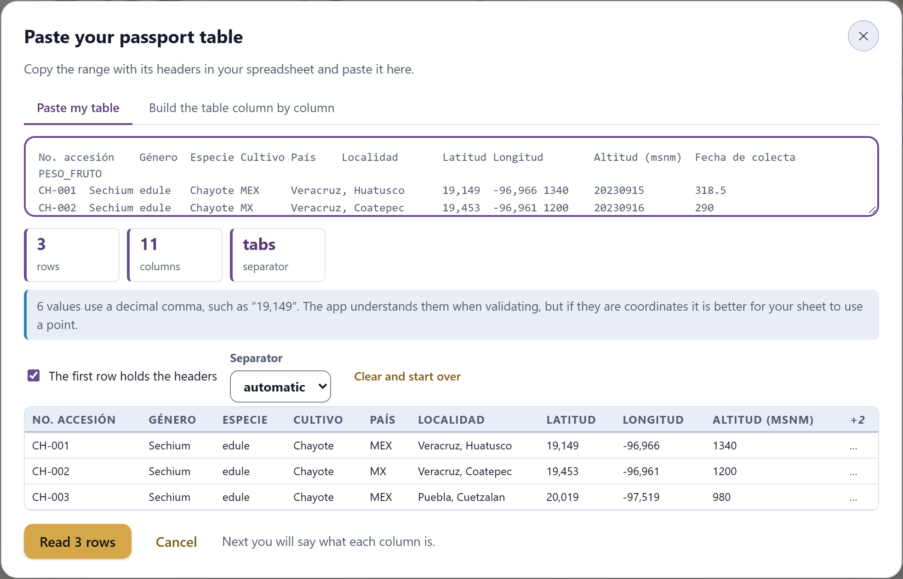
Figure 2.1. The assistant with a test paste: three chayotes copied from a spreadsheet, with the coordinates in decimal comma. At the top, the text as it arrived; then the three cards, the notice, the options and the preview already split into cells.
The cards. How many data rows come out, how many columns and which separator split them.
The notices. What usually goes wrong when copying from a sheet, explained in one sentence (Table 2.4).
The options. The checkbox The first row holds the headers and the Separator selector (automatic, tab, comma, semicolon or pipe). Any change reads the text again instantly. Clear and start over empties the box.
The preview. The first six rows, split into cells, with up to nine columns; the rest are summarized in a +2 column, and below it says how many more rows there are.
The app ticks the headers checkbox the first time. To decide, it compares the first row with the ones that follow: a title does not have the shape of the data it heads —it is not a number over a column of numbers, nor a date over dates, nor a code like MEX-001 over codes—. If the table holds only text, it checks whether the first row looks like a title: no numbers, no empty cells and no repeated texts. If it gets it wrong, simply untick or tick the box. Without headers, the columns are named Column A, Column B…, and in the mapping you choose by hand what each one is.
Table 2.4. The notices of the paste assistant. Only the last one prevents you from going on.
What the notice says
What happened and what to do
“1 row does not have the same number of cells as the rest (3)…”
Almost always a stray comma inside a text without quotes, or merged cells in the sheet. Check that row in the preview; if it is a comma, try another separator.
“Everything landed in a single column…”
If your table had more columns, the separator is not the right one: choose it in Separator. If you deliberately copied a single column, go ahead.
“6 values use a decimal comma, such as “19,149”…”
It is for information: the app turns the comma into a point when validating and importing numbers and coordinates. Even so, your sheet had better use a point.
“There is only one row and it is being taken as a header…”
You copied only the titles, or a single data row that looks like a title. Untick the headers box if it was data, or copy the whole table again. The button stays disabled until you fix it.
When everything is in order, the main button says how many rows it will read (Read 3 rows) and, when you press it, the dialog closes and the column mapping of Section 2.5 appears.
▸Example · the test paste of this chapter
Figures 2.1 and 2.3 use this paste, copied from a spreadsheet (the columns are separated by tabs; here they are trimmed):
No. accesión Género Especie Cultivo País Localidad Latitud Longitud … Fecha de colecta PESO_FRUTO
CH-001 Sechium edule Chayote MEX Veracruz, Huatusco 19,149 -96,966 … 20230915 318.5
CH-002 Sechium edule Chayote MX Veracruz, Coatepec 19,453 -96,961 … 20230916 290
CH-003 Sechium edule Chayote MEX Puebla, Cuetzalan 20,019 -97,519 … 20230231 402.7
The assistant reads 3 rows and 11 columns separated by tabs, ticks the headers box on its own and warns about the 6 values with a decimal comma. It deliberately carries three problems that the mapping uncovers: a two-letter country, a 31 February and a characterization column. The headers are in Spanish, as they would be in a Mexican genebank’s sheet; the app recognizes them all the same.
2.4The guided template
The second tab of the assistant, Build the table column by column, is for those who do not have the table ready or do not know what to call the columns. It shows the full catalog of what the app understands, with the name of each column, its key, what it means and an example; you tick the ones you will use and a table ready to fill in appears below.
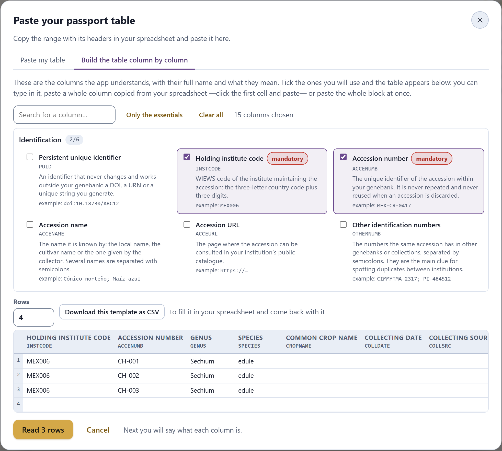
Figure 2.2. The guided template just opened: it already has the 15 essential columns ticked. At the top, the Identification group expanded; at the bottom, the grid with three rows typed in and the Read 3 rows button.
The catalog of columns
The catalog has 86 columns in twelve groups that open and close: the eight of the passport (the 42 MCPD descriptors and the 7 of the extension) and four of characterization, with 37 descriptors that are not passport data: Agronomic and plant traits (11), Fruit morphology (10), Chemical and quality traits (12) and Seed (4). The latter carry their unit in brackets —Fruit weight (g), Soluble solids (°Brix), Plant vigor (1–9)— and a line saying how it is measured. Next to the name of each group, a counter says how many columns it has or, if you have already ticked some, how many of them (2/6). The three mandatory descriptors carry the tag mandatory.
Control
What it is for
Search for a column…
Filters the catalog by name, by key or by what the description says, regardless of accents and case: “fruit” finds nine characterization columns. Groups with matches open by themselves.
Only the essentials
Leaves ticked only the 15 mandatory and strongly recommended columns (Table 2.1). It is the selection the tab opens with.
Clear all
Unticks everything, so you can start your own selection.
Rows
How many rows the grid has, from 1 to 500; it starts at 10.
Download this template as CSV
Downloads germplasmpro-template.csv with only the ticked columns, with the keys as headers and with whatever you have already typed into the grid. It is for filling it in in your spreadsheet and coming back with it.
The grid
Each ticked column appears in the grid with its full name and its key underneath, in the order in which you ticked it. You type in it as in a sheet. What makes it practical is pasting whole columns: copy a column of values in your spreadsheet —the accession numbers, for example—, click the first cell of the corresponding column of the grid and paste. The values are spread downwards, one per row, and if there are more of them than rows, the grid grows up to 500. If what you copied has several columns, they are also spread to the right, over the following columns. A single value, without tabs or line breaks, is pasted normally into the cell where the cursor is, just as in the search box.
Empty rows do not count: the main button says how many rows have something (Read 3 rows). When you press it, the grid follows the same path as a paste and reaches the column mapping, where all the keys are recognized at the first attempt.
2.5What is each column?
Whether it comes from a file, a paste or the template, the table goes through the card What is each column? before entering the collection. At the top, a line says what was read (Read 3 rows and 11 columns from pasted text. The app recognized 10 columns; check the rest.); below it, one row per column of your file, with four items:
Column in your file: the original header and, under it, its first three values, so you can tell what it is about.
Descriptor: the selector with the 49 descriptors grouped as in Table 2.1, plus — do not import —. The app fills it with its proposal.
Key: the chosen key, in green if it belongs to the standard and in another color if it belongs to the GP_ extension.
How well it fits: what would happen if you imported the column as that descriptor (explained in the box below).
How the app recognizes your columns
Real headers arrive in Spanish, in English, with accents, with full stops, with units or with the MCPD key. Before comparing them, the app normalizes them: it removes accents, case, spaces and punctuation, so that No. accesión, no_accesion and NO ACCESIÓN are the same thing. Then it searches in three passes, and each descriptor receives a single column:
The exact key of the standard. A column called ACCENUMB, accenumb or GP_CONS is recognized first.
The synonyms. The app bundles 224 common column names for the 49 descriptors, in Spanish and in English: número de accesión, accession number, clave; país, country, iso3; altitud, msnm, elevación; custodio, agricultor, comunidad for GP_KEEPER; existencias, inventario for GP_STOCK, and so on with the rest.
Partial matches. A header that contains a synonym of at least four letters is assigned to the longest match: Altitud (msnm) contains altitudmsnm and goes to ELEVATION; Germinación % goes to GP_GERMPCT.
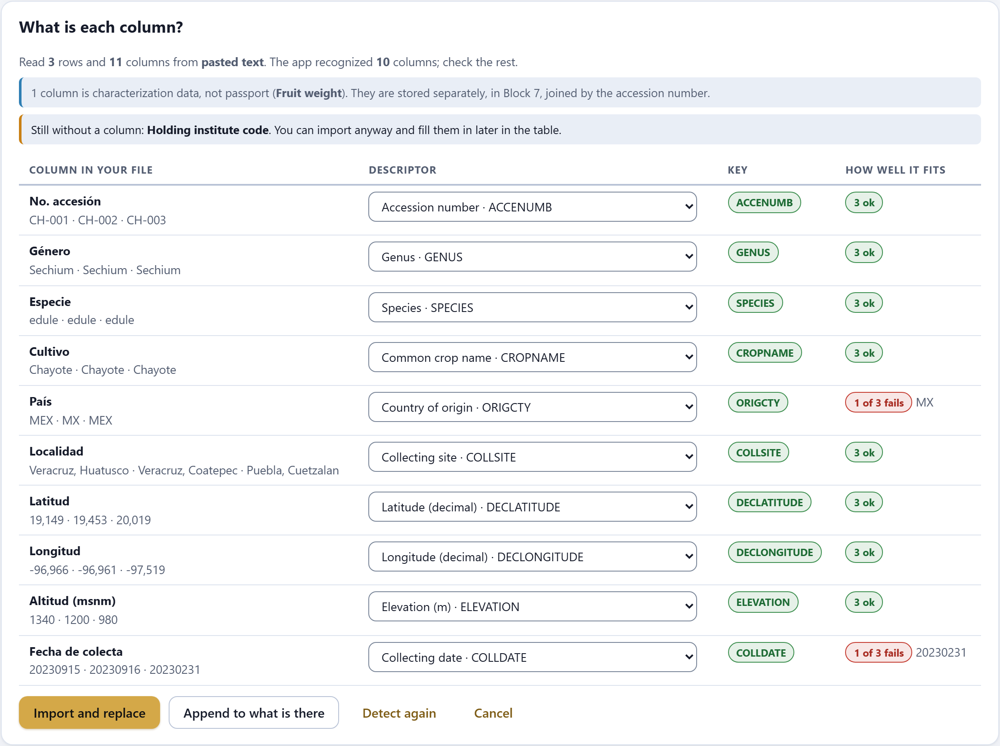
Figure 2.3. The mapping of the test paste. The ten passport columns were recognized; PESO_FRUTO was set aside as characterization. Under How well it fits, the country MX and the 31 February are visible before importing. (In the app, the list scrolls inside its frame when there are many columns.)
Coordinates take one more step, because the header is not enough: a Latitud column may hold 17.6423 or 173832N. The app looks at up to ten values and, if most of them have the shape of degrees-minutes-seconds, sends it to LATITUDE; if they are decimals, to DECLATITUDE (and likewise for longitude), swapping the two columns if necessary. If only the degrees-minutes-seconds coordinates are present, the decimal ones, which the maps use, are computed on import.
Since each descriptor receives a single column, when two columns compete the first one wins: in a sheet with Estado, Municipio and Localidad, only one reaches COLLSITE and the others are left at — do not import —. If you choose by hand a descriptor that already had another column, the other one is unassigned automatically. Detect again undoes your changes and goes back to the app’s proposal.
θTheory in brief · “how well it fits”
For each assigned column, the app validates all its non-empty values as if they already belonged to that descriptor, with the same rules as in Section 2.6. If none of them gives an error, it writes 3 ok (with the number of values); if any fails, 1 of 3 fails (or 2 of 3 fail) and, next to it, the first value that fails. Only errors count, not warnings. It is the fastest way to discover a wrongly assigned column: if the elevation column ended up as collecting date, nearly all of them will fail. Better to see it here than later, with the data already inside.
What stays outside the passport
Below the summary line, two boxes may appear:
The characterization columns. If a column is named exactly like a key of the characterization catalog (PESO_FRUTO, BRIX, DIAS_FLORACION…), the app does not look for an MCPD descriptor for it: it sets it aside, names it in the box (1 column is characterization data, not passport (Fruit weight)) and, on import, stores it in the characterization of Block 7, linked to its accession by the number. MCPD is an exchange standard and fields are not hung on it. A column with another name, such as Peso del fruto, is not recognized this way: either you rename it with the key, or you load it in Block 7.
Mandatory descriptors without a column.Still without a column: Holding institute code. You can import anyway and fill it in later in the table; meanwhile, each accession will carry that error.
At the end, four buttons: Import and replace replaces the collection with what was read; Append to what is there adds it at the end of the current collection (without looking for repeats: Block 3 does that); Detect again and Cancel. On import, numeric values and coordinates go from decimal comma to decimal point, and countries to upper case. The imported collection is saved in the browser immediately, and the time of the save appears next to the counter (Section 2.9).
2.6Validation: errors and warnings
Every time the collection changes, the app checks all the accessions, field by field and across fields, and gives each problem one of two levels. Errors are values the standard does not accept —a date that does not exist, a code that is not in the list, an empty mandatory field— and must be corrected. Warnings are values worth completing or confirming: an empty strongly recommended field, an odd elevation, two fields that disagree.
Not in YYYYMMDD with hyphens where unknown; year before 1700 or in the future; month outside 01–12; day outside 01–31; a day that does not exist in that month (30 February).
—
Decimal coordinates
Not a number; outside −90 to 90 or −180 to 180.
An exact zero, which is almost always a missing value written as zero.
Degrees, minutes and seconds
Does not follow DDMMSSH (173832N).
—
Numbers
Not a number; germination outside 0–100; negative uncertainty or stock.
Elevation outside −430 to 6,500 m.
Country (ORIGCTY)
Not three letters.
Three letters that are not in the list of 119 countries.
Not three letters and three digits. DUPLSITE accepts several, separated by semicolons.
Code lists
A value that is not in the descriptor’s list; in STORAGE, any code of the semicolon-separated list that does not exist.
—
Table 2.6. The rules that compare fields of the same accession.
What is compared
Level
What the app says
Only one of the two decimal coordinates
error
The other coordinate is missing: one alone locates nothing.
Decimal and degrees-minutes-seconds coordinates
warning
They do not match (they differ by more than 0.02°).
Collecting date later than acquisition date
warning
The accession would have entered the genebank before being collected.
Last test or regeneration earlier than acquisition
warning
The test (or the regeneration) predates the accession’s arrival.
Wild status (100) and cultivated or store source (21, 22, 23, 26, 27)
warning
It says wild but was collected in a cultivated site or a store.
Landrace status (300) and wild habitat (10–15)
warning
It says landrace but was collected in a wild habitat.
In situ route with a storage type
warning
If you hold both, register two linked accessions.
In situ route without GP_SITEID
warning
An in-situ record with no site identifier cannot be revisited.
Ex situ route without DUPLSITE
warning
No safety duplicate: the accession depends on a single facility.
Ex situ route with DUPLSITE only at the holding institution itself
warning
The safety duplicate is held by the same institution as the accession: it does not protect it if that institution loses its collection.
The route changes what is required. An in situ record (genetic reserve or on-farm) is not asked for STORAGE, ACQDATE, DUPLSITE or INSTCODE: it has no storage, it never entered a genebank and it is not duplicated elsewhere. And the safety duplicate only counts if at least one of the sites in DUPLSITE is an institution other than the one in INSTCODE: a copy in the cold room next door does not protect against a fire in the same building. That same rule is the one used by the With safety duplicate tile of the portrait (Section 2.8). An accession without a recognizable route —neither GP_CONS nor a valid STORAGE code— does not receive the duplicate warnings.
What needs checking
The section What needs checking gathers the problems of the whole collection, grouped by descriptor and message, which is how they are fixed: errors first and, within each level, the most frequent ones. Above it, three figures: how many errors, how many warnings and in how many accessions. The show button of each row turns on the filter only those with something to check, clears the other filters, adds the problem’s column to the table if it was not there and opens the record of the first affected accession.
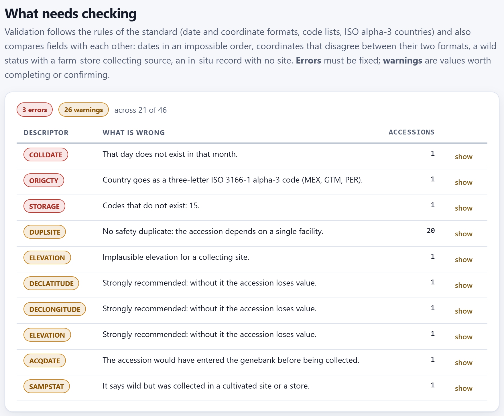
Figure 2.4. The validation of the example collection just loaded: 3 errors and 26 warnings in 21 of the 46 accessions, in ten groups.
▸Example · the 29 problems of the example collection
The seeded errors (Section I.7) that Block 2 can see with a single accession in view are these:
MEX-CU-0040 · Calabaza pipiana
error in COLLDATE: 20190230, a 30 February.
MEX-PH-0041 · Frijol tepari
error in ORIGCTY (MX, two letters) and warning in ELEVATION (25000 m).
MEX-CH-0042 · Chile costeño
error in STORAGE: Codes that do not exist: 15. With no route, it is not asked for a duplicate either.
MEX-ZM-0043 · Maíz ancho de riego
three warnings: no latitude, no longitude and no elevation.
MEX-ZM-0044 · Maíz reventador
two cross-field warnings: wild status collected in a farm store, and an acquisition date (20190105) earlier than the collection.
20 ex situ accessions
warning in DUPLSITE: no safety duplicate.
They add up to 3 errors and 6 + 20 = 26 warnings, in 21 accessions (the five above, plus sixteen that only have the duplicate warning). The 20 accessions with a duplicate hold it at another institution (NOR051, MEX008, BOL004 or PER001), so none of them receives the same-institution warning; Figure 2.6 triggers it on purpose. What Block 2 does not see: the unsigned longitude of MEX-ZM-0039 is a valid number (only Block 3 discovers that it falls outside Mexico), and the two pairs of accidental duplicates are, each one on its own, correct accessions.
2.7The table and the record of each accession
The section The collection, accession by accession shows the collection in an editable table, 50 rows at a time, with the ← → arrows and the count (showing 1–46 of 46) at the foot. Above it are the search box, the filters and the buttons for adding and emptying.
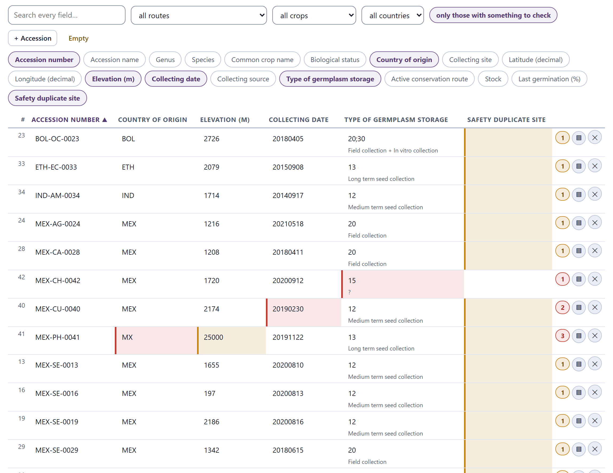
Figure 2.5. The table with only those with something to check (21 rows) and the columns chosen to see the problems: errors in red, warnings in ochre. The circle on the right counts the problems of each accession, in red if any of them is an error.
Control
What it is for
Search every field…
Searches the 49 fields at once, regardless of accents, case and hyphens: “chayote” leaves 3 rows.
all routes, all crops, all countries
Filter by conservation route (only those in use), by common crop name and by country of origin (with its name; a code that is not in the list, such as MX, appears as it is). With the example collection, Field genebank or living collection leaves 8 rows.
only those with something to check
Keeps only the accessions with some error or warning: 21 in the example collection.
+ Accession
Adds an empty accession at the end and opens its record.
Empty
Deletes the whole collection, including the copy stored in the browser, after asking for confirmation.
The 18 column tags
Choose which columns are shown; the highlighted ones are visible. At least two must remain. It opens with nine: accession number and name, genus, species, crop, country, site, elevation and route.
A click on a column title sorts by it (▲) and another reverses the order (▼); coordinates, elevation and the other numbers are sorted as numbers. The table opens sorted by accession number, and the gray number on the left is the position of the accession in the collection, which does not change when sorting or filtering. Each cell is edited by typing in it; the change is applied when you leave the cell and validation is redone at once. Code cells offer the list as you type and show the meaning underneath (a ? if the code does not exist). Hovering over a flagged cell shows the problem’s message. To the right of each row, ▤ opens the full record and ✕ deletes the accession, with confirmation.
The full record
The record shows the 49 fields of an accession, in the eight groups of Table 2.1. The title gives the accession number and the scientific name; on the right, its position (44 / 46) and the ← → arrows to move to the previous or next one without closing the dialog. Each line has the name of the descriptor with its key (and an asterisk if it is mandatory), the box and, on the right, the description of the descriptor or, if there is a problem, the message in bold, with the line tinted red or ochre. Empty text boxes show the descriptor’s example as a guide.
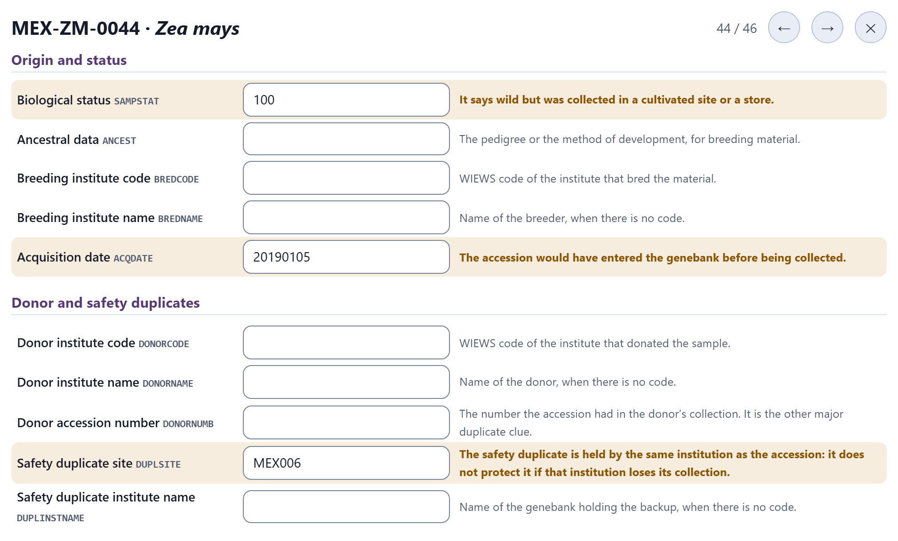
Figure 2.6. The record of MEX-ZM-0044 · Maíz reventador. Besides its two seeded warnings, MEX006 was typed here as the duplicate site —the same code as the institute that holds it— and the warning changed from No safety duplicate to the same-institution one. With NOR051 it disappears; with MEX006;NOR051 too, because one of the two sites is another institution.
What you type in the record is applied when you leave the box, and everything is updated at once: the record, the table, the list of problems and the portrait. Start from scratch and + Accession open the record of an empty accession, which starts with 3 errors (the three mandatory fields) and 12 warnings (the strongly recommended ones); they go out as you fill it in. The record closes with ✕ or with Esc.
2.8The portrait of the collection and completeness
The portrait of the collection begins with the five tiles already presented in the introduction (Figure I.3): accessions, with coordinates, with safety duplicate (in red while it does not reach 80%), countries and routes in use. Below them come six charts, which are redrawn with every change (Figure 2.7):
Chart
What it counts · with the example collection
Accessions by conservation route
Each route in use, declared or derived from STORAGE: 28 in seed, 8 in field, 3 in vitro, 3 on-farm, 2 in a genetic reserve and 1 cryopreserved. The accession without a route does not appear.
Accessions by species
The ten species with the most accessions (genus and epithet): Zea mays with 18, Capsicum annuum and Sechium edule with 3. All 24 are in the taxa tile.
Biological status
Up to eight statuses: 39 landraces, 4 wild, 2 natural and 1 breeder’s line.
Country of origin
Up to eight countries: Mexico with 37, Guatemala and Peru with 2, and one each for Bolivia, Ethiopia, India, Colombia and MX.
Elevation of collecting sites (m)
Histogram in 12 classes of equal width between the minimum and the maximum: here, from 20 to 25,000 m. Empty elevations are left out; those of 0 m, at sea level, are included.
Collecting year
Histogram in 10 classes with the year of COLLDATE: from 2014 to 2022, with most between 2018 and 2020.
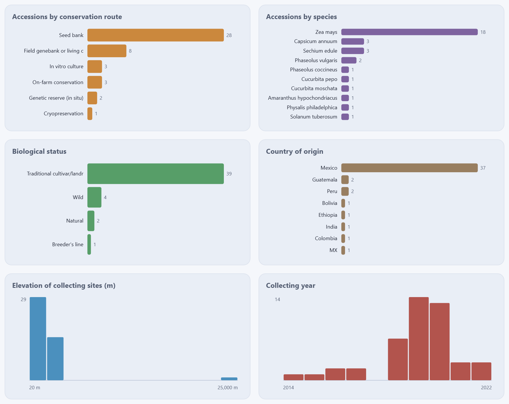
Figure 2.7. The charts of the portrait with the example collection. In the elevation chart, the accession at 25,000 m stretches the axis until nearly all the others are left in the first two bars: a data-entry error jumps out.
Long names are trimmed in the bars (Traditional cultivar/landr…). The charts count what is written, not what ought to be: the code MX appears as an eighth country until you correct it to MEX, and the elevation of 25,000 m distorts the histogram. That is why it pays to look at the portrait again after Block 3.
How complete the passport is
The last results section gives, for each descriptor, the percentage of accessions that carry it. The bar is green from 90%, ochre from 50 to 90% and red below 50%; an asterisk marks the mandatory ones, and hovering over a line shows the description of the descriptor. So as not to fill the list with zeros, optional descriptors that no accession carries are omitted; the mandatory ones, the strongly recommended ones and the seven of the extension always appear, the latter at the end.
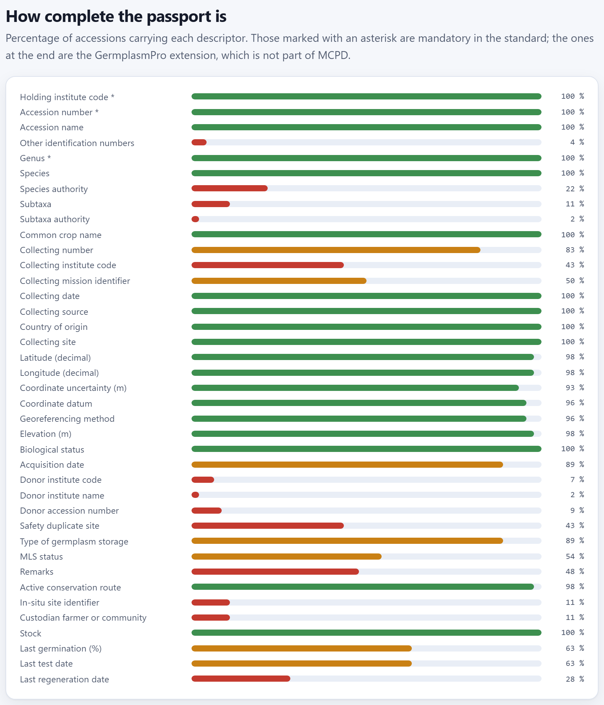
Figure 2.8. The completeness of the example collection: 39 lines; the 10 descriptors that no accession carries (such as PUID or ANCEST) are not shown.
It can be read in two ways. By descriptor, it says what is missing in the whole collection: here, the safety duplicate site (43%) is the most serious gap among those that matter for conservation, and the last regeneration date (28%) the one in the extension. And against what validation asks for: acquisition date and type of germplasm storage stand at 89% (41 of 46) and, even so, they produce no warnings, because the five accessions without them are in situ and must not have them. Completeness measures presence, not correctness: MX counts as a country present.
2.9Taking your data with you and automatic saving
The section Take your data with you has three buttons, each with a different destination:
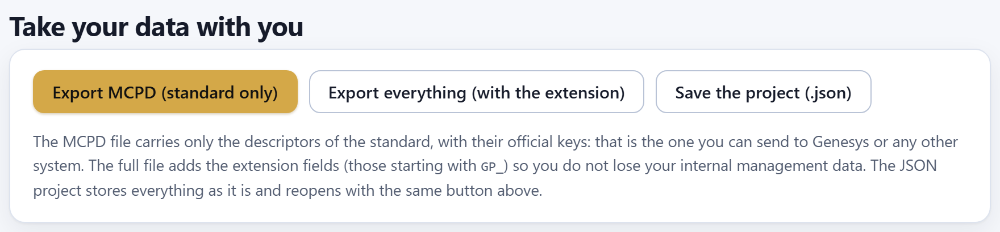
Figure 2.9. The three export buttons of Block 2.
Button
File
What it carries and what it is for
Export MCPD (standard only)
passport-mcpd.csv
The 42 descriptors of the standard, with their official keys as headers and in the order of Table 2.2. It is the one sent to Genesys, to SINAREFI or to any other system.
Export everything (with the extension)
passport-full.csv
The 49 fields: the standard and, at the end, the seven GP_ ones, so that internal management data are not lost. It comes back in through Open a file (CSV, TSV or project) with all the columns recognized by their key.
Save the project (.json)
germplasmpro-collection.json
The accessions as they are, with all their fields; the characterization of Block 7; the threshold and the dismissed pairs of Block 3; the genebank assumptions, the custom viability constants and the calculator values of Block 8, and the label preferences of Block 9. It opens with the same button above, without going through the mapping, in any browser or computer.
The CSV files come out comma-separated and in UTF-8, and only cells that need it (those containing commas, quotes or line breaks) are quoted. The files are exported with the values as they are, errors included: fix first whatever validation flags. The project carries everything that was worked on and does not fit in the passport (version 2 of the format): when it is opened, each item is restored in its block. A project saved with an earlier version, which carried only the passport or the passport and the characterization, opens all the same and leaves as it was whatever it does not carry: the characterization, the Block 3 settings, those of the genebank and those of the labels.
Automatic saving
Every change to the collection —a cell, the record, an accession added or deleted, the example collection— is saved by itself in the browser’s local storage a moment later, and saved in this browser · appears next to the counter with the time. When you reopen the app in that browser, the collection is still there. If the browser cannot save —full storage or a private window—, the time is replaced, in red, by Could not save in this browser (storage full or private mode): download the .json project: from then on your work lives only in that tab until you save the project. Even when it saves, it is not a backup: it lives in one browser on one computer and is lost if the browsing data are cleared. The backup is the .json project; save it at the end of every work session.
The app already tries UTF-8 and Windows-1252; if they still come out wrong, save the sheet as “CSV UTF-8” or use the paste, which does not depend on the encoding.
Read 0 rows or the button disabled
You copied only the headers, or the headers box swallowed the only row (Table 2.4). In the template, no row has data.
In the mapping, a column was left at — do not import —
Its header does not resemble any synonym, or its descriptor was already taken by another column. Choose it by hand in the selector.
How well it fits says nearly all fail
The column is assigned to the wrong descriptor. Change the selector before importing.
The coordinates ended up as text or in another column
They came in degrees-minutes-seconds with another shape, or with a decimal comma and a comma separator. Check the separator in the assistant and the column’s selector in the mapping.
Every accession has A mandatory value is missing. in INSTCODE
Your file did not carry the institute code. Add the column in your sheet and import again, or type it in the table.
A characterization column entered the passport
It is set aside only if its header is an exact key of the catalog (PESO_FRUTO). Set it to — do not import — and load it in Block 7.
The collection disappeared when the app was opened again
It was opened in another browser or with the browsing data cleared. Open the .json project.
Next to the counter it says Could not save in this browser…
The browser’s storage is full or the window is private. Use Save the project (.json) now, and again before closing; in a normal window, with space, the notice goes back to saved in this browser.
✓Decision rule · what to do in Block 2
If your collection is in a spreadsheet
then copy it with its headers and use Paste from a spreadsheet; check the cards and the notices before reading it.
If you do not know what to call your columns
then build the table in the guided template, starting with Only the essentials, or download it as CSV to fill it in in your sheet.
If in the mapping a column fails in How well it fits
then look at the first value that fails: if it is one, import it and correct it in the table; if it is nearly all of them, change the descriptor.
If validation gives errors
then correct them before going on; the safety duplicate warnings and the empty strongly recommended fields are pending work on the collection, not on data entry.
If an ex situ accession only has a copy at your own institution
then it has no safety duplicate: arrange one at another genebank and record it in DUPLSITE.
If you have finished loading and correcting
then save the .json project and move on to Block 3, before any analysis.
What you correct here is seen by every block; Block 3 then looks for what a single accession does not reveal: coordinates outside their country, untidy names and the same collection entered twice.
3
Chapter three · Block 3 · Quality & duplicates
Data quality and duplicates
Block 2 checks each value on its own; Block 3 checks what only shows when the whole collection is looked at: the coordinate that does not fall in the country the accession declares, the genus spelled two ways, the site with several spellings and, above all, the same collection entered twice. The app diagnoses, proposes the fix and explains why; applying it, merging two accessions or dismissing a pair is your decision.
3.1What the block checks and how to read the summary
3.2Does the point fall where it says? Coordinates against the country
3.3Names and catalogs
3.4Fixes, always with your approval
3.5How duplicates are searched for
3.6Groups, side-by-side comparison and the threshold
3.7Merge, note or dismiss
3.8The quality report
3.1What the block checks and how to read the summary
Block 3 works on the collection you loaded in Block 2 (Chapter 2) and asks for nothing else: when you enter it, the check runs by itself, with the animated wait Checking quality and duplicates, and the result is laid out in five tiles and four sections. If there are no accessions yet, the block says so —Load your accessions in Block 2 first.— and offers the button Go to the passport.
Figure 3.1. The header of the block with the example collection just loaded. The five tiles summarize the four sections below.
Two buttons govern the block. Check the collection runs the whole check again; it is needed when you changed something in Block 2 without leaving it, because on re-entering Block 3 the check is redone anyway. Download the quality report saves everything found in a .csv file (Section 3.8). Next to them, a green tag shows for a few seconds the result of the last thing you did: Coordinate fixed., Accessions merged., Noted in both accessions.
Table 3.1. The five summary tiles and what they show with the example collection.
Tile
Example
What it counts
Accessions checked
46
All those in the passport. Below, how many pairs were compared in the search for duplicates: 33 of the 1,035 possible (Section 3.5).
Location problems
1
The errors and warnings of section 2 (Section 3.2); below, how many of them come with a clear diagnosis, that is, are errors. Accessions that could not be compared with their country do not count.
Proposed fixes
4
The changes the app knows how to make and that await your approval (Section 3.4).
Duplicate groups
2
The groups of accessions that look like the same material; below, how many pairs are above the threshold (Sections 3.5 and 3.6).
Consistency warnings
0
The findings about names and catalogs (Section 3.3).
On screen, the sections come in the order in which it pays to work: 1 · Fixes the app can make for you, 2 · Does the point fall where it says?, 3 · Names and catalogs and 4 · Is it the same collection twice? First you clean up what has a safe fix, and at the end you decide about the duplicates, which is what calls for the most judgment. This chapter explains the checks first (3.2 and 3.3), because the fixes (3.4) come out of them.
iWhich seeded errors each block catches
Of the errors planted on purpose in the example collection (Section I.7), Block 3 finds the unsigned longitude, the two-letter country and the two duplicates. The rest —the 30 February, the elevation of 25,000 m, the invented storage code, the accession without coordinates and the dates in reverse order— are errors in an isolated value and are flagged by the validation of Block 2 (Chapter 2). They are not lost here: the quality report gathers them along with everything else.
3.2Does the point fall where it says? Coordinates against the country
Each accession declares its country of origin in ORIGCTY and its site in DECLATITUDE and DECLONGITUDE. If the two do not agree, one of them is wrong, and almost always because of one of a few mechanical slips. The app compares each coordinate with a bounding box of the country: the rectangle, in degrees, running from its minimum to its maximum latitude and from its minimum to its maximum longitude. It bundles the boxes of 119 countries —the whole of the Americas, Europe, a good part of Africa and Asia, Australia, New Zealand, Papua New Guinea and Fiji— and gives each one a margin of one degree per side, so as not to accuse sites on the coast or the border.
Figure 3.2. Section 2 with the example collection: the maize Tuxpeño de la costa declares Mexico with a positive longitude, which would place it in Myanmar. Below, the note about the accession that could not be compared.
The checks, in order
The app does not check an accession that lacks the latitude or the longitude, or that has them written as something that is not a number: Block 2 takes care of that. With both coordinates present, it checks in this order:
Tag
Level
What it detects and what the app says
Point (0, 0)
error
The point (0, 0): is in the Gulf of Guinea: it is an empty field written as zero. No fix is possible; the coordinate has to be looked up in the notebook.
Latitude = longitude
warning
Identical latitude and longitude: one was probably copied over the other.
Whole degrees
warning
Both are whole numbers: the site was rounded to degrees and carries more than 50 km of uncertainty.
Country without outline
note
The country is not among the 119: the coordinate is not compared. It does not count as a problem; it is summarized in a note under the table.
Longitude sign, Latitude sign, Swapped coordinates, Swapped and sign-flipped
error
The point falls outside the box and one of the classic slips brings it back inside (below). The app proposes that fix.
Outside the country
warning
The point falls outside and no simple fix repairs it: the coordinate or the country must be checked.
The classic slips and their diagnosis
When the point leaves the box, the app tries four repairs, one after another, and keeps the first one that brings it back into the country:
The longitude lost its sign (Longitude sign): the sign of the longitude is changed. It is the most common in the Americas, where all longitudes are negative and the sign gets lost when passing through a spreadsheet or when copying from a GPS that writes “W”.
The latitude has the wrong sign (Latitude sign): the symmetric error, typical of countries in the southern hemisphere.
Latitude and longitude swapped (Swapped coordinates): each one ended up in the other’s column.
Swapped and with the sign changed (Swapped and sign-flipped): both things at once.
The order only matters when two repairs would work, which is rare with small boxes. Each row of the table carries the number and name of the accession, the country, the coordinates as they stand and the diagnosis —a tag with the name of the problem and the explanation—, with two buttons: Fix applies the proposed fix on the spot (and the green tag says Coordinate fixed.), and Record opens the accession’s record in Block 2 so that you can review it or correct it by hand.
▸Worked example · the maize that landed on the other side of the world
The box of Mexico runs from 14.3 to 32.8 in latitude and from −118.5 to −86.6 in longitude; with the one-degree margin, from 13.3 to 33.8 and from −119.5 to −85.6. Tuxpeño de la costa (MEX-ZM-0039) declares 18.8100, 96.0600: the latitude falls inside, but the longitude +96.06 is in the eastern hemisphere, in Myanmar. The first test, changing the sign of the longitude, gives −96.06, which does fall between −119.5 and −85.6: diagnosis Longitude sign, fix 96.0600 → −96.06. The corrected point lies on the Gulf coastal plain, in Veracruz.
Below the table, the note In 1 accession the coordinate could not be checked against the country because the app does not bundle that country's outline. The bundled boxes cover 119 countries. refers to the tepary bean MEX-PH-0041, which declares its country as MX. It is not that Mexico is missing: MX is the two-letter code, and the boxes use the three-letter one. As soon as you apply the fix MX → MEX (Section 3.4), the coordinate is compared, falls inside and the note disappears.
!Rectangles, not borders
A bounding box is generous: Mexico’s includes part of Guatemala and of the Gulf, and Chile’s a good part of Argentina. It serves the purpose it is used for here —catching a lost sign or two swapped columns, errors of hundreds or thousands of kilometers—, but it does not confirm that a point is in the right municipality or state. That fine check is done on the map of Block 4 (Chapter 4), which draws the 32 states of Mexico. For the same reason, a point that passes this check is not guaranteed to be right.
3.3Names and catalogs
The section 3 · Names and catalogs looks for what is not a format error but still makes the collection untidy: things Block 2 cannot see because each value, on its own, is well written. Before comparing, the app normalizes the texts: it removes accents and punctuation, turns everything into lower case and collapses spaces. That is why “Maiz” and “Maíz” count as the same crop name, and in the example collection no warning comes up even though the duplicated accession writes “Maiz” without the accent.
Table 3.2. The checks on names and catalogs. All of them are warnings (ochre tag), except the site with several spellings, which is a note (blue tag).
Tag
What it looks for
Genus capitalization
A genus that is not written with an initial capital and the rest in lower case (zea, ZEA).
Epithet capitalization
An epithet with some capital letter (Mays).
Authority in the epithet
An epithet that carries something more: a space or an initial with a full stop, as in mays L. The authority belongs in SPAUTHOR and the infraspecific rank in SUBTAXA.
Misspelled genus
Two genera in the collection that are too similar to be different: at a Levenshtein distance of 1 or 2, with at least five letters in the longer one.
Crop names
The same taxon under several crop names. The taxon includes the subspecies or variety: teosinte (Zea mays subsp. parviglumis) does not count as another name for maize.
Site spelling
The same site written in several ways: identical after normalizing, different as they stand.
Repeated coordinates
Accessions with exactly the same coordinates (to four decimals) that declare different sites: almost always, a coordinate copied from the row above.
The Levenshtein distance is the minimum number of letters that must be inserted, deleted or changed to go from one word to another. From Phaseolus to Phaseolous there is one (the second o is extra); from Capsicum to Capcisum, two (two letters swapped cost two changes). The five-letter minimum prevents two short, different genera, which may differ by one or two letters, from accusing each other.
The example collection comes out clean: the section says Scientific names, crop names and sites are spelled consistently. and the warnings tile shows 0. For Figure 3.3, six values were altered by hand, as you could do in the record of Block 2, so that every type of warning shows up.
Figure 3.3. Section 3 with six values of the example collection altered for the figure: the genus of MEX-PH-0041 written Phaseolous; the epithet of MEX-ZM-0006 as Mays and that of MEX-ZM-0003 as mays L.; the crop of MEX-ZM-0004 as Elote; the site of MEX-ZM-0045 with villa in lower case, and the coordinate of MEX-SE-0019 copied into MEX-CH-0042. Below, the detail opened by show.
Each row gives the type, the finding and how many accessions it touches. The show button unfolds underneath the list of those accessions —up to 40— as buttons; each one opens its record in Block 2. Notice that mays L. comes up twice: as an epithet with a capital and as an epithet with an authority. In the crop warning, the taxon and the names appear as they are written in the passport, even though the app has already compared them in normalized form.
iWarning is not fixing
Of all these warnings, only the capitalization of the genus and the epithet has an automatic fix (Section 3.4). The others call for judgment: which of the two genera is the right one, whether “Elote” is an error or the local name you want to keep, which of the two accessions with the same coordinate has it right. The app takes you to the record; the decision, and the correction, are made in Block 2.
3.4Fixes, always with your approval
The section 1 · Fixes the app can make for you gathers the repairs that have a single reasonable answer. None is applied by itself: each one is shown with the original value struck through and the proposed one in green, and it is applied when you say so.
Figure 3.4. The four fixes the app proposes for the example collection, grouped by type and descriptor: on the left, the name of the descriptor; in the middle, the tag of the fix and its reason.
Table 3.3. The fixes the app knows how to propose: the tag it shows in the What is proposed column and the descriptors it touches.
Fix · descriptor
When it is proposed and what it does
The four of Section 3.2 (Longitude sign…) · decimal latitude and longitude
When the check of Section 3.2 found one of the classic slips: the sign change or the swap that brings the point back into the country.
Two-letter country · country of origin
When the country comes in two letters and the app knows it: it replaces it with the three-letter code the standard asks for. The app’s table has 56 codes in common use (MX, GT, PE, US, ES…, and also UK for the United Kingdom).
Extra spaces · accession name, collecting site, common crop name
Extra spaces at the start, at the end or between words.
All caps · the same three
Only a text written entirely in capitals (with some word of four letters or more). The accession name and the crop name are turned into sentence case: BOLITA AMARILLO → Bolita amarillo. The site is turned into a place name, with a capital on every word except de, la, del and the other Spanish minor words: SAN PABLO VILLA DE MITLA, OAXACA → San Pablo Villa de Mitla, Oaxaca. It also removes the surplus spaces.
Genus capitalization, Epithet capitalization · genus, species
The genus with an initial capital; the epithet in lower case (only if it carries no authority, which has to be moved by hand).
Inferred route · active conservation route
The empty conservation route when it can be derived from the storage type (STORAGE).
Degrees, minutes, seconds · decimal latitude and longitude
The empty decimal coordinate when there is one in degrees, minutes and seconds (LATITUDE, LONGITUDE): it computes it, with six decimals.
Proposals are grouped by type and descriptor; each group shows its first case as an example and how many cases it has. The Apply button of a row applies that whole group (the green tag says, for example, 1 fix applied to Longitude (decimal).); Apply every fix (4), all of them at once. When fixes are applied, the passport is saved, the validation of Block 2 is redone and the check of Block 3 runs again. With the example collection, after applying the four, the tiles show 0 location problems and 0 fixes, and the note about the country without a box disappears; the two duplicate groups are still there, because correcting a name does not separate them.
!Before applying everything in one go
Sentence case leaves in lower case everything after the first word, proper names included: TUXPEÑO DE VERACRUZ would become Tuxpeño de veracruz. Whatever already mixes upper and lower case is left alone, so this only happens with names entered entirely in capitals. There is no undo button: the app itself reminds you, You can undo them by editing the accession in Block 2. With a large collection, apply by groups, check the examples and, if in doubt, export the passport first (Chapter 2).
3.5How duplicates are searched for
An accidental duplicate is the same collection recorded twice in the catalog —when digitizing an old notebook, when receiving a safety duplicate back, when merging two inventories— or the same accession kept in two genebanks without anyone knowing (Section I.3). It is almost never written identically: a capital letter, a space, the coordinate or the accession number changes. That is why the app does not look for identical rows, but for pairs that resemble each other in several things at once, and each resemblance adds points.
Before anything else, the app looks for repeated accession numbers. That is not a duplicate candidate, it is an error: if there is one, a box at the start of section 4 (Repeated accession numbers) gives the number and the two rows, and recalls that an accession number is never repeated, not even when the material really is the same.
First, blocking
Comparing every pair grows very fast: 46 accessions give 1,035 pairs, and 5,000 would give more than twelve million. The app only compares the pairs that share at least one blocking key:
the collecting number (COLLNUMB), normalized and without spaces;
each of the donor and other-collection numbers (DONORNUMB, OTHERNUMB, separated by semicolons);
the first five letters of the accession name, without spaces;
the first four letters of the genus and the half-degree cell in which the coordinate falls;
the taxon and the year and month of collection.
Keys shorter than three letters do not count, and a key shared by more than 400 accessions is ignored, because it distinguishes nothing. For example, Bolita amarillo (MEX-ZM-0002) has the keys lab2019101 (as collecting number and as number), bolit, zea with the cell 17, −96.5 and zea mays with 2019-08. In the example collection, blocking leaves 33 pairs out of the 1,035: that is the figure shown in the first tile.
Then, the score
Table 3.4. What adds and what subtracts in each pair. The total is clipped between 0 and 100.
Match
Points
Detail
The same collecting number
+40
Normalized: “LAB-2019-101” and “lab 2019 101” match.
They share a donor or other-collection number
+35
Not counting the collecting number, which already added.
Nearly identical names
+25
Similarity of 0.92 or more (below).
Similar names
+12
Similarity from 0.82 to 0.92.
Less than 1 km / 5 km / 25 km apart
+20 / +12 / +5
Haversine distance between the two points.
The same collecting date
+15
Full eight-digit date; if only the year matches, +5.
The same taxon
+10
Same genus and epithet.
The same collecting mission
+5
COLLMISSID.
Different genera
−35
Almost certainly not the same thing; it replaces the taxon bonus.
Different subtaxa
−15
Same genus, but both declare SUBTAXA and it does not match (subsp. mexicana versus subsp. parviglumis).
The weights say how strong each clue is. A collecting number is assigned by the collector, one per sample: a match is almost a signature. Being close, on the other hand, is weak: many different samples are collected in the same community. No clue on its own is enough to pass the threshold of 50 points; two or three together are needed.
Similarity between names
To compare names, the app normalizes them (without accents, case or punctuation: Tuxpeño and TUXPENO become equal) and computes two measures, keeping the larger one: the Jaro-Winkler similarity between the two strings, and a word-based measure, 0.55 + 0.45 × the proportion of shared words (Jaccard index), which only counts if they share at least one word. The second rescues names with extra or missing words: Chayote verde liso and Chayote verde.
θTheory in brief · the Jaro-Winkler similarity
The Jaro similarity counts the letters that match between two strings a and b within a window —a letter of a is only paired with the same letter of b if it is at most ⌊max(|a|, |b|)/2⌋ − 1 positions away—, and the transpositions t: half the paired letters that end up in a different order. With m paired letters:
Winkler added a bonus for a common prefix, because in names errors are seldom at the start: ℓ is the number of equal initial letters (up to 4) and p = 0.1. The app only applies the bonus if J is already 0.7 or more, so as not to bring together strings that do not resemble each other.
▸Worked example · MARTHA and MARHTA
window = ⌊6/2⌋ − 1 = 2 · all six letters are paired (T and H, one position apart) → m = 6
M A R T H A versus M A R H T A: two letters out of order → t = 2/2 = 1
J = (6/6 + 6/6 + 5/6) / 3 = 0.9444
common prefix M-A-R → ℓ = 3
JW = 0.9444 + 3 × 0.1 × (1 − 0.9444) = 0.9611, as in the app
The distance between the two sites
θTheory in brief · the haversine distance
Between two points on the Earth, with latitudes φ1, φ2 and longitudes λ1, λ2 in radians, the distance over the surface of a sphere of radius R is:
a = sin²(Δφ/2) + cos φ1 cos φ2 sin²(Δλ/2) · d = 2R arcsin √a
The app uses R = 6,371.0088 km, the mean radius of the Earth. Treating the Earth as a sphere produces errors of around 0.5%, irrelevant for deciding whether two collections are 1, 5 or 25 km apart. Unlike subtracting degrees, the formula takes into account that a degree of longitude is shorter away from the equator.
▸Worked example · the two Bolita amarillo
MEX-ZM-0002 is at 16.9771, −96.4008 and MEX-ZM-0045 at 16.932, −96.3665.
d = 2 × 6,371.0088 × arcsin(4.8670 × 10−4) = 2 × 6,371.0088 × 4.8670 × 10−4 = 6.2015 km
The app writes 6.2 km, both in the header of the pair and in the reason, and adds 5 points, because the distance lies between 5 and 25 km.
3.6Groups, side-by-side comparison and the threshold
The pairs that reach the threshold are gathered into groups by transitivity: if A resembles B and B resembles C, the three form a group even if A and C do not reach the threshold between them.
Figure 3.5. Section 4 with the example collection: the two seeded duplicates, each in its own group, with 100 points.
Each group is a card with the highest score of its pairs, the numbers of its accessions in passport order, the name of the first one and the button compare. With the example collection and the default threshold there are 2 groups and 2 pairs, the two seeded duplicates, both with 100 points. The maize one adds up to exactly 100: the same taxon (+10), the same collecting number LAB-2019-101 (+40), nearly identical names (+25: after normalizing, BOLITA AMARILLO and Bolita amarillo are equal), 6.2 km (+5), the same date (+15) and the same mission (+5). The chayote one adds up to 102 —the same taxon, collecting number LAB-2018-102, name, 1.97 km (+12) and date— and is clipped to 100.
The side-by-side comparison
compare opens the card (and hide closes it). At the top, a table puts the accessions in columns, with the first one tagged as master, and up to fifteen descriptors in rows: accession number and name, genus, species, collecting number, date and site, latitude, longitude, elevation, holding institute, conservation route (with its name: Seed bank, Field genebank or living collection…), stock, other numbers and donor accession number. Rows that are empty in every accession are omitted; those that differ are highlighted in pink with the name in bold, so that you can see at a glance where they do not match.
Figure 3.6. The comparison of the first group. The number, the form of the name, the coordinate, the elevation (1,696 and 1,691 m) and the stock differ; the collecting number and date, the site and the institute match.
Below come the pairs of the group, one per box: the two numbers, the score, the distance and the list of reasons, each with its points in brackets. Each pair carries its three decision buttons (Section 3.7). The distance is written the same way in the header and in the reason: in meters below 1 km, with one decimal up to 10 km (6.2 km apart) and in whole kilometers from there on.
The threshold
The slider Threshold to propose a duplicate runs from 25 to 95 points, in steps of 5, and starts at 50. When you release it, the check runs again; the value is saved in the browser for next time. The app itself sums up the trade-off: Lowering the threshold proposes more pairs and gets more of them wrong; raising it does the opposite.
Table 3.5. What the example collection proposes with different thresholds.
Threshold
Pairs
Groups
What comes in
40 to 95
2
2
Only the two seeded duplicates (100 points).
35
4
2
The spiny chayote MEX-SE-0030 (39 points with each one) joins the chayote group.
30
5
3
In addition, two maizes from the same mission with similar names (32).
25
8
5
Three more pairs, of 25 to 27 points (taxon, similar name, proximity).
Figure 3.7. With the threshold at 35, the spiny chayote MEX-SE-0030 enters the group of the smooth green chayote by transitivity. The first rows of the comparison give away that it is another collection: another name, another number and another day.
Figure 3.7 shows the risk of transitivity with a low threshold. The spiny chayote adds up to 39 points with each smooth green chayote —the same taxon (+10), names 87% similar (+12), 3.4 and 2.3 km apart (+12) and the same year (+5)— and stays in the group, although it is another collection, from another day, and in its passport it is another variety (SUBTAXAvar. nigrum spinosum).
The subtraction for different subtaxa does not stop it, because the smooth green chayotes declare no variety: the app only subtracts the 15 points when both sides declare a subtaxon and it does not match. That is why the decision is taken pair by pair: here the two 39-point pairs would be dismissed with Not duplicates and only the 100-point one would be resolved.
3.7Merge, note or dismiss
Each pair has three ways out. None is automatic, and all three change what the app proposes afterwards.
Merge into the first
Merge into the first turns the two accessions into one. Beforehand, the app asks for confirmation: MEX-ZM-0045 will be merged into MEX-ZM-0002 and the second will disappear from the catalog. Continue? The “first” is the one that comes earlier in the passport —usually the one that entered the catalog first— and it is the master. The merge follows three rules:
The master rules. Every descriptor the master has filled in stays as it is; from the other one, only those that are empty in the master are taken. If the master has no donor accession number and the other does, it inherits it.
Stocks are added, because they are two packets —or two groups of plants— of the same material.
The absorbed number is not lost: it is added to the master’s OTHERNUMB, so that any label, publication or distribution note that cites it can be traced.
Figure 3.8. After merging MEX-ZM-0045 into MEX-ZM-0002: the catalog drops to 45 accessions and a single group remains. The fixes drop from 4 to 3 because the all-caps name belonged to the absorbed accession.
With the example collection, MEX-ZM-0002 ends up with 1,930 + 1,400 = 3,330 seeds, with MEX-ZM-0045 among its other numbers, and keeps its name, its coordinate, its crop “Maíz” and its remark Raza Bolita.; the remark of the absorbed one, which explained how it had entered the catalog again, does not carry over, because the master already had its own. The merge has no undo button: if in doubt, export the passport first (Chapter 2).
!What the merge does not do for you
Adding stocks assumes the two lots are in the same condition. If one was tested a year ago with 89% germination and the other has another date, the master keeps only its own test: check in Block 8 (Chapter 8) whether the merged lot should be tested again. And if the two records are really the same material in two different genebanks, do not merge: note it.
Note as duplicate without merging
Note as duplicate without merging leaves both accessions in the catalog, but records the link in both: each one receives the other’s number in OTHERNUMB and a sentence in REMARKS —in the example, Declared duplicate of MEX-SE-0046. and Declared duplicate of MEX-SE-0029.— (the sentence is written in the interface language). It is the way out for the same collection kept at two institutions, or for two lots you decide to keep apart. The pair is no longer proposed.
Not duplicates
Not duplicates dismisses the pair without touching the passport. The dismissal —like that of a noted pair— is saved in the browser and survives closing the app, so the pair does not come back to bother you. Each dismissal is remembered by the identity of the two accessions —the institute code and the accession number of each one—, not by their place in the table, so it remains valid even if you merge, re-sort or import more accessions. The button Bring dismissed pairs back shows in brackets how many dismissals correspond to a pair of the current collection and brings them all back at once. With the example collection, after merging the maize and noting the chayote, the groups tile shows 0 and the button says (1).
3.8The quality report
Download the quality report saves quality-report.csv, in UTF-8, with one row per finding and five columns: type, level, accession, field and detail. It gathers what Block 3 found and, at the end, what the validation of Block 2 found, so it is the complete list of pending work on the collection in a single file, to work on in a spreadsheet or to attach to a report. With the interface in Spanish, the file, its columns and its texts come out in Spanish (informe-calidad.csv).
Table 3.6. The five row types of the report and how many it carries with the example collection just loaded (37 in all).
type
Rows
level · accession · field
geography
2
error, warn or info · the accession · the descriptor checked (Section 3.2).
consistency
0
warn or info · all the accessions of the finding, separated by spaces · the name of the warning, as on screen (Section 3.3).
correction
4
fix · the accession · the descriptor; the detail carries “before → after” and the reason (Section 3.4).
duplicate
2
the score · the two accessions joined with “+” · the distance in km, with one decimal; the detail, the reasons (Section 3.5).
passport
29
error or warn · the accession · the descriptor: the 3 errors and 26 warnings of the Block 2 validation (Chapter 2).
Table 3.7. Some rows of the report for the example collection, exactly as they come out (the detail, abbreviated).
type
level
accession
field
detail
geography
error
MEX-ZM-0039
DECLONGITUDE
The longitude lost its minus sign…
geography
info
MEX-PH-0041
ORIGCTY
The app does not bundle the outline of MX…
correction
fix
MEX-PH-0041
ORIGCTY
MX → MEX · "MX" is the two-letter code…
duplicate
100
MEX-ZM-0002 + MEX-ZM-0045
6.2 km
the same taxon; the same collecting number (LAB-2019-101); …
duplicate
100
MEX-SE-0029 + MEX-SE-0046
2.0 km
the same taxon; the same collecting number (LAB-2018-102); …
passport
warn
MEX-ZM-0001
DUPLSITE
No safety duplicate: the accession depends on a single facility.
The report portrays the collection at the moment it is downloaded: dismissed or noted pairs do not appear, and neither does anything you have already corrected. If you are going to hand it in, download it at the end, after applying fixes and resolving duplicates, or download one before and another after to document the clean-up.
When something goes wrong
What you see
Why it happens and what to do
Load your accessions in Block 2 first.
There is no passport. Press Go to the passport and load your collection or the example one (Chapter 2).
An accession without coordinates does not appear in section 2
Without latitude or longitude there is nothing to compare with the country. Block 2 flags it.
The note says an accession could not be compared
Its country is not among the 119, or it is written in two letters. Apply the ORIGCTY fix if there is one; if the country is not included, check the point on the map of Block 4.
An obviously misplaced point does not show up as a problem
It falls inside the country’s box, even if in the wrong state: the boxes are rectangles with a one-degree margin. Check it in Block 4.
A duplicate you know of does not appear
It shares no blocking key, does not reach the threshold or you dismissed it earlier. Lower the threshold or press Bring dismissed pairs back.
A group gathers accessions that are not the same
They came in by transitivity. Open the group and dismiss, pair by pair, those that are not.
A pair you had not resolved disappeared
You dismissed it or noted it earlier, perhaps in another session: the dismissal is saved with the numbers of the two accessions (Section 3.7). Press Bring dismissed pairs back.
You merged the wrong pair
There is no undo. Recover the accession from the passport you exported earlier, or enter it again in Block 2 with the number left in the master’s OTHERNUMB.
✓Decision rule · what to do in Block 3
If a point has a sign or swap diagnosis
then accept the fix if the corrected site agrees with COLLSITE; if not, open the record and look up the coordinate in the notebook.
If a fix is about form (two-letter country, spaces, capitals)
then apply it by group after looking at the example; watch out for proper names inside a name written entirely in capitals.
If a names or site warning appears
then decide which form is the right one and correct it in the record of Block 2.
If a pair matches in collecting number, date and taxon
then it is the same collection: merge it if it is in your genebank twice; note it if it is in two genebanks.
If a pair only resembles each other in name, proximity or year
then compare it calmly and, if the collecting number or date differ, mark it as Not duplicates.
If you are going to analyze or hand in the collection
then resolve all the groups first and download the quality report at the end.
Whatever is corrected, merged or noted in Block 3 stays in the passport: Block 2 shows it and Blocks 4 to 10 take it when they open.
4
Chapter four · Block 4 · Collecting map
The collecting map
Block 4 puts every accession at the site where it was collected. The map is drawn inside the app, with outlines that travel with it, so it works offline and no coordinate ever leaves your computer. It lets you see the collection at a glance —what there is, in which conservation route, at what elevation—, spot the point that landed where it should not, and count how many accessions fall in each state, each country or each cell of a grid, which is the gateway to Blocks 5 and 6.
4.1A map that needs no internet
4.2From the sphere to the screen: the projection
4.3Which state and which country does each point fall in?
4.4The extent: your data, Mexico, the world or a single state
4.5Color, size and filters of the points
4.6The choropleth and the grid
4.7The counts by state and by country
4.8Taking the map and the points with you
4.1A map that needs no internet
Block 4 takes the accessions you loaded in Block 2 (Chapter 2), with whatever you corrected in Block 3 (Chapter 3), and draws one point for each accession that has decimal latitude and longitude. There is nothing to click when you open it: the map, its legend, the summary boxes and the tables are rebuilt every time you open the block. If there is no passport data yet, instead of the map you see Load your accessions in Block 2 first.
Figure 4.1. Section 1 · The accessions on the map with the example collection and the extent set to All of Mexico. Each point is an accession, colored by its conservation route.
The block has two sections. The first, 1 · The accessions on the map, gathers the controls, the map, the legend and the export buttons on one card (Figure 4.1). The second, 2 · How many fall in each state and each country, gives five summary boxes and two tables (Section 4.7). At the end, a box reminds you where the outlines come from.
Where the outlines come from
The outlines come from Natural Earth, a public-domain map data set, and are stored inside the app, in two files in the data/ folder:
File
Natural Earth data set
What it holds
mexico-states.js
admin-1 (states and provinces) at 1:10 million
The 32 federal entities of Mexico, simplified with the Douglas–Peucker algorithm at a tolerance of 0.004° (about 400 m), with coordinates rounded to four decimals. Each state carries its name and its three-letter code (OAX, PUE, CMX…).
world.js
admin-0 (countries) at 1:110 million
The outlines of 174 countries, simplified to two decimals and without Antarctica.
The difference in scale is deliberate. Mexico is drawn with the detail a state-level map calls for; the rest of the world, with the coarse line that is enough to place a collection in its country. Neither is fit to decide whether a point falls on one side or the other of a municipal boundary, or a hundred meters from the coast.
iWhy it matters that the map never leaves your computer
An online viewer asks a server for the tiles of the area you are looking at; here there is no request at all. That lets you work in the field without a signal, and it is no small matter when the coordinates belong to populations of crop wild relatives, to species prone to illegal collection or to the plots of custodian families (Section I.3) —data that many collections do not publish with all their decimals.
4.2From the sphere to the screen: the projection
A coordinate is an angle on a sphere; the screen is flat. The app uses the simplest projection that gives a reasonable map of a country: the equirectangular projection (or plate carrée), in which meridians and parallels are straight lines at equal spacing, with one correction: the width of each degree of longitude is multiplied by the cosine of the central latitude of the extent.
θTheory in brief · the equirectangular projection with cosine correction
A degree of latitude measures almost the same everywhere on Earth (about 111 km), but a degree of longitude shrinks toward the poles: it measures 111 km × cos φ at latitude φ. With an extent running from longitude λ0 to λ1 and from latitude φ0 to φ1, the central latitude is φm = (φ0 + φ1)/2, and each point is taken to the screen with:
k = cos φm · x = ox + (λ − λ0) · k · s · y = oy + (φ1 − φ) · s
where s is the number of pixels per degree of latitude, the largest value at which the extent fits in the 900 × 560 canvas leaving a 10 px margin, and ox, oy center the drawing. The y coordinate grows downwards, which is why the latitude is subtracted from the maximum: north stays at the top. The shape is faithful near φm; for a country or a region, that is enough.
▸Worked example · the blue maize from Apoala on the map of Mexico
The All of Mexico extent runs from −118.5 to −86.6 in longitude and from 14.3 to 32.8 in latitude. MEX-ZM-0001 lies at 17.6871, −97.2788.
φm = (14.3 + 32.8)/2 = 23.55°
k = cos 23.55° = 0.91671
width = 31.9° × 0.91671 = 29.243
height = 32.8 − 14.3 = 18.5°
s = min(880/29.243, 540/18.5) = min(30.09, 29.189) = 29.189 px per degree
y = 10 + (32.8 − 17.6871) × 29.189 = 10 + 441.13 = 451.1, the center of the circle in the app’s SVG
Without the correction, the width would be 31.9° and Mexico would come out 9% wider than it really is at that latitude.
The scale bar, the north arrow and the graticule
In the lower right corner, the scale bar shows a round distance —1, 2, 5, 10, 25, 50, 100, 200, 250, 500, 1,000, 2,000 or 5,000 km— that fits in 140 pixels of the canvas. It is measured at the central latitude: on the map of Mexico, 1° of longitude at 23.55° of latitude measures 101.93 km by the haversine formula (Section 3.5) and takes up 26.76 px, so each pixel is worth 3.81 km and the bar chosen is the 500 km one, 131 px long. That measure is exact only at the central latitude: at latitude φ, a horizontal pixel measures cos φ / cos φ0 times what the bar says. That is why the app works out how much the horizontal scale changes within the extent and decides which bar is honest: if it changes by less than 10% (Mexico, which runs from 14° to 33° and stays under 9%, or any single state), the bar stands alone; if it changes by up to 35%, the bar says at which latitude it holds, such as 2,000 km at 7° N in the automatic extent of Figure 4.2; beyond that, as with the whole world, no bar is drawn and the map says No scale bar: it varies with latitude instead (Figure 4.6). In the lower left corner is the north arrow, which always points up. Behind the land, a graticule of meridians and parallels is drawn every 20° if the extent spans more than 60° of longitude, every 5° if it spans more than 14°, every 2° if it spans more than 4°, and every degree in smaller extents.
!The scale is exact only at the center
On a map of a single state or of Mexico, the bar holds for the whole map with a small error. In a tall extent it no longer does: the bar that says “at 7° N” is true at that latitude and, away from it, east–west distances are exaggerated, more and more toward the poles; over the whole world the error would exceed 80%, which is why there is no bar there. To measure the distance between two collecting sites, do not use the bar; use the distance column of the duplicates (Chapter 3) or the calculations of Blocks 5 and 6, which work on the sphere.
4.3Which state and which country does each point fall in?
The app does not trust the passport text to tell where an accession is. It does not read the state written in COLLSITE or the country in ORIGCTY: it looks at where the point falls and searches for the state or the country whose outline contains it. This is called a point-in-polygon test.
θTheory in brief · the even–odd rule
A ray is cast eastwards from the point, and the number of times it crosses the polygon’s boundary is counted. If it crosses an odd number of times, the point is inside; if even, outside. The rule respects holes: a point inside a hole crosses the outer boundary and the hole’s boundary, twice, and ends up outside; and it works equally for states with islands, which are several rings. To avoid testing all 32 full outlines against every point, the app first discards the states whose bounding rectangle does not contain the point, and runs the fine test only on those that remain. The same goes for countries.
With the example collection, the test assigns a state to the 36 accessions that fall in Mexico, and for all of them it matches the state written at the start of their collecting site. Those that do not match their passport are two, and both are seeded errors (Section I.7):
Accession
What the passport says
Where the point falls
What the app does
MEX-ZM-0039 Tuxpeño de la costa
ORIGCTY = MEX; site “Veracruz, Tlalixcoyan”; 18.8100, 96.0600
Myanmar (Burma), no state
It counts it in Myanmar, not in Mexico or in Veracruz. It is the longitude without its sign that Block 3 diagnoses (Section 3.2).
MEX-PH-0041 Frijol tepari
ORIGCTY = MX; site “Sonora, Álamos”
Mexico, Sonora
It counts it in Mexico and in Sonora: the point is right, even though the country code is misspelled.
The accession without coordinates, MEX-ZM-0043 (Maíz ancho de riego, site “Por el rumbo de Guerrero”), does not appear on the map or in the counts, even though its site names a state: the Without coordinates box shows 1. Points at (0, 0) and out-of-range coordinates (latitude beyond 90° or longitude beyond 180°) are not drawn either.
Figure 4.2. The automatic extent with the freshly loaded collection. The point on the right, in Myanmar, is the maize from Veracruz with the unsigned longitude: it stretches the extent all the way to Southeast Asia.
The map is the fastest way to see a coordinate error: a maize from the Gulf coast shows up on the other side of the world (Figure 4.2). Correct it in Block 3 —Fix in section 2— and return to Block 4: the point lands in Veracruz, at 18.81, −96.06, the country table loses Myanmar and Mexico rises from 36 to 37 accessions, Veracruz rises from 6 to 7 accessions and from 4 to 5 species (Zea mays is added), and the Countries box drops from 8 to 7. What does not change is the automatic extent, which still spans from the Americas to India, because those accessions really are from Ethiopia and India.
iTwo checks that complement each other
Block 3 compares the point with the rectangle of the declared country, with a one-degree margin; it catches errors of hundreds or thousands of kilometers (Section 3.2). Block 4 assigns the point to the outline of a state, and that is where the fine error shows: a point of a maize “from Puebla” that falls in Tlaxcala, or one “from Oaxaca” that falls in the sea, passes the Block 3 check and gives itself away here, in the state table or in the point’s record.
4.4The extent: your data, Mexico, the world or a single state
The Extent menu decides which part of the Earth fills the canvas. Points outside the extent are not drawn, but they still count in the summary boxes, the tables and the points file (Sections 4.7 and 4.8).
Option
What it shows
Fit to my data
The default. The rectangle that contains all the points, with a 15% margin on each side (at least 0.4°), and never less than 1.5° wide or high, so that a collection from a single municipality does not end up as a close-up with no landmarks. With the example collection it runs from −139.7 to 126.8 in longitude and from −22.7 to 36.4 in latitude (Figure 4.2).
All of Mexico
The rectangle of Mexico, from −118.5 to −86.6 and from 14.3 to 32.8: it draws 38 of the 45 points (Figure 4.1).
The world
From −180 to 180 in longitude and from −60 to 84 in latitude (Figure 4.6).
A single state (the 32, by name)
The rectangle of the state, with an 8% margin. The neighboring states and their points are drawn too; the chosen one gets the thick outline, in purple (Figure 4.3).
You can also reach a state without the menu: tap the state on the map to zoom into it, and tap it again to go back to All of Mexico. The buttons with the name of each state in the state table do the same (Section 4.7).
Figure 4.3. The extent set to Puebla, with the points colored by crop. The bar drops to 50 km. The points of Veracruz, Tlaxcala and Oaxaca that fall inside the rectangle are drawn too.
When the states are drawn
The 32 states are drawn only when the extent spans 45° of longitude or less and touches the rectangle of Mexico. In a wider extent, Mexico is drawn as one more country, with the 1:110 million outline, and the state codes disappear. That is why, with the example collection, the automatic extent shows no states: the accessions from Ethiopia and India make it as wide as the world. If your collection comes from Mexico and other countries, choose All of Mexico to see the states.
The state codes button, on by default, labels each state with its three-letter code at the point of its interior farthest from the edge (in its largest part, if the state has islands, so that the code of Colima does not land in the sea). If two codes overlap, the app shifts one of them by a few pixels; a code without a count that fits nowhere is left out. The codes carry a halo in the background color so that they can be read over points and lines; with a state choropleth, the code also carries the count in parentheses (Figure 4.5). Turn it off when the map is going into a publication and the labels get in the way. Watch out for two codes: MEX is the State of Mexico and CMX is Mexico City, not the country.
Hovering over and tapping a point
When you hover over a point, the point grows and, below the map, a line summarizes the accession: number, name, taxon, site, the state where the point falls, the elevation and the route. For MEX-ZM-0001 it reads MEX-ZM-0001 · Maíz azul de Apoala · Zea mays · Oaxaca, Santiago Apoala · Oaxaca · 1993 m · Seed bank. Tapping the point opens its record in Block 2, to review or correct it. The foot of the card reminds you: Tap a point to open its record; tap a state to zoom into it.
4.5Color, size and filters of the points
The Point color menu chooses which passport variable colors the points. There are eight, plus A single color:
Table 4.1. The variables that color the points and their legend with the example collection (45 points).
Option · descriptor
Type
Legend with the example collection
Conservation route · active route
categorical
The default. Seed bank (27), field genebank or living collection (8), in vitro culture (3), on-farm conservation (3), genetic reserve (2), cryopreservation (1) and not declared (1). The route is the one declared in GP_CONS or, if there is none, the one deduced from STORAGE, as in Chapter 2.
Crop · CROPNAME
categorical
Maíz (14), Calabaza, Chile and Chayote (3 each)…, and the rest.
Species · genus and epithet
categorical
Zea mays (17), Capsicum annuum and Sechium edule (3)…, and the rest.
Biological status · SAMPSTAT
categorical
Traditional cultivar/landrace (38), wild (4), natural (2), breeder’s line (1).
Country of origin · ORIGCTY
categorical
Mexico (36), Guatemala and Peru (2), Bolivia, Ethiopia, India, Colombia and MX (1). Here the passport text does rule, not where the point lies.
Collecting source · COLLSRC
categorical
Field (23), backyard, kitchen or home garden (6), farm store (5)… ten sources in all.
Elevation · ELEVATION
continuous
From 20 to 3,797 m; the 25,000 m one stays gray, off the scale (Figure 4.4).
Collecting year · year of COLLDATE
continuous
From 2014 to 2022.
With a categorical variable, the app counts how many points there are of each value and gives a color from its palette to the eleven most frequent values; the rest go in gray, under the label the rest. The legend lists each value with its number of points in parentheses. Crop and Species have more than eleven values in the example collection (23 crop names as written and 24 taxa), so in those two the gray lumps several together. Note that the crop counts what is written: Maíz (14) and Maiz without the accent, the one of the seeded duplicate, are two different values until you resolve the duplicate in Block 3.
With a continuous variable, the color comes from a ramp that runs from pale gold to gold, ochre and purple, linear between the minimum and the maximum of the points. The pale gold at the low end stands apart from the grayish blue of the sea and the white of the land. Points with no value go in gray and off the scale. For elevation, an empty field means no data, not 0 m, and an elevation that is impossible on land —below −500 m or above 7,000 m— also goes in gray, so that a data-entry error does not stretch the scale. The legend shows the ramp in six steps with the minimum and the maximum below its ends (years without a thousands separator: 2014, 2022) and, if there are gray points, how many: for elevation, no data or outside −500 to 7,000 m (1).
Figure 4.4. The points colored by elevation with the freshly loaded collection. The tepary bean from Sonora, with its elevation of 25,000 m (a seeded error), stays gray, off the scale, which runs from 20 to 3,797 m. There are no purple points in Mexico: the maximum is in the Andes, outside the extent, because the scale is computed with all the points and not only with those in view.
Figure 4.4 is the counterpart of the elevation histogram in Block 2 (Figure 2.7), where the same absurd value stretches the axis until almost all the bars sit in the first two classes. Here the impossible value does not enter the scale: the 20 to 3,797 m range is shared among the remaining 44 points, and the gray point in Sonora stays in view as a pending task. Tap it, correct the elevation in its Block 2 record and, when you come back, the point takes its color and the legend stops counting it in gray.
Size by stock
The Size menu has two options. With fixed size, the default, every point has a 4 px radius. With size by stock, the radius grows with the square root of the stock (GP_STOCK): r = 2.5 + 5.5 √(stock / maximum). With the square root, the area of the circle, which is what the eye compares, grows in proportion to the stock. In the example collection the maximum is 3,200 seeds, and the radii range from 2.8 to 8 px. It is the way to see at a glance where the scarce material is, the material that should be regenerated (Chapter 8).
The crop and route filters
The Crop and Route menus leave on the map a single crop (from those written in CROPNAME, in alphabetical order) or a single route (from those in use). Unlike the extent, the filter does change everything else: the summary boxes, the tables, the choropleth, the grid and the points file count only what is filtered. With the crop Maíz, 14 points remain; with the route Field genebank or living collection, 8. To go back to everything, choose all crops and all routes.
4.6The choropleth and the grid
The points say where each accession is; when there are many, they overlap and no longer say how many there are in each place. That is what the choropleth, which paints each unit by its count, and the grid, which counts in equal cells, are for.
The choropleth
The Choropleth menu has three options, besides no choropleth:
accessions per state: each Mexican state painted by how many points fall in it;
species per state: by how many distinct species (genus and epithet) there are among those points;
accessions per country: each country, by how many points fall in it. If the map shows the states, they are all painted with the value of Mexico.
The color comes from the same ramp as the points, but starts at 15% so that a unit with a single accession stands apart from empty land: a unit with n accessions is painted with the shade 0.15 + 0.85 × n / maximum. Units without accessions stay white. The legend only says few and many; the figures are in the codes on the map and in the tables (Section 4.7). Over a choropleth or a grid, each point carries a thick white border and a thin dark ring, so that it shows even when it has the same color as the unit that contains it.
Figure 4.5. The accessions per state choropleth, with A single color for the points. Ten states have collections; Oaxaca and Puebla, with 7 each, carry the purple of the maximum.
With the example collection, the accessions per state choropleth paints ten states: Oaxaca and Puebla with 7, Veracruz with 6, Chiapas with 4, Michoacán with 3, Chihuahua, Yucatán, the State of Mexico and Jalisco with 2, and Sonora with 1 (Figure 4.5). The species choropleth changes the order: Puebla comes out on top with 5 species, Veracruz and Chiapas with 4, and Oaxaca drops to 3, because four of its seven accessions are maize. The two readings answer different questions: where most has been collected, and where the most collected diversity is —the diversity that Block 5 measures properly.
!A count choropleth favors large units
Chihuahua, with two accessions from the same site, is painted as strongly as Jalisco with two of two species, and its huge area draws more attention than that of Tlaxcala. A choropleth of absolute counts corrects neither for the size of the unit nor for collecting effort. To compare regions, use the grid, with equal cells, or the rarefied indices of Block 5 (Chapter 5).
Figure 4.6. The extent The world with the accessions per country choropleth and the freshly loaded collection. Myanmar is painted because of the maize from Veracruz with the unsigned longitude.
The country choropleth makes the error of Figure 4.2 even more visible: a whole country painted by a single misplaced point (Figure 4.6). With 36 accessions against 2 at most in the others, Mexico takes the purple and every other country the lightest shade; in a collection like this one, the country choropleth only tells “Mexico” from “the rest”.
The grid
The Grid menu lays square cells of 0.25°, 0.5°, 1° or 2° over the map, aligned with whole degrees: the 1° cell containing the point (λ, φ) runs from ⌊λ⌋ to ⌊λ⌋ + 1 and from ⌊φ⌋ to ⌊φ⌋ + 1. Only cells with at least one point are drawn, semi-transparent, in the shade of the ramp that matches their count (from 25% of the ramp, so that a single-point cell shows). When you hover over a cell, the app shows its number of accessions.
The cell size changes the answer (Table 4.2): with small cells nearly every cell holds a single point; with large cells, different sites are lumped together. Correcting the maize from Veracruz does not change the number of 1° cells: its point leaves a cell in Myanmar and occupies another in Veracruz. A 1° cell measures about 111 km from north to south and, at the latitude of central Mexico, about 105 km from east to west; its area in square kilometers changes with latitude, which is worth remembering when comparing cells in Chihuahua and Chiapas. The grid in this block is for looking; the cell-based analysis is done in Blocks 5 and 6 (Chapters 5 and 6), with their own cell size.
Figure 4.7. The 1° grid over the map of Mexico. The purple cell, from −99° to −98° and from 19° to 20°, holds the 6 accessions from Cholula and Texcoco.
Table 4.2. The occupied cells at each size, with the 45 points of the freshly loaded example collection.
Cell
Occupied
With a single point
Maximum
The most populated cell
0.25°
29
18
4
A tie: San Pablo Villa de Mitla, Oaxaca, and San Andrés Cholula, Puebla.
0.5°
26
14
4
A tie between Mitla, Cholula and the cell of Coatepec and Huatusco, Veracruz.
1°
21
9
6
−99° to −98°, 19° to 20°: Cholula and Texcoco.
2°
18
7
7
−98° to −96°, 16° to 18°: the seven points of Oaxaca.
4.7The counts by state and by country
Section 2 · How many fall in each state and each country opens with five summary boxes and goes on with two tables. Everything is counted with the points left by the crop and route filters, regardless of the extent, and by the place where each point falls (Section 4.3).
Table 4.3. The five summary boxes, before and after correcting the longitude of MEX-ZM-0039 in Block 3.
Box
Before
After
What it counts
On the map
45
45
The accessions with usable coordinates, of 46 accessions.
Without coordinates
1
1
Those that cannot be mapped (MEX-ZM-0043). The box turns ochre while there is any.
Mexican states
10
10
The states with at least one point. The corrected maize falls in Veracruz, which already had collections.
Countries
8
7
The countries according to where the point falls: Myanmar drops out after the correction.
Mapped species
24
24
The taxa (genus and epithet) with at least one point.
Figure 4.8. The summary boxes and the tables with the freshly loaded collection. The state table scrolls to show the remaining six states.
The Mexico, by state table gives, for each state with collections, from the one with the most to the one with the fewest, the number of accessions, of species and up to three crops. The state name is a button that zooms the map into it. With the example collection, Oaxaca and Puebla lead with 7 accessions; after the correction, Veracruz catches up with 7 and 5 species (Table 4.4). If no accession falls in Mexico, the table says so: No accession falls in Mexico.
Table 4.4. The state table of the example collection, after correcting MEX-ZM-0039.
The table The world, by country gives accessions and species for each country, with the country name in the interface language. Before the correction: Mexico 36 (18 species), Guatemala 2, Peru 2, and Bolivia, Ethiopia, India, Colombia and Myanmar with 1; afterwards, Mexico 37 and Myanmar disappears. The tepary bean counts in Mexico even though its passport says MX, because the point rules. If a point does not fall inside any country on the map —in the sea, for example—, the app counts it in the country declared in its passport; if no country is declared either, it is left out of the table and a note below says how many there are: usually points at sea, that is, coordinates with an error.
iWhat these counts are for
They are the first geographic portrait of the collection: where collecting effort is concentrated and which states or countries are missing. The state table is the starting point for Block 5, which computes the diversity of each state, and for Block 6, which looks for uncollected areas. If a state shows fewer accessions than you expected, check the records of its points: one of them probably falls in the neighboring state.
4.8Taking the map and the points with you
The Map title (optional) field writes a title in bold in the upper left corner of the map; it shows on screen and goes into the exports. Below the map, three buttons save what you see:
Button · file
What it saves
Export SVG collecting-map.svg
The vector map, 900 × 560 units, with everything in view: extent, colors, choropleth, grid, codes, title, scale and north arrow. It enlarges without losing sharpness and can be edited in any vector drawing program. The legend is not included: it sits on the page, outside the drawing.
Export PNG (2×) collecting-map.png
The same map as an image, at twice the resolution: 1,800 × 1,120 pixels, with a background. If the browser fails to convert it, the app warns Could not convert to PNG; download the SVG instead.
Points as CSV (with state and cell) map-points.csv
One row per point, with the crop and route filters applied but regardless of the extent: with the example collection, 45 rows plus the header.
The SVG and the PNG are redrawn for the file with the fixed colors of the light theme, even if you are working in the dark theme: on screen the map uses the theme colors, which change with it, and a file has to look the same everywhere, on white paper or on a slide. That is why the exported SVG carries no color variables, only literal values.
Table 4.5. The twelve columns of map-points.csv and three rows of the freshly loaded example collection (the accession name omitted).
ACCENUMB
TAXON
CROPNAME
DECLATITUDE
DECLONGITUDE
ELEVATION
STATE
POINT_COUNTRY
PASSPORT_COUNTRY
CELL_1DEG
ROUTE
MEX-ZM-0001
Zea mays
Maíz
17.6871
-97.2788
1993
Oaxaca
MEX
MEX
-98|17
seed
MEX-ZM-0039
Zea mays
Maíz
18.81
96.06
20
MMR
MEX
96|18
seed
MEX-PH-0041
Phaseolus acutifolius
Frijol tepari
27.028
-108.937
25000
Sonora
MEX
MX
-109|27
seed
The columns the block adds are the valuable ones: STATE, the state where the point falls (empty outside Mexico); POINT_COUNTRY, the country where it falls, in three letters, next to PASSPORT_COUNTRY, the one declared in ORIGCTY; CELL_1DEG, the 1° cell as “longitude|latitude” of its south-west corner (-98|17 is the cell from −98° to −97° and from 17° to 18°); and ROUTE, the conservation route with its internal code (seed, field, invitro, cryo, insitu, onfarm). Sorting the file by the two country columns, or filtering the rows where they differ, is the fastest way to find, in a large collection, the points that do not fall where the passport says: in the example, exactly the two accessions of Section 4.3 stand out.
The figure studio
When you hover over the map, the figure studio button appears in its corner, the same one as for the Block 2 charts (Section I.6); the In this block index also offers it next to section 1. The studio opens the map in split screen to adjust the text size and the line width, change the palette and export to PNG, SVG, PDF or TIFF in millimeters or inches, at 300, 600 or 1,200 dpi, which is what journals usually ask for. Since the on-screen map uses the theme colors, the studio can export it with those of the light theme even if you work in the dark one.
When something goes wrong
What you see
Why it happens and what to do
Load your accessions in Block 2 first.
There is no passport data. Load your collection or the example one (Chapter 2).
An accession does not appear on the map
It lacks the decimal latitude or longitude, they are (0, 0) or out of range; or a crop or route filter left it out. If it only has degrees, minutes and seconds, Block 3 offers to convert them (Section 3.4).
The automatic map shows half the world
Some point lies far from the rest: another continent or a lost sign. Look at where the isolated point falls; if it is an error, correct it in Block 3. If it is real, choose All of Mexico or a single state.
The states and their codes are not shown
The extent spans more than 45° of longitude or does not touch Mexico. Choose All of Mexico or a single state; also check that state codes is on.
An accession counts in another state or another country
The point falls there, whatever the passport says. Tap the point, check the coordinate in the record and compare it with the collecting site.
With elevation, a point comes out gray
It has no elevation, or the one it has is impossible (outside −500 to 7,000 m), as in Figure 4.4. Tap it and correct the value in its record.
A value comes out gray as the rest
Only the eleven most frequent values get their own color. Filter by crop or by route.
✓Decision rule · what to do in Block 4
If you have just loaded or corrected the collection
then look at the automatic extent first: an isolated point on the other side of the map is almost always a lost sign.
If the point falls in a state or country other than the passport’s
then tap it, check the coordinate in its record and decide whether the error is in the coordinate or in the text.
If you want to see where collecting effort is concentrated
then use the grid, with equal cells, rather than the accessions choropleth.
If you are looking for scarce material
then use size by stock and filter by the route you are interested in.
If the map is going into a publication
then give it a title, decide whether to keep the state codes and export it as SVG or from the figure studio; save the points CSV as well.
The map does not modify the passport; Blocks 5 and 6 use the same points and states.
5
Chapter five · Block 5 · Geographic diversity
Geographic diversity
A collection is not worth how many envelopes it has, but how many distinct things it holds and where. Block 5 counts that diversity by region, by grid cell or by elevation belt; it compares it at equal effort, so that the state with the most field trips does not look the most diverse for that reason alone; it estimates how much is still left to collect; and it asks whether nearby regions hold the same things. Everything comes from the passport: there is nothing else to enter.
5.1Units, types and the block summary
5.2The diversity indices, unit by unit
5.3Rarefaction: comparing at the same effort
5.4How much is missing? Accumulation, estimators and coverage
5.5Exclusive types and the index map
5.6Do the regions resemble each other? Similarity and clustering
5.7The Mantel test and turnover between units
5.8The elevation gradient
5.9Exporting, and how everything changes with the unit
5.1Units, types and the block summary
Block 5 works on the passport accessions that have coordinates (Chapter 2): when you open it, or when you change any selector, it computes everything behind the animated wait Computing diversity and the Mantel test. With the example collection, 45 of the 46 accessions come in; the one without coordinates (MEX-ZM-0043) stays out of the whole block. If there are no accessions, the block says Load your accessions in Block 2 first.
Figure 5.1. The block header with the example collection and the default values. The Cell size selector appears only when the unit is Grid cell.
Two decisions govern everything that follows: how the territory is divided (the unit) and what counts as distinct (the type). The other selectors fine-tune details.
Table 5.1. The six selectors of the block and their options (the default in bold).
Selector
Options and what they do
Geographic unit
Mexican state: each point goes to the state whose outline contains it, and points outside Mexico form no unit. Country: the country where the point falls (if it falls in none, the one in ORIGCTY). Grid cell: squares of 0.25°, 0.5°, 1° or 2°. Elevation belt: elevation belts according to ELEVATION; accessions without elevation do not come in.
What counts as a type
Species (genus + epithet), Crop (CROPNAME), Genus or Accession name (ACCENAME). The species does not distinguish subspecies: teosinte counts as Zea mays. An empty value counts as the type “—”.
Cell size
0.25°, 0.5°, 1° or 2°; only with the unit set to grid cells. The cells are the same ones the Block 4 map draws (Chapter 4).
Elevation belt
100 m, 250 m, 500 m or 1000 m. It is used for the belt unit and, always, for the gradient section (Section 5.8).
Rarefy
The common effort at which richness is compared (Section 5.3): at the first quartile (recommended), at the median, at the smallest unit or at 5, 10 or 20 accessions.
Compositional distance
Jaccard, Sørensen or Bray-Curtis (Section 5.6).
The six summary boxes summarize all the units taken together, not a single one. All the totals come from the same accessions: those that fall in some unit. With the unit set to states, the example collection distributes 36 of its 45 accessions with coordinates among 10 states. The other nine —the two maizes from Guatemala, the two potatoes, the oca, the barley, the amaranth from India, the cassava and the maize whose longitude lost its sign— enter no calculation, and a note at the start of section 1 says so: 9 of the 45 with coordinates are left out because they fall outside Mexico. With another unit the note gives another reason (belts, for example, leave out the accessions without a valid elevation).
Table 5.2. The summary boxes with the example collection.
Box
Example
What it says
Accessions analyzed
36
Those that fall in some unit; below, out of how many with coordinates (45) and in how many units (10).
Observed types
18
The distinct types among the accessions analyzed, the γ richness: here, 18 species.
Estimated richness (Chao1)
116.0
How many types there would be in total according to Chao1, and how many would still be left to collect (98.0). With this collection, unreliable (Section 5.4).
Sample coverage
61.1 %
The Good–Turing coverage (Section 5.4).
Turnover between units (β)
5.67
Whittaker’s beta; below, γ = 18 types and the mean richness per unit, α = 2.7 (Section 5.7).
Effective diversity
10.3
The Hill number of order 1 of the accessions analyzed (Section 5.2).
!Clean before you measure
Block 5 counts what is in the passport, errors included. In the uncorrected example collection, the maize Tuxpeño de la costa, with its unsigned longitude, does not fall in Veracruz (it falls in Myanmar, which appears as a “country” if you choose that unit) and stays out of the states; the tepary bean, at 25,000 m, stays out of the belts and the gradient, because the app only accepts elevations from −500 to 7,000 m; and the two duplicates count twice. Sort out Blocks 2 and 3 first (Chapters 2 and 3). The figures in this chapter are those of the freshly loaded collection, so that you can reproduce them; where cleaning changes something important, it is said.
5.2The diversity indices, unit by unit
Section 2 · Where is it? is a table with one row per unit and ten columns. A click on a header sorts by that column —from highest to lowest the first time, except for Unit, which goes in alphabetical order— and another click reverses the order; the arrow marks the active column, and cells with “—” always go last, in both directions. By default, the units run from the one with the most accessions to the one with the fewest (belts, from the lowest to the highest).
Figure 5.2. The table of indices by state with the example collection. Sonora has no mean elevation: its only accession, the tepary bean, carries the impossible elevation of 25,000 m.
Table 5.3. The columns of the table.
Column
What it is
Accessions
N: how many accessions fall in the unit.
Richness S
S: how many distinct types it holds.
Rarefied to 2
The types that would be expected with the same number of accessions in every unit; the number in the header is that effort (Section 5.3).
H′, 1 − D, J′, Hill q1
Shannon, Gini–Simpson, Pielou’s evenness and effective diversity (below); J′ shows “—” with a single type. Richness S is the Hill number q0; q2 has no column, but it equals 1 / (1 − (1 − D)).
Exclusive
The types found in no other unit (Section 5.5).
Mean elevation
The mean of ELEVATION over the unit’s accessions. Empty or impossible elevations (outside −500 to 7,000 m) do not count; if none is left, “—”.
θTheory in brief · Shannon, Gini–Simpson and Pielou
In a unit with N accessions spread over S types, let pi = Ni/N be the proportion of type i. The classic indices are:
H′ = −Σ pi ln pi · 1 − D = 1 − Σ pi² · J′ = H′ / ln S
Shannon (H′) grows with the number of types and with how even their distribution is; it uses the natural logarithm. Gini–Simpson (1 − D) is the probability that two accessions drawn at random, with replacement, are of different types. Pielou (J′) runs from 0 to 1 and measures evenness alone: 1 means that all types have the same number of accessions. With a single type, J′ = 0/0 is undefined: the app writes “—” (and leaves the cell empty in the CSV).
θTheory in brief · Hill numbers
Shannon, Gini–Simpson and Pielou are on different scales and cannot be compared with one another. Hill numbers translate them to a single scale, that of effective types: how many equally abundant types would give the same diversity.
q0 = S · q1 = exp(H′) · q2 = 1 / Σ pi²
q0 counts all types equally; q1 weights them by their proportion; q2 gives even more weight to the abundant ones. Always q0 ≥ q1 ≥ q2, and the gap between them tells how dominated the unit is by a few types.
▸Worked example · the seven envelopes from Oaxaca
Oaxaca has 7 accessions: 5 of Zea mays, 1 of Phaseolus vulgaris and 1 of Capsicum annuum, so p = 5/7, 1/7, 1/7.
q0 = 3 · q2 = 49/27 = 1.81 → 3 types, but “worth” 2.2 even ones, or 1.8 if the abundant ones weigh more
How to read it for a decision: Oaxaca and Puebla have the same 7 accessions, but Puebla holds 5 species with J′ = 0.92 and Oaxaca 3 with J′ = 0.72: in Oaxaca, five of seven envelopes are maize. Oaxaca is well represented for maize and poorly for everything else. At the other extreme, Chiapas has 4 accessions and 4 species (J′ = 1, q1 = 4): every collection brought something new, a sign that the collection has not started repeating itself there and that more effort would keep yielding new types.
iThe whole collection has indices too
The same formulas, applied to the 36 accessions analyzed, give H′ = 2.336, 1 − D = 0.821, J′ = 0.808, q1 = 10.34 and q2 = 5.59. The Effective diversity box shows q1 = 10.3: there are 18 species, but the weight of maize (14 of the 36 accessions) makes them equivalent to about 10 equally represented species.
5.3Rarefaction: comparing at the same effort
Richness grows with the number of accessions examined: a state with thirty collections will almost always have more types than one with three, even if its territory is not more diverse. The app itself reminds you of this at the foot of the panel: Why rarefaction is not a whim.Hurlbert’s rarefaction (1971) answers how many types you would expect in each unit if you had taken the same number n of accessions from all of them.
θTheory in brief · Hurlbert’s rarefaction and its variance
If n of N accessions are taken without replacement, the probability of not seeing type i, which has Ni, is πi = C(N − Ni, n) / C(N, n), where C is the number of combinations. The expected richness is the sum of the probabilities of seeing it:
The variance is that of Heck, van Belle and Simberloff (1975); πij = C(N − Ni − Nj, n) / C(N, n) is the probability of seeing neither of the two. The app computes the combinations with the logarithm of the gamma function, so that they do not overflow with large collections. With n = N, rarefaction gives S with zero variance.
E[S2] = (1 − 1/21) + 2 × (1 − 15/21) = 0.9524 + 0.5714 = 1.5238 → 1.52, as in the table
Var = 0.4535 − 0.2041 = 0.2494 · standard deviation = 0.50
It can be checked by hand: with two envelopes there is only 1 type if both are maize, C(5, 2)/21 = 10/21; in the other 11 cases out of 21 there are 2 types. P(S = 2) = 0.5238, and the variance of such a variable is 0.5238 × 0.4762 = 0.2494.
The Rarefy selector chooses n. Units with fewer than n accessions are left with “—”, because, as the note under the table says, rarefying upwards would be making things up. The relative options never go below 2.
Table 5.4. The common effort with the example collection (10 states, from 1 to 7 accessions).
Option
n
What remains
at the first quartile (recommended)
2
Nine states; only Sonora, with one accession, is left blank. It is a value that three out of four units reach.
Figure 5.3. The table with Rarefy set to at 5 accessions: only the three states with 5 or more accessions can be compared at that effort.
The trade-off is clear: a small n lets you compare almost every unit, but discriminates little (with n = 2 the largest possible value is 2); a large one compares better, but fewer units. Look at two or three efforts and check whether the order of the units holds. In the example it does: at 2, 3 and 5 accessions, Oaxaca always stays below Puebla and Veracruz, even though it has as many accessions or more. That is the robust conclusion.
5.4How much is missing? Accumulation, estimators and coverage
Section 1 · How much is there and how much is missing? looks at all the units together. On the left is the accumulation curve: the rarefaction of the accessions analyzed for n = 1, 2…, 36, with a band of ±1.96 standard deviations (Heck’s variance from the previous section), and four dashed lines with the estimators of total richness. On the right, Richness against effort, unit by unit: each unit as a point (accessions against types), with its least-squares line and Pearson’s coefficient.
Figure 5.4. The note on the accessions analyzed, the warning about Chao1 and section 1 with the example collection. The curve shows no flattening at all: each new accession still brings, on average, almost 0.4 new species.
How to read the curve. If it flattens at the end, collecting more of the same hardly brings new types any more; if it ends still rising, as here, the collection is far from saturated. The example one goes from 17.22 expected types with 34 accessions to 18 with 36. The scatter on the right answers another question: with r = 0.83, the richness of each state is explained mostly by how many accessions it has, and that is why the table carries the rarefied column.
θTheory in brief · the estimators of total richness
They all use the rare types, because those are the trace of what you have not seen yet (Chao, 1984, 1987; Burnham and Overton, 1978; Good, 1953). With abundances (accessions per type, over all units together), f1 is the number of types with a single accession (singletons) and f2 those with two (doubletons). With incidences (in how many units each type occurs, out of m units), Q1 and Q2 are the types present in one and in two units.
Chao1 = S + f1² / (2 f2) (if f2 = 0: S + f1(f1 − 1)/2) Chao2 = S + ((m − 1)/m) · Q1² / (2 Q2) Jackknife 1 = S + Q1(m − 1)/m · Jackknife 2 = S + Q1(2m − 3)/m − Q2(m − 2)² / (m(m − 1)) Good–Turing coverage = 1 − f1 / N
▸Worked example · the estimators of the example collection
Abundances: N = 36, S = 18, f1 = 14 (14 species with one accession), f2 = 1 (Phaseolus vulgaris)
Chao1 = 18 + 14² / (2 × 1) = 116
coverage = 1 − 14/36 = 0.611 = 61.1%
Incidences in the m = 10 states: S = 18, Q1 = 15, Q2 = 1 (P. vulgaris, in Oaxaca and Michoacán)
On the curve, the labels are rounded: Chao2 119, Chao1 116, Jackknife 2 43, Jackknife 1 32. Coverage is the probability that the next accession you collect belongs to a type you already have: here, 61%; with a probability of 39%, the next one would be a new species.
With a single doubleton, the Chao1 fraction explodes. When there are fewer than three doubletons, the app puts the warning Careful with Chao1 in this collection. at the top of the section, but the summary box still shows 116.0: do not quote it without the warning. Jackknife 1 is the most stable; Chao2, with a single type in two units, explodes just like Chao1.
iWhat the totals measure depends on the unit
The curve, the coverage and the four estimators come from the same 36 accessions, so they can be compared with one another; but they speak only of what was collected in Mexico. If you want them to cover the whole collection, change the unit to Country or to Grid cell: with those, all 45 accessions with coordinates and the 24 species come in (Section 5.9).
5.5Exclusive types and the index map
A type is exclusive to a unit when it appears in no other. The Exclusive column counts them, and their sum is the Q1 of the previous section. In the example collection there are 15, distributed as follows: Puebla 4 (Cucurbita pepo, Amaranthus hypochondriacus, Physalis philadelphica, Cucurbita argyrosperma), Veracruz 4 (Cucurbita moschata, Vanilla planifolia, Coffea arabica, Sechium edule), Chiapas 3 (Phaseolus coccineus, Theobroma cacao, Quercus crassifolia), and one each in Michoacán (avocado), the State of Mexico (wheat), Jalisco (agave) and Sonora (tepary bean). Oaxaca, with 7 accessions, has none.
For the genebank, an exclusive type is a risk and a priority at the same time: if the accessions of that unit are lost, the type disappears from the collection. They are good candidates for the safety duplicate and for recollecting in the same region; Block 6 (Chapter 6) also reviews the types with a single accession, which are not the same thing: a type can be exclusive to a unit with several accessions.
Below the table, with the unit set to states, countries or cells, comes the Index map: a choropleth map that colors each unit by the index you choose in its selector —Accessions, Observed richness (S) (the default), Rarefied richness, Shannon (H′), Gini-Simpson (1 − D), Evenness (J′), Effective types (Hill q=1) or Exclusive types—, with a sentence beside it that explains what it measures. Units without a value stay white; the ramp runs from the minimum to the maximum of the units, and both are written at its ends. The map uses the outlines and the projection of Block 4, explained in Chapter 4. With the unit set to elevation belts there is no map.
Figure 5.5. The index map with Exclusive types. The three lightest states have accessions, but no type of their own; the white ones have no accessions.
Figure 5.6. With Geographic unit set to Grid cell of 1°, the map paints the cells over the states. The richest, with 5 species in 6 accessions, is the one at 19.50, −98.50.
With cells, the label of each unit is the coordinate of its center. The 1° grid distributes the 45 accessions among 21 cells, nine of which have a single accession. It is the most honest unit when the states differ greatly in size, but the finer it is, the more cells with one or two accessions and the less you can rarefy.
5.6Do the regions resemble each other? Similarity and clustering
Section 3 · Do the regions resemble each other? compares the composition of the units: not how much they hold, but whether they hold the same things. Only units with at least two accessions come in, and at least three such units are needed; in the example, 9 states come in (Sonora stays out).
θTheory in brief · Jaccard, Sørensen and Bray–Curtis
For two units A and B, with a and b types and c types in common, and with xk, yk the accessions of type k in each, the dissimilarities of Jaccard (1912), Sørensen (1948) and Bray and Curtis (1957) are:
Jaccard = 1 − c / (a + b − c) · Sørensen = 1 − 2c / (a + b) · Bray-Curtis = Σ |xk − yk| / Σ (xk + yk)
All three run from 0 (identical composition) to 1 (nothing in common). Jaccard and Sørensen look only at presences; Sørensen gives double weight to what is shared and never exceeds Jaccard. Bray–Curtis also weighs how many accessions there are of each type.
▸Worked example · Oaxaca and Yucatán
Oaxaca: maize 5, bean 1, chili 1. Yucatán: maize 1, chili 1. They share c = 2 of a = 3 and b = 2 types.
With Jaccard it is the most similar pair of the nine states, and that is why it is the first pair the tree joins.
With the dissimilarity matrix, the app clusters the units by UPGMA (unweighted pair-group method with arithmetic means): it joins the closest pair, replaces the two by a group whose distance to each unit is the size-weighted mean of its members’ distances, and repeats until a single group remains. Each join is drawn at a height equal to half its distance; Oaxaca and Yucatán join at 0.167 (half of 0.333).
Figure 5.7. Section 3 with Jaccard. The rows and columns of the heat map follow the order of the dendrogram’s leaves, so the groups appear as blocks of color along the diagonal.
How to read it. In the heat map each cell is the similarity (1 − dissimilarity) between two units: the darker, the more they share, according to the 0, 50 and 100% legend; the diagonal is each unit against itself. Hover over a cell to see the pair and its percentage. In the example, Veracruz splits off from all the others at the maximum height, 0.5: its four species are exclusive, and it shares none with anyone. This is not an oddity of the territory but an effect of the data: its maize is the one that lost the sign of its longitude. With the Block 3 corrections applied, Veracruz recovers its maize (it ends up with 7 accessions and 5 species) and is no longer isolated. Chihuahua and México (0.25) and the Michoacán–Oaxaca–Yucatán group are the maize blocks with one companion.
Changing the distance changes the tree: with Sørensen the order is almost the same; with Bray–Curtis, which weighs abundance, Oaxaca and Yucatán go from 0.333 to 0.556, because the five maizes of Oaxaca carry weight, and the closest pairs are now states with two similar accessions (Chihuahua, México and Yucatán with one another, at 0.500).
5.7The Mantel test and turnover between units
Do nearby units hold the same things, and distant ones different things? The Mantel test asks this by comparing two matrices: the distances in kilometers between the units (haversine, Section 3.5) and the compositional dissimilarity. It is the right-hand chart of Figure 5.7: one point for each pair of units —36 with nine states— and the least-squares line as a visual aid.
θTheory in brief · the Mantel test
In the Mantel test (1967), the statistic is Pearson’s correlation r between the elements of the two matrices below the diagonal. Since those elements are not independent (each unit enters many pairs), their significance is not taken from a table: the rows and columns of one of the matrices are permuted at random, 999 times, r is recomputed each time, and
p = (number of permutations with |rperm| ≥ |r| + 1) / (999 + 1)
The test is two-tailed. The permutations use a fixed seed, so the same analysis always gives the same p. A positive and significant r says that “what is close is alike”.
With the example collection, the note below the chart says Mantel: r = -0.422, p = 0.123 with 999 permutations and 9 units. No evidence of geographic structure at this scale. The negative sign —distant states would be slightly more alike— means nothing with p = 0.123 and nine units; what it does say is that composition is not ordered by geography but by what was collected on each trip. With p < 0.05 the sentence changes to There is geographic structure: what is close is alike.
The position of each state or country is the center of its bounding rectangle, and that of each cell, its center: with large states, the distance between centers is a rough approximation. With the unit set to elevation belts, the test does not use kilometers but the elevation difference between the centers of the belts, in meters, and the axis, the title and the note say so: with the example, Mantel (against elevation difference): r = 0.405, p = 0.176 with 999 permutations and 6 units. No evidence of elevational structure with these belts.
At least four units with two or more accessions are needed. If the test cannot be computed, the note gives the reason: that there are too few units with a composition to compare (by country, only 3 of the 8 have two or more accessions, and the app suggests using states, grid cells or elevation belts), or that all the dissimilarities are equal and there is no variation to correlate (by accession name, no state shares names with another).
Turnover between units
The Turnover between units (β) box holds Whittaker’s beta, the simplest measure of how much composition changes from one unit to another:
β = γ / ᾱ − 1 (γ: types of all units together; ᾱ: mean richness per unit)
With the example, γ = 18, ᾱ = (3 + 5 + 4 + 4 + 3 + 1 + 2 + 2 + 2 + 1)/10 = 2.7 and β = 18/2.7 − 1 = 5.67. β = 0 would mean that every unit has all the types; a large β, that each unit holds a small and distinct part of the collection, as here. For the genebank, a high β means that no region substitutes for another: losing a state, or ceasing to collect there, leaves gaps that the others do not fill. Since γ and ᾱ come from the same units, β can be compared between analyses with the same unit; between different units, it cannot: more and smaller units always give a larger β (Table 5.5).
5.8The elevation gradient
Section 4 · The elevation gradient sorts into elevation belts the accessions with coordinates and a valid elevation (from −500 to 7,000 m), whatever unit is chosen (with the unit set to belts it does not appear, because the table already is that). It draws every belt from the lowest to the highest with data, the empty ones included. For each belt with accessions, two bars: accessions above, distinct types below, with both figures alongside; an empty belt carries 0 · 0 — no collections in this belt and a dotted line. The highest goes at the top. The belt width is that of the Elevation belt selector, and a footnote says how many accessions are included, how many belts are empty and how many accessions were left out for having no elevation or an impossible one.
Figure 5.8. The gradient with 500 m belts and, below it, the block’s three export buttons. The belt from 3,000 to 3,500 m is empty; the 25,000 m tepary bean is left out and the note says so.
In the example, more than half the collection lies between 1,500 and 2,500 m (26 of the 44 included, with 6 and 9 species), the elevation of the central valleys where the maizes are concentrated. In the 2,000 to 2,500 m belt, 15 accessions give only 9 species; in the 0 to 500 m belt, 5 give 4. The lowlands are under-collected, but the little there is is varied: that is where a field trip would pay off most.
The empty belts are the most useful reading of the chart: from 3,000 to 3,500 m there is no collection at all, between the bitter potato at 3,797 m and everything else, so that elevation is not represented. And an impossible elevation does not vanish silently: the note counts it and says where to fix it: 1 accession has an impossible elevation and is left out (accepted range −500 to 7,000 m; fix it in the accession record, in Block 2) (Chapter 2).
5.9Exporting, and how everything changes with the unit
At the end of the panel there are three buttons (Figure 5.8):
Table as CSV saves geographic-diversity.csv, in UTF-8, with one row per unit and the columns unit, key (the code of the state, of the country, of the cell or the lower limit of the belt), accessions, richness, rarefied, shannon, gini_simpson, pielou (empty with a single type), hill_q1, exclusive, mean_elevation, lat and lon (the position used by the Mantel test; empty for belts). The indices carry three decimals, not rounded to two as on screen.
Curve as SVG saves accumulation-curve.svg, the curve with its estimators.
Heat map as SVG saves composition-similarity.svg, the heat map with its dendrogram.
The SVG files carry the light theme colors, so that they look the same in a document. As in the other blocks, the figures can also be opened in the figure studio (Section I.6). The CSV does not store the settings: write down which unit, type and effort you used.
The same collection, other units
All the results depend on the unit and the type. With the example collection:
Table 5.5. What changes with the unit and the type (uncorrected example collection; the other selectors at their defaults).
Unit · type
Units · accessions
γ
β
Mantel and what is worth noting
State · species
10 · 36
18
5.67
r = −0.422, p = 0.123, 9 units. The figures of this chapter.
Country · species
8 · 45
24
6.38
Mexico holds 36; only 3 of the 8 countries have two or more: a heat map, but no Mantel test. Myanmar comes from the unsigned longitude.
1° cell · species
21 · 45
24
12.62
r = −0.408, p = 0.055, 12 cells. Chao1 = 224, Chao2 = 234, jackknife 1 = 44.0.
0.5° cell · species
26 · 45
24
15.00
r = −0.399, p = 0.077, 12 cells; 14 of the 26 cells have a single accession.
500 m belt · species
7 · 44
23
4.37
Against elevation difference: r = 0.405, p = 0.176, 6 belts. No index map; the 25,000 m tepary is left out.
State · genus
10 · 36
14
4.38
Chao1 drops to 50: there are more genera with two or more accessions.
State · crop
10 · 36
18
5.67
Oaxaca rises to 4 types: the crop separates what the species lumps together.
State · accession name
10 · 36
35
9.00
Almost every accession is a type: no state shares names, so Mantel has no variation to correlate.
The species is the natural type for the interspecific diversity of a multi-crop genebank; in a single-crop genebank, the accession name (the landrace or the race) is what matters, provided it is written consistently (Section 3.3). The state serves to report to those who manage the territory; the cell, to compare fairly and plan trips; the belt, to see which environments are missing.
When something goes wrong
What you see
Why it happens and what to do
Load your accessions in Block 2 first.
There is no passport data. Load your collection or the example one (Chapter 2).
Accessions analyzed is smaller than the accessions with coordinates
Some fall in no unit (outside Mexico, or with no valid elevation for belts); the note in section 1 says how many and why.
The rarefied column is full of “—”
The effort is larger than the accessions of almost every unit. Choose at the first quartile (recommended) or a larger unit.
Careful with Chao1 in this collection. appears
There are fewer than three types with two accessions. Read jackknife 1 and the curve, not Chao1.
at least three units with two accessions each are needed
There is nothing to compare composition with. Use a larger unit (2° cells, 1,000 m belts).
The Mantel note says it cannot be computed
Read the reason: too few units with two or more accessions (use larger units) or all dissimilarities equal (change the type).
The gradient note says an accession has an impossible elevation
A mistyped elevation (outside −500 to 7,000 m). It is left out of the belts, the gradient and the mean elevation; correct it in its Block 2 record.
The Index map is not shown
The unit is the elevation belt, which has no geography.
✓Decision rule · what to do in Block 5
If you are going to measure diversity
then first correct coordinates, elevations and duplicates (Blocks 2 and 3): each error changes the units, the tree and the estimators.
If you want to know which unit is best represented
then compare the rarefied column, at two or three efforts, and not the raw richness; keep the order that holds.
If a unit has S equal to N, or J′ = 1 with few accessions
then sampling is lacking there: each collection brought something new. It is a candidate for the next field trip (Block 6).
If a unit has many accessions and a low q1
then it is saturated: collect other species there.
If the accumulation curve does not flatten or the coverage is low
then it is far from saturated; report jackknife 1 as a floor for what is missing, and Chao1 only without the warning.
If a unit has exclusive types
then secure their safety duplicate and consider recollecting there.
If the Mantel test gives p < 0.05 with a positive r
then diversity has geographic structure: spread your collecting over the territory instead of concentrating it.
If a belt is missing from the gradient
then that elevation is not represented: note it as a gap for Block 6.
Block 5 does not change the passport: it only measures it. What turns out poor or absent here is what Block 6 turns into priority cells and a collecting route.
6
Chapter six · Block 6 · Collecting gaps
Collecting gaps
Block 5 measured what the collection holds; Block 6 looks at what it lacks. It throws a grid over the territory, marks the cells without any collection and ranks them with a priority index whose four components you can see and weight as you like, so that the next field trip goes where it pays off most. Separately, it reviews the gaps a map does not show —types with a single accession, without a safety duplicate, only in a field genebank, only in situ or only as DNA— and looks for the smallest set of localities that brings together all the diversity. Everything comes from the passport and from geography: it is a geographic and collection gap analysis, not an ecogeographic one.
6.1The territory, the grid and the block summary
6.2The map of what is missing
6.3The priority index, component by component
6.4Moving the weights: what you are after on the next trip
6.5The collecting route for the GPS
6.6What you already have and could lose
6.7The indispensable minimum: complementarity
6.8How everything changes with the cell, the territory and the type
6.1The territory, the grid and the block summary
A collecting gap is a part of the territory, or of a crop’s diversity, that the collection does not hold. Block 6 looks for them with what is already in the passport (Chapter 2): the coordinates, the species, the conservation route and the safety duplicate. When you open it, or when you change any selector, it recomputes everything behind the animated wait Searching for collecting gaps. If there are no accessions, the block says Load your accessions in Block 2 first.
Figure 6.1. The block header with the example collection and the default values.
Three selectors govern the analysis; the other controls are inside each section.
Table 6.1. The three header selectors (the default option in bold).
Selector
Options and what they do
Territory
Mexico: the grid keeps the cells that touch the land of some state. The world: those that touch the land of some country, between 60° south and 84° north; the deficit in the index is then computed by country (Section 6.8).
Cell size
0.5°, 1° or 2°. The cells are laid out as in Blocks 4 and 5: squares aligned with the meridians and parallels that are multiples of the size.
What counts as a type
Species (genus + epithet), Crop, Genus or Accession name, with the same criterion as Block 5 (Table 5.1). It decides what “richness” is, what “exclusive” is and which types are reviewed in section 3. An empty value does not count as a type in this block.
The five summary boxes sum up the result. With the example collection:
Table 6.2. The summary boxes with the example collection.
Box
Example
What it says
Territory covered
5.5 %
The proportion of cells with at least one collection: 13 of 236 cells of 1°. Below 25% the figure turns red.
Cells with no collection
223
The empty cells: the territory the collection does not represent (Section 6.2).
Largest gap
1,026 km
The greatest distance from an empty cell to the nearest collection; below, which cell it is: 32.50, −117.50, in Baja California.
Cells holding ≥ 90 %
8
How many cells, chosen by complementarity, are enough to bring together at least 90% of the types; below, how much they really hold (94%) and the total number of types within the territory (18; Section 6.7).
Types at risk
21
The types whose risk adds up to 3 points or more: a single accession, only in situ, only as DNA, or no duplicate together with another signal (Section 6.6).
Next to the map’s Paint selector, the app reports how many accessions fall outside the analyzed area. With the territory set to Mexico there are 9: the two maizes from Guatemala, the two potatoes from Peru, the oca from Bolivia, the barley from Ethiopia, the amaranth from India, the cassava from Colombia and the maize Tuxpeño de la costa, whose unsigned longitude sends it to Myanmar. The other 36 of the 45 accessions with coordinates come in; the one without coordinates (MEX-ZM-0043) enters no geographic calculation, though it does enter section 3.
!A geographic and collection analysis, not an ecogeographic one
An ecogeographic analysis, such as that of Ramírez-Villegas et al. (2010), asks which combinations of climate, soil and vegetation the collection is missing; that requires environmental layers, and GermplasmPro neither bundles nor downloads them, because nothing it does leaves your computer. Block 6 answers with what the passport and geography provide: where there are no collections, how far away the nearest one is, what lies around it and which types depend on a single accession. The note at the foot of the panel says so (Figure 6.2). If you need the environmental step, export the route of Section 6.5 and take it to a modeling tool; the elevation belt (Section 6.6) is the only environmental variable the block looks at.
Figure 6.2. The note that closes the Block 6 panel.
6.2The map of what is missing
Section 1 · The map of what is missing draws the grid over the outlines of Block 4 (Chapter 4). Each square is a cell that touches the land of the territory or that holds some accession. Cells with collections are green, with a dot at their center; empty ones are painted according to the Paint selector, and ten white circles with a dark border and number mark the top ten priorities of the index (Section 6.3). If two circles would overlap, one is moved aside and a line joins it to its cell.
Figure 6.3. The gap map painted by priority, with the example collection. The darkest cells surround the area where the collections are concentrated, but without touching it.
At the lower right there is a scale bar in kilometers, with the same criterion as in Block 4 (Section 4.2): on its own for Mexico, with the latitude at which it holds if the extent is tall and, for the whole world, replaced by the notice No scale bar: it varies with latitude. When you hover over a cell, a label gives its center and, if it is empty, the distance to the nearest collection and its priority points (for example, 29.50, -118.50 · empty · 976 km · 60 pts, the cell of Guadalupe Island); if it is occupied, how many accessions and types it holds. The legend changes with the mode: it says what the ramp measures and writes its minimum and maximum.
Table 6.3. The three ways of painting the map, with their ramp in the example collection.
Paint
What the ramp colors
collecting priority (default)
priority points of the empty cell, from 32 to 87; the darkest is the one with the most points. Occupied cells in green.
distance to nearest collection
km from the empty cell to the nearest collection, from 59 to 1,026: light next to the collections, purple at the extremes (Figure 6.4).
richness of occupied cells
types per occupied cell, from 1 to 5; empty cells stay uncolored and the legend says so (Figure 6.5).
Figure 6.4. Painted by distance. The purple in the north-west is the largest gap, 1,026 km from the nearest collection.
Figure 6.5. Painted by richness. The purple cell, 19.50, −98.50, holds five species.
The map is exported with the Map as SVG button (Section 6.5) and, like the other maps, it can be opened in the figure studio (Section I.6). For screen readers, the map and the curve of section 4 carry a description with their main figures.
θTheory in brief · the grid, the edge cells and the distance
With cells of size t degrees, an accession with longitude λ and latitude φ falls in the cell with indices i = ⌊λ / t⌋ and j = ⌊φ / t⌋, whose center is ((i + ½)t, (j + ½)t). To know whether the cell belongs to the territory, the app does not look only at its center: it tests a 5 × 5 = 25 point lattice spread over it (with The world, 9 points with 1° and 2°, and 4 with 0.5°) and keeps the cells where some point falls on land. The fraction of points that falls in each state is its land share of the cell. This is how coastal cells whose center lies in the sea exist, and a state smaller than the cell still gets its own cell: if no sample point touches it, the app anchors it to the cell of an interior point of the state. All 32 states have at least one cell at any size.
The distance from an empty cell to the nearest collection is the smallest great-circle distance (haversine, Section 3.5) between its center and all the accessions with coordinates, including those that fall outside the area.
d = 2R · arcsin √[ sin²(Δφ/2) + cos φ1 cos φ2 sin²(Δλ/2) ] with R = 6,371.0088 km
Each accession counts in the state where its own point falls, not in that of its cell’s center. In the example, the cell 19.50, −98.50 is shared by the State of Mexico (32% of its land), Hidalgo, Puebla (24% each) and Tlaxcala (20%); its six accessions count four for Puebla and two for the State of Mexico, which is where they were collected. An accession that falls in the sea next to the coast counts in its cell, which exists even though its center also falls in the sea. With the territory set to Mexico, only an accession that falls in another country is left out.
6.3The priority index, component by component
Not all empty cells are worth the same for the next field trip. Section 2 · Where to go next time gives them a score that adds up four components, each scaled between 0 and 1 and multiplied by its weight. The default weights add up to 100, so the score runs from 0 to 100.
θTheory in brief · the priority index of an empty cell
P = wd · min(d, 250) / min(dmax, 250) + wr · Rv / Rmax + we · δcell + wx · Xv / Xmax
Distance (wd = 40): the distance d to the nearest collection, capped at 250 km —beyond that, the territory is equally unknown— and divided by the greatest distance among the empty cells (also capped). Neighborhood richness (wr = 25): Rv, the distinct types in the cell’s neighborhood (with 1°, the 5 × 5 block of cells centered on it), divided by the largest Rv in the grid. Exclusive types nearby (wx = 15): Xv, the types in the neighborhood that occur in only one cell of the whole grid, divided by the largest Xv.
State deficit (we = 20). The collecting density of a state is ρe = accessions whose point falls in it ÷ its area in km²; its deficit, δe = 1 − ρe / ρmax: the best covered state is worth 0 and those with nothing are worth 1. A cell shared by several states takes the mean of their deficits weighted by the land share of each:
δcell = Σe ae δe / Σe ae (ae: land share of state e in the cell)
The neighborhood is the cells within about 220 km on each side, whatever the cell size: 2 cells with 1°, 4 with 0.5° and 1 with 2°. The section says so: within about 220 km (2 cells of 1° each way). On equal scores, the cell with more richness around goes first; if still tied, the farthest one, and then the northernmost and the westernmost.
Figure 6.6. The weights and the first ten rows of the priority table (the table holds 25 and scrolls).
The table lists the 25 cells with the most points. Its columns are the priority number, the Cell center (latitude, longitude, with three decimals), the State with the most land in the cell —followed by “+n” if it touches others, which show when you hover (Also touches: Querétaro, Hidalgo, Guanajuato)—, the distance To nearest collection, the Richness nearby (Rv), the Score rounded to a whole number and, under Why, a bar that splits the score among the four components with their colors: purple for distance, green for richness, ochre for the deficit and magenta for exclusive types. The bar also carries the breakdown as text, for screen readers, and the table can be navigated with the keyboard.
▸Worked example · why the cell 21.50, −99.50 comes first
It is a cell of San Luis Potosí (56% of its land) that also touches Querétaro, Hidalgo and Guanajuato. Its 5 × 5 cell neighborhood (from −101.5° to −97.5° in longitude and from 19.5° to 23.5° in latitude) contains four occupied cells: the one at 19.50, −98.50 with 6 accessions and 5 species, one in Puebla with 2 (maize and husk tomato), one in Veracruz with 3 (squash, vanilla and maize) and one in Michoacán with 1 bean.
Distance: the nearest accession is MEX-ZP-0012, at 19.5523, −98.8155: Δφ = 1.948° ≈ 216.6 km, Δλ·cos φ ≈ 71.3 km → d = 228.0 km
P = 36.48 + 18.75 + 20 + 11.67 = 86.90 → the table writes 87
The seven exclusive types are the four species of the cell 19.50, −98.50 found nowhere else (Cucurbita pepo, Amaranthus hypochondriacus, Triticum aestivum and Cucurbita argyrosperma), the husk tomato from Puebla, and the squash (C. moschata) and the vanilla from Veracruz. The cells that reach Rmax = 12 and Xmax = 9 are three empty ones in the band at 18.5° of latitude, between Puebla and Oaxaca, which have almost the whole collection of central Mexico in their neighborhood.
How to read it. The first three cells lie some 230 to 250 km from any collection and in states without a single accession, but with a rich neighborhood: unknown territory next to a diverse area, the typical case in which a trip is worth it. The eighth, 20.50, −98.50, in Hidalgo, is only 110 km from a collection, but surrounded by 10 species and 9 exclusive types: it rises because of richness, not distance, and its bar shows it with more green and magenta than purple. The 223 empty cells range from 86.90 points down to 31.83, the cell at 16.50, −97.50, in Oaxaca, at the bottom of the list.
iThe state deficit, with this collection
Puebla is the best covered: 7 accessions in 34,689 km², 2.02 per 10,000 km², so its deficit is 0. The others are measured against it: State of Mexico 0.548 (2 accessions), Veracruz 0.582 (6), Oaxaca 0.626 (7), Chiapas 0.732 (4), Yucatán 0.743 (2), Michoacán 0.749 (3), Jalisco 0.877 (2), Chihuahua 0.960 (2) and Sonora 0.973 (1); the remaining 22 states, Tlaxcala included, have no accessions and are worth 1. The cell 21.50, −98.50, fourth on the list, is 48% Veracruz, 32% San Luis Potosí and 20% Hidalgo: δ = 0.48 × 0.582 + 0.32 + 0.20 = 0.799, and its deficit contributes 20 × 0.799 = 15.99 points.
6.4Moving the weights: what you are after on the next trip
The four sliders run from 0 to 60 in steps of 5. Each has its name above it and, to its right, the weight and, in parentheses, the share it represents of the total: with the default weights, 40 (40 %), 25 (25 %), 20 (20 %) and 15 (15 %). The calculation is redone when you release the slider. The weights do not need to add up to 100: if you raise one to 60, the points can exceed 100 and the percentages are redistributed.
Table 6.4. The first five cells when a single weight is raised to 60 (the other three at their defaults).
Weight raised to 60
First five cells (points)
None (defaults)
San Luis Potosí 86.9 · Guerrero 82.9 · Guanajuato 82.9 · Veracruz (21.50, −98.50) 79.0 · Veracruz (18.50, −94.50) 76.6
Distance (60, 50%)
San Luis Potosí 105.1 · Guerrero 102.9 · Guanajuato 102.9 · Veracruz (18.50, −94.50) 96.6 · Campeche 95.1
Neighborhood richness (44%)
San Luis Potosí 113.1 · Veracruz (21.50, −98.50) 108.1 · Guerrero 103.3 · Guanajuato 103.3 · Veracruz (18.50, −94.50) 100.0
State deficit (43%)
San Luis Potosí 126.9 · Guerrero 122.9 · Guanajuato 122.9 · Campeche 115.2 · Guerrero (17.50, −99.50) 114.7
The San Luis Potosí cell appears in every case: it is remote, next to a rich area and to states without accessions, so no reasonable weight removes it. That is the robust conclusion. Raising the exclusive types pulls the list toward central Mexico, to empty cells between diverse collections, where finding more of the same good material is likely; raising the distance or the deficit pushes it toward unexplored territory, such as Campeche or the Isthmus.
!The extremes: a single weight, or none
If you keep only the distance (the other three at 0), the 127 empty cells at 250 km or more tie at 60 points, because the cap levels them; they are ordered by the tie-break —more richness around, then farther away—, which puts 18.50, −94.50, in southern Veracruz, first. Always combine at least two components. If you set all four to 0, the app does not invent an order: instead of the table it writes All the weights are zero. With nothing to weigh there is no priority index, and ordering the cells that way would invent a ranking: raise at least one of the four sliders., the percentages stay at 0% and the CSV button is disabled.
6.5The collecting route for the GPS
Below the priority table there are two buttons (Figure 6.6):
Collecting route as CSV saves collecting-priorities.csv, in UTF-8 with a byte-order mark (so that a spreadsheet reads the accents correctly), with up to 200 empty cells ordered by priority; with the example collection, the first 200 of the 223. The center coordinates carry four decimals, ready to load into a GPS or a route sheet.
Map as SVG saves collecting-gaps.svg, the map in the painting mode you have chosen, with the light theme colors.
Table 6.5. The header and the first three rows of the CSV with the example collection.
rank
latitude
longitude
state
country
km_to_nearest
neighborhood_richness
neighborhood_accessions
exclusive_nearby
score
cell_degrees
1
21.5
-99.5
San Luis Potosí
MEX
228
9
12
7
86.9
1
2
17.5
-100.5
Guerrero
MEX
254
7
9
5
82.9
1
3
21.5
-100.5
Guanajuato
MEX
250
7
9
5
82.9
1
The CSV has three columns that the screen does not show: country (the ISO alpha-3 code), neighborhood_accessions and exclusive_nearby (Xv); the score carries one decimal and the distance (km_to_nearest) whole kilometers. The state column is the state with the most land in the cell. The file does not store the weights, and the cell size only in cell_degrees: write down which weights you used.
The center of a cell is a reference point, not a collecting site: with 1° cells, the square is about 110 km on a side and its center may fall on a hill, in a reservoir, in an urban area or, in edge cells, in the sea. Use it to plan the route and choose in the field, within the square, the sites where the crop or the wild species you are looking for actually grows.
6.6What you already have and could lose
Section 3 · What you already have and could lose reviews the gaps a map does not show. It does not look at the territory but at each type in the collection —all 46 accessions, with or without coordinates— and gives it risk labels according to how many accessions it has, through which routes it is conserved and whether it has a safety duplicate.
Table 6.6. The seven risk signals and the weight of each.
Label
Weight
When it appears
a single accession
3
The type has a single accession in the whole passport.
only in situ, no ex-situ backup
3
All its accessions are in a genetic reserve or in on-farm conservation.
only as DNA: cannot regrow a plant
3
It has a DNA bank, but no route from which a plant can be regenerated (seeds, field, in vitro or cryopreservation), with or without in situ records.
no safety duplicate
2
None of its accessions has in DUPLSITE an institution other than the one that conserves it (the same rule as the Block 2 validation, Section 2.6).
only in a field collection
2
Of the routes that regenerate a plant, the only one it has is the field genebank or living collection.
no coordinates
1
None of its accessions has coordinates.
all from one state or country
1
It has several accessions, but they all fall in the same Mexican state or in the same country.
The route of each accession is the one in GP_CONS or, if missing, the one deduced from STORAGE (Chapter 2). The States or countries column counts where the point of each accession falls: the state if it falls in Mexico, the country if it falls elsewhere (or the one in ORIGCTY if it falls in the sea). The table orders the types from the highest to the lowest total risk, at equal risk from fewer to more accessions, and then alphabetically. The weight is not shown in the table: you can tell it from the order and the colors, red for the serious labels and ochre for the rest. If more than 40 types have some label, the table shows the 40 most serious and says so (Showing 40 of 45 types with some risk…). The type name is in italics only when the type is a species or a genus. The Types at risk box counts those that add up to 3 or more.
Figure 6.7. The first six rows of the risk table (it has 22), the CSV button and the note on the empty elevation belts.
How to read it for a decision. Each label suggests a different action: a single accession calls for recollecting or requesting another sample; no safety duplicate, for sending a copy to another institution (Block 8, Chapter 8); only in a field collection, for an in vitro or cryopreserved backup, because a pest or a frost can wipe out the whole living collection; only in situ, for an ex situ backup, because the population depends on the reserve or the plot continuing to exist; only as DNA, for obtaining living material, because a plant cannot be regenerated from DNA.
The Types at risk as CSV button saves types-at-risk.csv with every type that has some label —22 in the example, even when the table is cut at 40—, with the columns type, accessions, states_or_countries, routes (by name, as in the table), duplicates, with_coordinates, risks and weight. It is the work list for Block 8.
▸Example · the oak, the chayote and the bean
Quercus crassifolia: 1 accession, only in a genetic reserve, no duplicate → 3 + 3 + 2 = 8, first on the list
Theobroma cacao: 1 accession, only in a field genebank, no duplicate → 3 + 2 + 2 = 7
Sechium edule: 3 accessions, only in a field genebank, no duplicate, all in Veracruz (“all from one state or country”) → 2 + 2 + 1 = 5
Phaseolus vulgaris: 2 accessions, in seeds and on farm, no duplicate → 2: it appears in the table, but does not count as “at risk”
Of the 24 species, 22 have at least one label and 21 add up to 3 or more. Only maize (18 accessions, 10 with a duplicate, in 9 states or countries) and chili (3 accessions, 2 with a duplicate) have none. The oak is the most fragile case: a recalcitrant acorn, conserved only in a reserve, with no copy in another institution.
The empty elevation belts
Below the table, when needed, there is a note with the intermediate elevation belts that have no accession at all. The app sorts the elevations of the mapped accessions into 500 m belts —always 500, whatever the Block 5 selector says—, from the belt of the lowest to that of the highest, and lists those left empty. It leaves out impossible elevations, below −500 m or above 7,000 m (the same range as in Block 5), so that a single mistyped elevation does not invent dozens of empty belts; at least three valid elevations are needed.
With the example collection, 44 elevations come in, from 20 to 3,797 m (belts from 0 to 4,000 m), and the note says that there is one 500 m belt with no accession at all: 3,000–3,500 m; it adds 1 impossible elevation was left out; fix it in the accession record, in Block 2: the 25,000 m of the tepary bean. It is the same belt that was missing from the Block 5 gradient (Section 5.8). The empty intermediate belt is a coarse environmental gap, the only one the block can see without climate layers: no accession lies between 3,000 and 3,500 m, between the potato at 2,997 m and the bitter potato at 3,797 m, both from Peru. It is the zone of the potato and the Andean tubers, and the collection skips it.
6.7The indispensable minimum: complementarity
Section 4 · The indispensable minimum answers a different question: if you could only conserve —or revisit— a few localities, which ones would bring together the most diversity? On the left, the curve Types captured by number of cells kept; on the right, the table The indispensable cells, in order, with the cell, what it Adds and the Cumulative total in types and as a percentage (up to 20 rows).
θTheory in brief · complementarity by the greedy method
It starts from all the occupied cells and the set of types they hold together. At each step it chooses the cell that adds the most types not yet covered —not the richest, but the one that best complements those already chosen—; if two tie, the one with more types in total wins and, if they are still tied, the one that comes first in the grid. Its types are marked as covered and the step is repeated until all are covered. Cells that add nothing do not enter the list. The greedy method does not guarantee the exact minimum, but it usually stays within one cell of it and is the method used to choose reserves.
Figure 6.8. The complementarity curve and the nine indispensable cells. The dashed line marks the first cell with which 90% is reached, and its label says how much is actually brought together.
The total is 18 and not 24 because, with the territory set to Mexico, only the cells of Mexico count: the six species found only outside it —the two potatoes, the oca, the barley, the Andean amaranth and the cassava— do not come in. With the territory set to The world, all 24 come in and 15 cells are needed to cover them; 13 bring together 92% (Section 6.8).
How to read it. A curve that rises slowly and almost in a straight line, like this one, says that each locality holds something of its own: there is no redundancy, and closing any of the nine cells takes at least one species away from the collection. If the curve reaches 90% early, a few localities are enough and the rest are backup. Complementarity uses only presences, not how many accessions there are: a cell with a single envelope of an exclusive type is worth as much as one with twenty.
▸Example · the nine cells of the example collection
1. 19.50, −98.50 (Puebla and State of Mexico): Zea mays, Cucurbita pepo, amaranth, wheat, C. argyrosperma → +5 = 5 of 18
2. 16.50, −92.50 (Chiapas): runner bean, cacao, oak (maize is already in) → +3 = 8
3–5. 20.50, −97.50: C. moschata and vanilla · 16.50, −96.50: bean and chili · 19.50, −96.50: coffee and chayote → +2 each = 14
Cells 3 and 4 tie on everything (they add 2 and have 3 species); the first in the grid wins. The remaining four of the 13 occupied cells —the one with the maizes of Chihuahua, the one in Oaxaca with 3 maizes, the one in Yucatán and the one with the bean from Michoacán— add nothing the others do not have. With 7 cells, 16 of 18 types are reached (89%); with 8, 17 (94%): that is why the box says 8 and “together hold 94 %”.
6.8How everything changes with the cell, the territory and the type
Everything above depends on the three header selectors. With the example collection:
Table 6.7. What changes with the territory and the cell size (type: species; default weights).
Territory · cell
Cells
Occupied
Coverage
Largest gap
≥ 90%
Outside
First priority
Mexico · 0.5°
831
18
2.2%
1,143 km
10 of 18
9
21.25, −98.75 (Hidalgo), 83.6
Mexico · 1°
236
13
5.5%
1,026 km
8 of 18
9
21.50, −99.50 (San Luis Potosí), 86.9
Mexico · 2°
69
11
15.9%
1,021 km
7 of 18
9
17, −101 (Guerrero), 82.9
The world · 1°
17,012
21
0.1%
10,581 km
13 of 24
0
−13.50, −69.50 (Peru), 69.6
The world · 2°
4,549
18
0.4%
10,640 km
11 of 24
0
−13, −69 (Peru), 69.8
A fine cell spreads the collection over more squares, leaves less territory “covered” and separates collections that a coarse one lumps together; the coarse cell gives a more optimistic coverage. The nine accessions outside the area are the same at any size: those from other countries. Since the neighborhood is measured in kilometers (about 220 km on each side), the index gives almost the same result at any size: the first cells fall in the same zone, between the Huasteca, northern Guerrero and the Bajío. With 0.5°, the first five are Hidalgo (21.25, −98.75) 83.6 · Guerrero (17.75, −100.25) 82.0 · Guanajuato (21.25, −100.25) 81.2 · Querétaro (21.25, −99.25) 79.4 · Hidalgo (20.75, −98.75) 77.2, and the ramp runs from 25 to 84 points; with 2°, Guerrero (17, −101) 82.9 · Hidalgo (21, −99) 82.5 · Veracruz (19, −95) 81.1 · Guanajuato (21, −101) 76.8 · Campeche (19, −91) 75.4, with the ramp from 42 to 83. The fine cell pinpoints the place; the coarse one gives fewer cells that are easier to cover.
Figure 6.9. The territory set to The world with 2° cells: the priorities are split among the Andes, Mexico and India. Priorities that would overlap are moved aside and a line joins them to their cell.
With The world, the deficit is computed by country, with the same density per area: Guatemala, with 2 accessions in a small territory, is the best covered (0) and Mexico ends up almost the same (0.004); Peru is worth 0.917, Myanmar 0.921, Bolivia 0.950, Ethiopia 0.952, Colombia 0.953 and India 0.983, and the countries without accessions, 1. That is why the first priority moves to southern Peru, near the potatoes: −13.50, −69.50 with 69.6 points with 1° cells, and −13, −69 with 69.8 with 2° cells. The table gives the Country instead of the state, and the slider is called Country deficit. Coverage and the largest gap stop being useful —the largest gap, at 10,581 km, is in New Zealand, and the card says so—; this territory serves for the complementarity of an international collection, where all 24 species come in, and for planning trips outside Mexico by filtering the CSV route on the country column.
The type changes the richness, the exclusive types, the complementarity and section 3, but not the grid or the coverage. With Genus there are 14 types in Mexico, 6 cells bring together at least 90% and 12 types are at risk; with Crop, 18 types, 8 cells and 17 at risk; with Accession name, 35 names, 11 cells and 45 at risk, because almost every accession is a type with a single accession. In that mode the risk table warns that it shows 40 of 45, and the names are not in italics.
When something goes wrong
What you see
Why it happens and what to do
Load your accessions in Block 2 first.
There is no passport data. Load your collection or the example one (Chapter 2).
N accessions fall outside the analyzed area
With the territory set to Mexico, their points fall in another country, through an error or because they come from abroad. Check the coordinates in Block 3 or change the territory to The world.
“+2” appears next to the state
The cell touches two other states; hover to see which. The cell is labeled with the one with the most land, and its deficit blends those of all of them.
Many cells with the same points
All the weight is on a single component: with distance alone, cells at 250 km or more tie, and with the deficit alone, those of states without accessions. Combine at least two weights (Section 6.4).
All the weights are zero…
The four sliders are at 0. Raise at least one: the table and the CSV come back.
more occupied cells are needed in section 4
Fewer than two cells contribute types: there is no curve to draw. Use a finer cell or the The world territory.
A type appears “at risk” although you know it has a copy
DUPLSITE is missing, or it names the same institution as INSTCODE. Complete it in Block 2.
Showing 40 of N types with some risk
More than 40 types have labels; the table shows the most serious. Save the CSV to see them all.
The belt note says it left out impossible elevations
There are elevations below −500 m or above 7,000 m. Correct them in the accession record, in Block 2.
✓Decision rule · what to do in Block 6
If you are going to plan a field trip
then first correct the coordinates (Block 3): a lost sign moves an accession out of the territory and opens a gap that does not exist.
If a cell stays at the top with the default weights and with each weight raised
then it is a robust priority: put it on the route.
If you are after new, little-known material
then raise the distance and the state deficit; if you are after diversity close to what you already know, raise richness and exclusive types.
If you want to pinpoint where to go within a priority zone
then go down to 0.5° cells: the neighborhood is still about 220 km and the index points to the same zone, but in squares half as wide.
If a type has a single accession, is only in situ or only as DNA
then put it at the top of the work list: collect another sample or obtain living material for an ex situ backup.
If a type has no safety duplicate or is only in a field collection
then send a duplicate to another institution or make an in vitro or cryopreserved backup (Block 8).
If there is an empty intermediate elevation belt
then include cells at that elevation in the route, even if they are not among the top of the index.
If the complementarity curve rises almost in a straight line
then no locality is expendable: protect all the cells in the table and keep the one of each exclusive type.
Block 6 does not change the passport: it only says where and what is missing. The CSV route is the bridge to the field; whatever comes back from the trip enters again through Block 2.
7
Chapter seven · Block 7 · Characterization & core
Characterization and core collection
The passport says who each accession is and where it comes from; characterization says what it is like. Block 7 takes what you measured in the field and in the laboratory —numbers, scales, colors and empty cells, all together—, describes the variation trait by trait, measures how alike the accessions are with Gower’s distance, lays them out on a map of resemblance and in a tree and, with all that, builds a core collection: the small subset you can characterize in depth or evaluate in the field without moving the whole genebank. Finally, it checks with the criteria of Hu et al. that the core truly represents the collection.
7.1Bringing in the characterization and joining it to the collection
7.2The traits: type, weight and variation
7.3Gower’s distance
7.4The map of resemblance: principal coordinates
7.5Clustering and the silhouette
7.6The core collection: strata, allocation and choice
7.7Does it represent well? The criteria of Hu et al.
7.8Exporting, and how the core changes with the options
7.1Bringing in the characterization and joining it to the collection
Block 7 works with two tables: the passport from Block 2 (Chapter 2) and a characterization table with one row per accession and one column per descriptor. The two are joined through the accession number, ACCENUMB, which is the key of the whole app. If there is no passport, the block says Load your accessions in Block 2 first.; if there is a passport but no characterization, No characterization data yet: load yours or open the example ones with the button above.
Figure 7.1. The header of the block with the example collection, the example characterization and the default values. The color of the number in each tile is its traffic light: green if the figure is in the good range, ocher or red if it is worth checking.
Table 7.1. The five buttons of the header.
Button
What it does
Load my characterization (CSV)
Reads a delimited .csv, .tsv or .txt file and opens the confirmation card (Figure 7.2).
Paste from a spreadsheet
Opens the same paste window as Block 2 (Section 2.3), titled Paste your characterization. Copy the block of cells with its header row and paste it; it also ends in the confirmation card.
Use the example characterization
Generates the example characterization for the loaded accessions and computes the whole block at once, with the animated wait Computing characterization and core.
Download the template
Saves characterization-template.csv: the ACCENUMB column already filled with all your accessions and six empty columns with the keys of the descriptor catalog: DIAS_FLORACION, ALTURA_PLANTA, LARGO_FRUTO, COLOR_EXTERNO, FORMA_FRUTO and HABITO. These are the same keys Block 2 recognizes as characterization on import (Section 2.5). Remove the ones you do not measure and add your own.
Remove the characterization
Asks first and, if you confirm, deletes the saved characterization and leaves the block empty. The Block 2 accessions are not touched; if you loaded it from a file, just load it again.
The characterization is saved in the browser’s local storage, next to the passport: if you close the app and open it again, it is still there. It never leaves your computer.
iThe example characterization
Twelve descriptors for the 46 accessions of the example collection, generated by the app with synthetic data: six quantitative (dias_floracion, altura_planta_cm, largo_fruto_cm, diametro_fruto_cm, peso_100_semillas_g, rendimiento_planta_g), four qualitative (color_principal, forma, habito, textura) and two 1-to-5 scales (tolerancia_sequia, vigor). The quantitative ones come from a normal distribution with a mean specific to each genus —an agave takes years to flower and an oak is meters tall—; growth habit follows the genus (trees are arboreal, vanilla and chayote are climbers), and color, shape, texture and the two scales are drawn at random. About 8% of the cells are left empty on purpose. The same collection always yields the same values, so you can reproduce every figure in this chapter. The names of the columns and of the classes (azul, erecto…) are data and stay as the app writes them.
The “How does this join your collection?” card
When you load or paste a table, the app does not accept it yet: first it shows the only thing that really matters, how many of its rows find their accession. The key column is chosen automatically —the first one whose header resembles ACCENUMB, accesión or accession; if none does, the first column— and it is changed in the Column holding the accession number selector; the count is redone instantly.
Figure 7.2. The confirmation card with a test file: the first 12 rows of the example characterization, a row with a number that does not exist (MEX-ZM-9999) and a repeated row. The descriptor table is shown expanded; in the app it scrolls inside its box.
The three tiles say how many rows match an accession, how many find no accession and how many accessions of the collection are accessions left without data. If no row matches, the red warning says that the key column is almost certainly the wrong one. Orphan rows are imported anyway, but they stay out of the analysis until their number matches; if a number is repeated, the last row wins (in the figure, 1 row repeats an accession number already used; the last one wins.). The table below proposes the type of each descriptor (Section 7.2) and shows how many cells are filled and up to four distinct sample values. Use this characterization accepts it and computes the block; Cancel discards it.
iAn uncharacterized accession is no obstacle
Only the accessions that have a row in the characterization enter Block 7: the Characterized accessions tile says how many there are, “of 46 in the collection”. The distance, the tree, the core and its validation are computed on them. If you characterized half the genebank, the core represents that half, not the whole genebank.
7.2The traits: type, weight and variation
The 1 · The traits section has one row per column of the characterization. In each one you decide three things: whether the trait enters (the checkbox next to its name), what type it is and how much it weighs.
Figure 7.3. The table of traits with the example characterization. Thousands carry a comma, as the app writes them: 2,597.00 is 2,597 days.
The type. The app proposes it by looking at the values in the column: if more than 90% of the non-empty values are numbers (with a decimal point or comma) and there are more than six distinct values, it is quantitative; if they are numbers but six or fewer distinct ones, ordinal; in any other case, qualitative. Correct it when the proposal does not fit: a 1-to-9 scale with all its values present comes out quantitative, and a numeric color code (1 = white, 2 = yellow…) comes out ordinal or quantitative when it is really qualitative. A column with no data at all appears with the label empty instead of the selector, with the checkbox and the weight disabled: it stays out of the analysis.
The checkbox. Clearing it takes the trait out of the whole block: out of the distance, the core and its validation. Use it for columns that are not descriptors, such as a laboratory serial number or a sampling date.
The weight. It goes from 0 to 5 in steps of one half, and is 1 by default. It only enters Gower’s distance (Section 7.3): a trait with weight 2 counts as two. If two traits measure nearly the same thing —fruit length and fruit weight, for example—, lowering the weight of one avoids counting the same difference twice. With weight 0 the trait no longer influences the distance, but it stays in the validation of the core.
The summary. The n and Missing columns count filled and empty cells. For quantitative and ordinal traits, the summary gives the mean ± the standard deviation, the coefficient of variation and the range; for qualitative ones, the number of classes, the Shannon diversity H′, the evenness and the three most frequent classes with their accessions.
θTheory in brief · the variation of a descriptor
For a quantitative trait with n values, the standard deviation is the sample one (dividing by n − 1) and the coefficient of variation expresses it as a percentage of the mean:
s = √[ Σ (xi − x̄)² / (n − 1) ] · CV = 100 · s / |x̄|
For a qualitative trait with k classes, let pj be the proportion of accessions in class j. Phenotypic diversity is measured, as in Block 5, with the Shannon index in natural logarithm, and evenness divides it by its maximum possible value:
H′ = −Σ pj ln pj · evenness = H′ / ln k
Evenness is 1 when all classes have the same number of accessions; with a single class it is undefined and the app writes “—”, like the J′ of Block 5. A descriptor with a high H′ and evenness close to 1 discriminates well; one with a class that takes almost everything contributes little to the distance.
▸Worked example · what the example table says
The 46 example accessions belong to 18 genera, and it shows: days to flowering go from 43 to 2,597 (CV 207.7%) because next to a bean there are an agave, an avocado and an oak; yield per plant, from 36 to 32,441 g (CV 328.1%). The weight of 100 seeds is the most incomplete, with 15 empty cells, because the example gives no seed weight to eight genera (potato, oca, cassava, agave, vanilla, avocado, cacao and chayote). Among the qualitative traits, color_principal spreads 41 accessions over 8 nearly even classes: ln 8 = 2.079 and H′ = 2.03, so evenness is 2.03/2.079 = 0.98. habito has 5 classes, but 26 of 43 accessions are erecto: H′ = 1.16 and evenness 1.16/ln 5 = 1.16/1.609 = 0.72.
The six tiles of the header summarize the result of the whole block; each one is explained in its section.
Table 7.2. The summary tiles with the example and the default values.
Tile
Example
What it says
Characterized accessions
46
The accessions with a row in the characterization; below, out of how many in the collection and how many traits enter (12).
Groups
4
The groups from cutting the tree; below, the mean silhouette (0.14). Green if above 0.25 (Section 7.5).
Core
5
The accessions in the core and what percentage of the characterized ones they are (10.9%).
MD%
0.0
Means that differ between core and collection; good below 20 (Section 7.7).
CR%
75.2
Range retained; good above 80.
VR%
91.4
Coefficient of variation ratio: the relative variation retained; good from 100, the same threshold in the label and in the traffic light.
7.3Gower’s distance
To say that two accessions are alike you have to combine into a single number differences in different things: days, centimeters, colors and scales. Euclidean distance does not work —it only accepts numbers, and the trait with the largest figures would decide everything— and hardly any distance accepts empty cells. Gower’s distance (1971) solves both problems: each trait contributes a difference between 0 and 1, and the average is taken only over the traits that both accessions have measured.
θTheory in brief · Gower’s distance
Between accessions i and j, each trait k contributes a partial difference dijk:
quantitative or ordinal: dijk = |xik − xjk| / Rk qualitative: dijk = 0 if same class, 1 otherwise
where Rk is the range of the trait (maximum − minimum) over all the characterized accessions; if the range is 0, 1 is used. Classes are compared ignoring case. The distance is the average weighted by the weights wk, taken only over the traits both have measured (δijk = 1) and with a weight greater than 0:
dij = Σk wk δijk dijk / Σk wk δijk
It is 0 if the two accessions are identical in everything they share and 1 if they are opposite in everything. Ordinal traits are treated as quantitative: from 1 to 3 there is twice the distance as from 1 to 2.
The app does not show the matrix on screen —with 46 accessions there are 1,035 pairs—, but it exports it in full with the Distance matrix button (Section 7.8). In the example, distances go from 0.0086 to 0.8752, with a mean of 0.393. If two accessions share no measured trait, their distance is left empty and, in the principal coordinates, counts as 0.
▸Worked example · two maizes of the example, MEX-ZM-0001 and MEX-ZM-0002
MEX-ZM-0001 is missing its height; MEX-ZM-0002, its 100-seed weight and its drought tolerance. Those three traits do not enter; nine remain. The ranges are those of the 46 accessions.
Look at the size of each term: a 21-day difference in flowering weighs 0.008, because the range is stretched by the oak, with 2,597 days; three different colors, shapes and textures weigh 3. In this collection, the distance is decided by the qualitative traits. That is why MEX-ZM-0002 is closer to a bean (MEX-SE-0013, d = 0.3674) than to another maize (0.3715), and the agave MEX-AG-0024 is 0.7502 away from MEX-ZM-0001.
!One extreme value flattens all the others
Since each quantitative trait is divided by its range, a single very different accession —or a data-entry error, such as a height of 25,000 cm— squeezes the differences of all the others toward zero and leaves the distance in the hands of the qualitative traits. If your collection mixes very different species, characterize and build a separate core for each species or crop, or transform very skewed traits, such as yield, to logarithms in your spreadsheet first. Always check the range in the summary before reading the tree.
7.4The map of resemblance: principal coordinates
The 2 · The map of resemblance section puts the distance matrix into two plots: on the left, the principal coordinates (PCoA), a plane where accessions that are alike lie close together; on the right, the tree of the clustering (Section 7.5). Three selectors control them.
Table 7.3. The selectors of section 2 (the default in bold).
Selector
Options and what they do
Tree
Ward.D2 or UPGMA (Section 7.5). Changes the tree, the groups and, if the core is stratified by groups, the core.
Groups
From 2 to 8; by default, 4. Where the tree is cut.
Color by
group, crop, species or core. Only changes the plot on the left; the tree is always by group. Each category gets a color and a shape (circle, square, triangle or diamond): eight colors times four shapes distinguish up to 32 categories; beyond that, the least frequent are pooled into others, with their number in parentheses in the legend.
Figure 7.4. The map of resemblance with the default values. The tree shows all its leaves, each next to its name, with the merge-height scale at the bottom.
θTheory in brief · principal coordinates analysis
Principal coordinates analysis (Gower, 1966) looks for points on a plane whose distances resemble those of the matrix as closely as possible. With D the distance matrix of n accessions, A is formed with aij = −½ dij² and is centered by rows and by columns:
bij = aij − āi· − ā·j + ā·· B = Σ λm um umᵀ coordinateim = uim √λm
The eigenvalues λm of B (the app obtains them with the Jacobi method) measure how much variation each axis captures. The percentage the app writes on each axis is λm divided by the sum of the positive eigenvalues. Gower with missing data is not a Euclidean distance, so some eigenvalues come out negative; the app leaves them out of the sum and applies no correction.
In the example, the sum of the positive eigenvalues is 5.518 and the first one is 0.987, so axis 1 explains 0.987/5.518 = 17.9%; the second, 0.726/5.518 = 13.2%. Together, the plane captures 31% of the variation: it is an approximate portrait. Of the 46 eigenvalues, 24 are negative. With mixed traits and many species this is normal; if the first two axes gathered more than half, the plane would be a faithful portrait.
How to read it. Each point is an accession; hover over it to see its number and its category. The tick marks on the axes are unitless coordinates: what matters is the distance between points, not their absolute position. The large points with a dark outline are the core (Section 7.6). In Figure 7.4, the two green points on the left are the oak and the agave (G3), and the large blue one is the cacao (G4); groups G1 and G2, the most numerous, mix in the center, which is what the low silhouette announces.
7.5Clustering and the silhouette
The tree on the right clusters the accessions with the same Gower matrix. Each leaf is an accession, written in the color of its group and with its branch attached to its name; branches join toward the right, and the scale at the bottom gives the merge height: the further to the right two branches join, the more different they are. With Ward the height is in Ward.D2 units; with UPGMA, in Gower’s distance. The app cuts the tree into the chosen number of groups and calls the resulting groups G1, G2… Below the two plots, PCoA as SVG saves pcoa-gower.svg and Tree as SVG, gower-tree.svg, both with the colors of the light theme.
θTheory in brief · Ward.D2 and UPGMA
UPGMA joins at each step the two groups with the smallest mean distance between their members. Ward.D2 (Murtagh and Legendre, 2014) joins the pair whose merger least increases the within-group sum of squares; it works with squared distances and updates with the Lance-Williams formula, the same criterion as R’s hclust(…, method = "ward.D2"). Ward tends to give groups of similar size; UPGMA respects the distances better, but leaves the rare accessions isolated and lumps the rest into one huge group. The cut into k groups splits, again and again, the highest remaining node.
θTheory in brief · the silhouette
The silhouette (Rousseeuw, 1987) says whether each accession sits well in its group. With a(i) the mean distance from i to the others in its group and b(i) the mean distance to the nearest neighboring group:
s(i) = [ b(i) − a(i) ] / max{ a(i), b(i) } mean silhouette = Σ s(i) / n
s goes from −1 to 1: near 1, the accession is much closer to its group than to any other; near 0, it is on the boundary; negative, it would be better in another group. An accession alone in its group scores 0. Above 0.25 there is structure; below it, the cut is almost arbitrary.
With the example, Ward in 4 groups gives G1 with 23 accessions (twelve of Zea mays, two of them teosinte, the two potatoes, the wheat, the barley, the cassava…), G2 with 17 (other maizes, beans, the chayote, the vanilla, the oca…), G3 with 2 (the agave and the oak) and G4 with 4 (avocado, cacao, coffee and a chayote). The mean silhouette is 0.14: G3 has 0.26 and the other three between 0.13 and 0.14, and two accessions have a negative silhouette. The groups are not species: since the colors and textures of the example were drawn at random, they mix species. Table 7.4 shows what happens with other cuts.
Table 7.4. Mean silhouette and group sizes by tree and number of groups, with the example characterization.
Groups
Ward.D2
Sizes
UPGMA
Sizes
2
0.298
6 · 40
0.394
2 · 44
3
0.116
6 · 17 · 23
0.272
2 · 1 · 43
4
0.140
23 · 17 · 2 · 4
0.161
2 · 1 · 1 · 42
5
0.121
17 · 4 · 2 · 9 · 14
0.148
2 · 1 · 1 · 3 · 39
6
0.133
14 · 9 · 4 · 2 · 7 · 10
0.137
39 · 3 · 1 · 1 · 1 · 1
8
0.142
9 · 4 · 7 · 2 · 6 · 4 · 4 · 10
0.020
3 · 1 · 1 · 1 · 1 · 1 · 1 · 37
How to read it to decide. The highest silhouette in the example is not the most useful partition: UPGMA with 2 groups gives 0.394 because it separates the agave and the oak from the other 44 accessions, and that organizes nothing. Ward with 2 groups (0.298) separates six perennials from the rest —the agave, the oak, the avocado, the cacao, the coffee and a chayote—: it is the only clear structure in this collection. To build the core by groups, a cut with groups of reasonable size is better, even if the silhouette is modest, than one with single-accession groups. Look for the number of groups where the silhouette has a local peak and the groups make biological sense.
7.6The core collection: strata, allocation and choice
A core collection (Frankel and Brown, 1984) is a small subset that keeps, with a minimum of repetition, most of the diversity of the whole collection. It serves to characterize in depth, to evaluate in the field or to serve requests without touching the whole genebank. The 3 · The core collection section builds it in three decisions: how many accessions, among which strata they are allocated and which ones are chosen within each stratum.
Figure 7.5. The default core: 10%, stratified by the Ward groups, logarithmic allocation and the most distinct accessions within each stratum. With 5 accessions, the app warns that the core is too small to be judged.
The Allocation per stratum table says, for each stratum, how many accessions it Holds, how many go To core and what percentage that is; strata left without a representative appear in gray, with 0. With method M, a sentence takes its place saying how many accessions were chosen and how many classes were left out. Below, the list of the core (Figure 7.9) gives the number, name, species, group and stratum of each chosen accession.
Table 7.5. The core controls (the default in bold).
Control
Options and what they do
Size
5, 10, 15, 20, 25 or 30% of the characterized accessions, rounded to the nearest integer (10% of 46 = 4.6 → 5). The app respects it, unless you tick the checkbox below.
Method
by strata: allocates and chooses as explained in this section. method M (maximum classes): does not stratify; it keeps taking the accession that adds the most new classes. With method M the strata, allocation and choice selectors and the checkbox, which it does not use, are disabled.
Strata
clusters (the G groups of section 2), state or country (the Mexican state where the point falls or, if it falls in none, the country), crop (CROPNAME), species (genus + epithet) or no strata (a single stratum, whole collection).
Allocation
How many accessions each stratum gets: Constant, Proportional, Logarithmic or Square root.
Within stratum
the most distinct or at random. The another random draw ↻ button changes the seed of the draw; it is only active with at random.
at least 1 per stratum
Cleared by default. When ticked, every stratum contributes at least one accession even if that exceeds the requested size; the app warns what the actual size is.
θTheory in brief · the four allocation rules and the choice by maximum distance
With a target size T and strata of sizes n1, …, ng, each stratum is entitled to the quota qh = T · wh / Σ w, where the weight wh depends on the rule (Brown, 1989):
Constant: w = 1 · Proportional: w = nh Logarithmic: w = ln(nh + 1) · Square root: w = √nh
The constant rule gives the same to every stratum and favors the small ones; the proportional one reproduces the imbalance of the collection; the logarithmic and square-root rules lie in between, and the logarithmic one is recommended when strata are very unequal. Quotas are not integers, and the app distributes them by largest remainder: if there are at least as many places as strata, each stratum first gets one; then, place by place, the next one goes to the stratum furthest from its quota (qh minus what it already has; on a tie, to the largest), never exceeding the accessions the stratum holds. If there are more strata than places, no one gets one up front: the places go to the strata with the largest quota and the others are left without a representative. That way the sum is always T. Only with at least 1 per stratum does each stratum get one even if the sum exceeds T.
The most distinct: within the stratum, the app starts with the pair furthest apart in Gower’s distance and adds, one by one, the accession whose distance to the nearest of those already chosen is largest (maximin criterion). If the stratum gets only one, it keeps one of the two from the furthest pair. At random: sampling without replacement with a fixed seed, so that it can be repeated.
Method M (Schoen and Brown, 1993): all classes of the qualitative and ordinal traits are counted (“habito = trepador”, “vigor = 4”…); at each step the accession that adds the most classes not yet covered enters. When no new class remains, it fills the size with the accessions that have the most classes.
!More strata than places: either strata are missing or the core grows
With the example and the size at 20% (target: 9), stratifying by species leaves 24 strata for 9 places. The app respects the size and warns 15 of 24 strata are left without a representative.: the places go to Zea mays, to two of the four beans, to two of the three squashes, to the chili, the amaranth, the husk tomato and the chayote, and the potato, the agave, the cacao and 12 other species do not enter. By state or country, 9 of 18 are left without a representative, and by crop, 14 of 23. If you tick at least 1 per stratum, the core by species rises to 24 accessions and the warning changes: The core has 24 accessions, not the 9 requested (20 %)., 52.2% of the characterized ones. With fine strata you have to choose between a core of the requested size that leaves strata out and one that covers them all but is no longer small; use coarser strata (clusters or no strata) if neither suits you.
▸Worked example · the logarithmic allocation of the default core
T = 10% of 46 = 4.6 → 5. The Ward groups have 23, 17, 2 and 4 accessions.
w = ln 24, ln 18, ln 3, ln 5 = 3.178, 2.890, 1.099, 1.609 · Σ w = 8.776
quotas q = 5 · w / Σ w = 1.81, 1.65, 0.63, 0.92
4 strata ≤ 5 places → one to each stratum: 1, 1, 1, 1; 1 place left
distance to the quota: 0.81, 0.65, −0.37, −0.08 → the place goes to G1
final allocation: G1 2, G2 1, G3 1, G4 1 = 5 → as in the Allocation per stratum table
From G1 the maize MEX-ZM-0043 and the squash MEX-CU-0040 enter; from G2, the chili MEX-CH-0042; from G3, the agave MEX-AG-0024, and from G4, the cacao MEX-TC-0027. The two-accession group contributes half of its own; the 23-accession group, fewer than one in ten. That is exactly what is sought: what is rare weighs more than what is abundant.
iStrata by state and points outside Mexico
With state or country, each accession goes to the Mexican state where its point falls; if it falls in none, to the country where it falls or, without coordinates, to the one in its passport. The table writes them with their name, and a state is never confused with a country: in the example, México is the State of Mexico (the teosinte and the wheat) and Mexico (no state) is the maize without coordinates, MEX-ZM-0043. The maize with the unsigned longitude, MEX-ZM-0039, forms the Myanmar stratum, because that is where its point falls: 18 strata in all. Correct the coordinates first in Blocks 2 and 3.
7.7Does it represent well? The criteria of Hu et al.
A core is judged by comparing it with the collection it came from. The Does it represent well? Hu et al. (2000) criteria box gives five figures, each with its good or check traffic light. The first four use the quantitative and ordinal traits with at least three values in the collection and two in the core (the usable traits, eight in the example); the fifth, the classes of the qualitative and ordinal traits.
θTheory in brief · MD% and VD%
For each usable trait the core is compared with the whole collection (of which the core is part). With m usable traits:
MD% = 100 · (traits with different means) / m VD% = 100 · (traits with different variances) / m
Means are compared with Welch’s t test (Welch-Satterthwaite degrees of freedom) and variances with the two-tailed F test, both at 5%:
t = (x̄N − x̄C) / √(sN²/nN + sC²/nC) F = s²larger / s²smaller
θTheory in brief · CR%, VR% and the classes captured
The range and the coefficient of variation are averaged over the m traits (N = core, C = collection; R = maximum − minimum):
CR% = mean of 100 · RN / RC VR% = mean of 100 · CVN / CVC
classes captured = 100 · Σ classes in the core / Σ classes in the collection (qualitative and ordinal: each distinct value is a class)
Hu et al. (2000) only set two thresholds: a good core has MD% < 20 and CR% > 80. Of VR% they say the larger, the better; the app asks for VR% ≥ 100, that the core does not lose relative variation compared with the collection, and uses that same threshold in the tile, in the traffic light and in the note about VD%. It also shows in green VD% < 20 and classes captured above 80%.
The yellow warning in Figure 7.5, The core is too small to be judged by these figures., appears whenever the core has fewer than 10 accessions, because with so few the t and F tests have almost no power. The warning computes how much to raise it: with 46 characterized, the core must be 21 % or more: choose 25 % under “Size”. With 25% (12 accessions) the warning disappears, CR% rises to 99.2 and VR% to 99.3, still a hair short of the 100 threshold; with 30% (14 accessions) the core passes all three criteria (Figure 7.6).
With 14 accessions, the core keeps 99.3% of the range, 100.7% of the relative variation and 31 of the 32 classes (only the color “pinto” is missing), without changing any mean. VD% stays at 50: four of eight traits have a variance different from the collection’s. As the note under the criteria table explains, that is not a flaw: by picking the accessions most distinct from each other, the core ends up more variable than the collection and the F test detects it. A high VD% is only worrying when it comes with a low VR%. The note appears when VD% is above 20 with VR% ≥ 100 and CR% > 80.
Figure 7.6. The validation and the allocation with the size at 30% (14 accessions). The small-core warning no longer appears, and the note explaining the high VD% does. Below the two boxes, the Detail per trait drop-down remains closed.
▸Worked example · vigor and classes in the default core
The five accessions of the core have vigor 3, 1, 1, 4 and 5; the 45 in the collection with a value, mean 3.04 and standard deviation 1.45.
The app averages the same over the eight usable traits. The range comes out badly in two: height (CR = 9.5) and the weight of 100 seeds (2.4), because none of the five accessions has an extreme value of those traits —the oak with 329 g per 100 seeds, for example, did not enter—; that is why CR% stays at 75.2. All these figures, trait by trait, are in the Detail per trait drop-down (Figure 7.7).
To see which trait fails, open Detail per trait, below the criteria and the allocation (Figure 7.7): for each usable trait, the means, the p of the t and F tests (in red if below 0.05), the CR% and the VR%; for each qualitative or ordinal trait, the classes, the H′ and the missing classes.
Figure 7.7. The Detail per trait drop-down open, with the 30% core: the two tables take the full width of the card, with all their columns in view.
In the example, the four different variances are those of flowering, height, 100-seed weight and yield: the core brings in the agave, the oak, the cacao and the vanilla, which stretch those traits. Their means rise a lot —flowering, from 304.05 to 711.58 days— but no p of the t test falls below 0.05, because the variation within the core is also enormous.
Figure 7.8. The principal coordinates with Color by on core and the 30% core: the fourteen chosen accessions cover the edges of the plane.
Figure 7.8 is the best visual test: a well-built core covers the whole plane and its edges, without crowding in the center. If the large points concentrate in one area, the core is missing part of the diversity even if the figures come out well.
In the example, the two isolated points on the left —the oak and the agave— are in the core, as are the furthest ones at the top, bottom and right.
7.8Exporting, and how the core changes with the options
Figure 7.9. The list of the 30% core and the three export buttons. The list is shown expanded; in the app it scrolls inside its box. A name longer than 30 characters is cut with “…” (Maíz arrocillo, parcela comun…); the full name appears on hover.
Look at the list carefully: the 30% core includes Chayote verde liso twice, MEX-SE-0029 and MEX-SE-0046. They are one of the pairs of duplicates seeded in the example collection (Sections 3.5 to 3.7): the app does not tell them apart because the characterization treats them as distinct accessions. Merge duplicates in Block 3 before building the core, or you will spend a place on repeating an accession.
At the end of the section there are three buttons (the two SVG plots are saved from section 2, Section 7.5):
Export the core as CSV saves core-collection.csv, one row per accession in the core with the columns ACCENUMB, ACCENAME, TAXON, CROPNAME, group, stratum (with its readable name, as in the table; empty with method M), core and its two principal coordinates, pcoa1 and pcoa2, with four decimals.
Characterization + group + core saves characterization-full.csv: the same columns for all the characterized accessions plus the values of the traits that enter the analysis.
Distance matrix saves gower-distances.csv, the square Gower matrix with four decimals: the accession numbers go in the first column, headed accession, and in the header row.
The core column says yes or no. The CSV files are in UTF-8 with a byte order mark, so that Excel respects accented characters. None of them stores the settings: write down the options you used.
The same example, other options
The core does not always improve with size, and no allocation rule always wins. With the example characterization, stratified by the Ward groups and with the most distinct accessions:
Table 7.6. Validation by size (logarithmic allocation, four Ward groups, the most distinct). Classes: out of the 32 of the qualitative and ordinal traits.
Size
Core
MD%
VD%
CR%
VR%
Classes
5%
2
16.7
33.3
46.1
111.1
34.4%
10%
5
0.0
62.5
75.2
91.4
59.4%
15%
7
0.0
50.0
78.8
92.5
78.1%
20%
9
0.0
37.5
78.8
86.8
84.4%
25%
12
0.0
62.5
99.2
99.3
90.6%
30%
14
0.0
50.0
99.3
100.7
96.9%
With 5% there are 2 places for 4 groups and the app warns 2 of 4 strata are left without a representative. 30% is the first size that passes MD%, CR% and VR% at once: from 25% on, the group of the agave and the oak contributes both its accessions and the range is almost complete.
Table 7.7. Other options with the size at 20% (target: 9 accessions); the rest, default.
Option
Core
MD%
VD%
CR%
VR%
Classes
Constant allocation (3 · 2 · 2 · 2)
9
0.0
75.0
99.2
99.9
84.4%
Proportional or square root (4 · 3 · 1 · 1)
9
0.0
37.5
78.8
91.4
87.5%
Logarithmic (3 · 3 · 1 · 2)
9
0.0
37.5
78.8
86.8
84.4%
Logarithmic, at random
9
0.0
37.5
73.0
87.2
68.8%
No strata, the most distinct
9
0.0
75.0
98.6
96.6
84.4%
Method M
9
0.0
62.5
91.4
96.6
100%
By state or country (9 of 18 without a representative)
9
0.0
12.5
56.9
72.3
71.9%
By crop (14 of 23 without a representative)
9
12.5
37.5
40.2
69.9
75.0%
By species (15 of 24 without a representative)
9
12.5
37.5
46.1
73.5
81.3%
By species, at least 1 per stratum
24
0.0
0.0
100
107.7
100%
Three lessons. The most distinct beat random choice (CR% 78.8 versus 73.0). Method M captures all the classes and keeps range and variation. And with few places, fine strata leave the rare ones out; with at least 1 per stratum the figures improve, but only because the core is now 52% of the collection. With few places, stratify by clusters or do not stratify.
When something goes wrong
What you see
Why it happens and what to do
Load your accessions in Block 2 first.
There is no passport. Load your collection or the example one (Chapter 2).
No characterization data yet…
There is a passport, but no characterization, or none of its rows matches. Load it, paste it or use the example one.
No row finds its accession.
The key column is not the accession-number column, or the numbers are not written as in the passport (spaces, zeros, hyphens). Change the column in the card or correct the numbers in your spreadsheet.
The mean silhouette is very low with any number of groups
The collection has no clear groups with these traits, or an extreme value flattens the differences (Section 7.3). Check the ranges, lower the weight of randomly assigned or unreliable traits, or work by species.
The core is too small to be judged by these figures.
The core has fewer than 10 accessions. Raise the size to the one the warning itself suggests (25% with 46 characterized).
… strata are left without a representative.
There are more strata than places. Use coarser strata, raise the size or tick at least 1 per stratum, knowing that the core will grow.
The core has … accessions, not the … requested
at least 1 per stratum is ticked and there are more strata than places. Clear it if you need the requested size.
The core includes the same accession twice under different numbers
Unmerged duplicates. Resolve them in Block 3 (Chapter 3).
✓Decision rule · what to do in Block 7
If you are going to load your characterization
then use the same accession numbers as the passport and check in the card that almost all rows match; merge the Block 3 duplicates first.
If two traits measure nearly the same thing
then lower the weight of one to 0.5, or clear the checkbox of one.
If the range of a trait is stretched by a single accession
then check that it is not an error; if it is real, work by species or transform the trait before loading it.
If the mean silhouette is above 0.25
then the groups are real: stratify the core by clusters; if it is low, do not stratify, use method M or build a core per crop.
If the small-core warning appears
then raise the size to 25 or 30% before reading the figures.
If MD% < 20, CR% > 80 and VR% ≥ 100
then the core represents the collection well; a high VD% with those figures is a sign that it picked the extremes well.
If CR% falls short
then the extremes are missing: use the most distinct, the constant allocation or a larger size, and look in the PCoA for the edge left without large points.
If rare classes are missing (see Detail per trait)
then try method M, which pursues them one by one.
Block 7 does not change the passport or the characterization: it only measures them and makes proposals. The core you export is a working list; the accessions all remain in the genebank, and Block 8 takes care of keeping them alive.
8
Chapter eight · Block 8 · Genebank management
Running the genebank
The Block 1 simulator followed an imaginary accession; Block 8 does the same with your lots. From the last germination test, the stock, the regeneration dates and the conditions of your store, it projects with the Ellis and Roberts equation where each seed lot stands today and how many years it has left before the threshold; it checks each conservation route —seeds, field, in vitro, cryopreservation, reserve and on-farm plot— and raises alerts sorted by urgency; it records the tests, regenerations, replantings, subcultures, checks and visits you carry out; it computes how many plants and how many seeds are needed to regenerate without losing rare alleles, and it draws the workload for the next 25 years.
8.1The genebank dashboard
8.2The assumptions: the store and the intervals
8.3Today’s viability, lot by lot
8.4The alerts, route by route
8.5The work list
8.6Recording what is done, and the plan as CSV
8.7How many plants and how many seeds
8.8The workload for the next 25 years
8.9The genebank by route
8.1The genebank dashboard
Block 8 works with four passport fields that Chapter 2 introduced (Section 2.1): GP_STOCK (stock), GP_GERMPCT (last germination), GP_GERMDATE (date of that test) and GP_REGENDATE (last regeneration, replanting, subculture, check or visit), plus the conservation route (GP_CONS, or the one inferred from STORAGE) and the safety duplicate (DUPLSITE). An empty cell is missing data, not a zero. Everything is recomputed on entering the block, with no wait: the calculations are instantaneous. If there are no accessions, the block says Load your accessions in Block 2 first.
Figure 8.1. The header of the block with the example collection and the default assumptions, on October 31, 2026.
!The numbers depend on the date
Everything the block computes is measured from today, your computer’s date: the years since the last test, the projected viability, the overdue checks and visits. The figures in this chapter were taken on October 31, 2026 with the example collection; if you open it on another day, the dates change and, with them, some decimals and perhaps an alert. Incomplete dates are completed at the midpoint: a year without a month counts from June 15, and a month without a day, from the 15th.
The six tiles summarize the state of the genebank. Each accession receives the level of its most serious alert (Section 8.4): in trouble, needs attention, a datum is missing or up to date.
Table 8.1. The dashboard tiles with the example collection.
Tile
Example
What it counts
Lots in trouble
10
Accessions with at least one critical (red) alert. In red if there is any.
Need attention
21
Accessions whose most serious alert is a warning (ocher).
Up to date
9
Accessions with no alert at all, “of 46 accessions”. The remaining 6 only have a missing-data notice, which has no tile of its own: 10 + 21 + 9 + 6 = 46.
With viability projection
15
Seed lots with viability constants for their species and a dated test: the 15 maizes and teosintes in the seed bank.
Without safety duplicate
21
Ex situ accessions with no copy in another institution (Section 8.4).
Recorded stock
49,590
Seeds, in large type, and below them the other units, each on its own: seeds · 305 plants · 72 jars · 180 cryovials · 2,900 individuals. The seeds add up those in the seed bank (49,070) and those of the lot with no declared route (520); the individuals, those in the reserves and in the on-farm plots.
Stock is not added across units: a seed, a field plant and a jar are not worth the same. By route they appear in section 4 (Section 8.9). Below the four sections of the block, a note reminds you that A projection is not a substitute for a test. (Figure 8.6).
8.2The assumptions: the store and the intervals
The 1 · The assumptions behind every figure section gathers fifteen sliders. They are the conditions of your store and the working intervals and minimums of your genebank, route by route; everything the block says further down follows from them. The number on the right changes as you drag, and the calculation is redone when you release. The values are saved in the browser and kept when you close the app.
Figure 8.2. The default assumptions. The store is the one in the FAO standard for long-term conservation: −18 °C and 6% moisture.
Table 8.2. The fifteen sliders (default in bold).
Slider
Range · step
What it governs
Store temperature (°C)
−20 to 25 · 1 · −18
The t of the viability equation (Section 8.3).
Seed moisture (%)
3 to 14 · 0.5 · 6
The m of the equation, in % of fresh weight.
Regeneration threshold (%)
50 to 95 · 5 · 85
Below this germination, measured or projected, the lot is in trouble and must be regenerated.
Years between germination tests
1 to 20 · 1 · 10
When a seed lot’s test falls due and how often it is repeated in the workload.
Minimum seeds in the jar
50 to 2,000 · 50 · 400
Below it, stock in trouble; below 1.5 times the minimum (600), a warning that it is getting close.
Plants per regeneration
20 to 300 · 10 · 100
The plants you regenerate with: they give the seeds to sow in the alerts, the third line of the calculator (Section 8.7), the plants in the workload and the sowing list of Block 9.
Seeds per germination test
50 to 500 · 25 · 200
What it proposes to deduct when you record a test (Section 8.6).
Years between replantings (field)
1 to 30 · 1 · 8
The cycle of the field genebank, counted from GP_REGENDATE.
Minimum plants (field)
5 to 100 · 5 · 25
Below it, the field accession is in trouble.
Months between subcultures
2 to 24 · 1 · 12
The interval of slow-growth in vitro culture.
Minimum jars (in vitro)
2 to 50 · 1 · 10
Below it, a warning of few jars.
Years between cryovial checks
1 to 20 · 1 · 5
How often a cryovial is thawed to check that the material regrows.
Minimum cryovials
5 to 100 · 5 · 20
Below it, a warning of few cryovials.
Years between visits (in situ)
1 to 10 · 1 · 2
How often a genetic reserve is visited.
Years between visits (on farm)
1 to 10 · 1 · 1
How often an on-farm conservation plot is visited.
The viability constants
Below the sliders, the line Viability constants loaded says how many taxa have constants and names the first four. By default there is only one, 1 taxon — Zea mays, with the constants published by Ellis and Roberts: KE = 6.474, CW = 2.115, CH = 0.0329 and CQ = 0.000478.
The Add constants for a species button opens four browser prompts in a row: the taxon (it suggests those in your collection), KE, CW and the source. The two constants propose the maize values; CH and CQ are not asked and take the values above, which describe the effect of temperature in many orthodox species (Section 1.5). Write the taxon exactly as the genus and species of the passport, separated by a space: Phaseolus vulgaris, not P. vulgaris or bean. If you add a taxon that already has constants, the new ones replace them; that is also how the maize ones are corrected, under the name Zea mays.
Your own constants are saved in the browser, and the line says so: with some for the common bean it shows 2 taxa — Zea mays, Phaseolus vulgaris (1 your own) and a second button, Back to the published ones, which, after asking you, deletes all your own constants and leaves only the published maize ones.
!Only maize comes with published constants
For the other twelve species with seed lots in the example collection the app projects nothing: it says the constants are missing and works only with the value and date of the last test. That is better than making up a number. Take KE and CW for your species from Kew’s Seed Information Database or from the literature, and record the source in the fourth prompt. Accepting the proposed values for another species amounts to assuming that it ages like a maize.
8.3Today’s viability, lot by lot
For every lot in the seed bank —or with no declared route, which the block treats the same way— with constants for its species, a germination value and a test date, the app projects today’s germination and the years it has left before crossing the threshold. It is the same equation as the Block 1 simulator (Section 1.5), applied from the lot’s last real test.
θTheory in brief · the Ellis and Roberts viability equation
v = Ki − p / σ · log10 σ = KE − CW log10 m − CH t − CQ t² · germination = 100 Φ(v)
Ki is the germination of the last test expressed in probits: Ki = Φ−1(g0/100); p, the days elapsed since that test; σ, the days it takes viability to fall by one probit, and Φ, the cumulative normal. With the threshold u, the years the lot has left from today are
years to threshold = σ · [Φ−1(g0/100) − Φ−1(u/100)] / 365.25 − years since the test
If the result is negative, the lot has already crossed the threshold. Germination is bounded between 0.01 and 99.99% before converting it to probits, because Φ−1 of 0 or of 100 is infinite.
▸Worked example · the Maíz azul de Apoala (MEX-ZM-0001)
The last test gave 88% on March 10, 2024; on October 31, 2026, 2.64 years (965.6 days) have passed. The store is at −18 °C with 6% moisture.
years to threshold = 504.6 × (1.17499 − 1.03643) − 2.64 = 69.91 − 2.64 = 67.27 years
At −18 °C the lot loses a tenth of a point in two and a half years: the projection has nothing to warn about, and the lot’s only alert is that it has no safety duplicate.
The Teocintle de Balsas (MEX-ZP-0011) is another case: its last test gave 81% on September 14, 2023, already below the 85% threshold; the projection puts it today at 80.83%, which is also written 81%, and its “years to threshold” are −83.1, because under those conditions it would take 83 years to fall from 85 to 81%.
The projected viability appears in the Germination column of the work list, after an arrow: 88 % → 88 % is the last test and today’s value. Below it goes the time since the test, in years with one decimal: 2.6 y ago, or no test recorded if there is no date.
What temperature and moisture weigh
At −18 °C and 6% moisture the difference between the test and the projection is invisible. The conditions of the store are what change the picture: move the first two sliders and watch how the collection responds.
Table 8.3. Four stores with the example collection (85% threshold; the other assumptions, default).
Store
σ (years per probit)
MEX-ZM-0001 today
Years to threshold
In trouble
Up to date
−18 °C, 6% (default)
504.6
87.89%
67.27
10
9
5 °C, 6%
122.8
87.56%
14.37
10
9
5 °C, 8%
66.8
87.19%
6.61
10
9
20 °C, 12% (no store)
6.0
76.91%
−1.81
19
0
In a cold room at 5 °C the blue maize goes from having 67 years ahead of it to having 14, and with seed at 8% moisture, fewer than 7; the dashboard does not change yet, but the workload does: at 5 °C and 6% regenerations appear in years 14 and 20 (Section 8.8). In a community seed bank with no store, at 20 °C and 12%, nine more maizes cross the threshold and the lots in trouble go from 10 to 19; the other four —those at 93 to 95%— are left with fewer than 3 years and need attention.
Figure 8.3. The dashboard with the store of a community seed bank: 20 °C and 12% moisture. No lot is up to date.
8.4The alerts, route by route
Each conservation route has its own clock, and the block applies to each accession the checks of its route. Each alert has a level: critical (in red, 3 points), warning (in ocher, 2 points) or missing datum (in blue, 1 point). Table 8.4 gathers them all, with the default minimums and intervals.
With the example collection, the 10 accessions in trouble are four seed lots below the threshold —the teosinte (81%), the irrigated ancho maize (72%), the vaquita bean (84%) and the tepary bean (79%)—, three field accessions with few plants —the cacao, the avocado and a chayote— and the three in vitro cultures, with 32 to 34 months without subculture against an interval of 12. The 6 that only have a missing datum are seed lots without constants and with everything else in order: the runner bean, the squash, two chilies, the husk tomato and the wheat.
Table 8.4. The Block 8 alerts and how many accessions of the example collection have them.
Route
When it appears and what it says
Level
Ex.
Seed bank (or no declared route)
The last test already gave less than the threshold: The last test gave N %, below the 85 % threshold. Regenerating with 100 plants means sowing about S seeds.
critical
4
The test is above the threshold, but today’s projection is not: The projection puts it at N % germination…, with the same sentence about the seeds.
critical
0
It has fewer than 3 years left before crossing the threshold: About N years left…
warning
0
It has a germination value, but there are no constants for its species: No viability constants for…
datum
14
It has no test date: It has never had a germination test.
critical
0
More years than the interval have passed since the last test: N years since the last test…
warning
0
Stock below the minimum (N seeds left…, critical) or below 1.5 times the minimum (Stock (N) is getting close to the minimum., warning).
critical · warning
0 · 2
The stock cell is empty: No stock recorded.
datum
0
Field genebank
No date of the last replanting: No date for the last replanting.
warning
2
More years than the cycle since GP_REGENDATE: N years since the last replanting…
critical
2
Fewer plants than the minimum: Only N plants left (the minimum is 25): drift at the next replanting will be severe.
critical
3
In vitro culture
No date of the last subculture: No date for the last subculture.
warning
0
More months than the interval since GP_REGENDATE: N months since the last subculture…
critical
3
Fewer jars than the minimum: N jars left (the minimum is 10).
warning
0
Cryopreservation
More years than the interval since the last check (GP_REGENDATE) or, if there is none, since it entered the genebank (ACQDATE): N years since it entered the genebank, with no check recorded…; with neither date, No date for the last check of the cryovials.
warning
1
Fewer cryovials than the minimum: N cryovials left (the minimum is 20).
warning
0
Reserve and on-farm plot
More years than the interval since the last visit, which is GP_REGENDATE or, if missing, the collecting date: N years since the last recorded visit to the site…
warning
5
Every ex situ route
No site in DUPLSITE is an institution other than INSTCODE: No safety duplicate in another institution.
warning
21
Below the threshold there is a single alert, the most serious one: if the measured test is already below, the app states it and mentions the projection only when it shows after rounding (…below the 85 % threshold; the projection puts it at N % today). The teosinte gets no such mention, because 80.83% is also 81%. The closing sentence gives the seeds to sow to regenerate with the plants in the assumptions and today’s germination (the projected one, if there is one): S = ⌈ plants / (g · 0.9) ⌉, as in the calculator (Section 8.7). If the stock is not enough, it adds: …and only N are left.
The safety duplicate follows the same rule as the Block 2 validation (Section 2.6): DUPLSITE may hold several codes separated by semicolons, and it is enough for one to differ from the code of the institution that holds the accession. In situ routes do not require it; all the others do, including cryopreservation and the DNA bank. The only cryopreserved accession in the example, the bitter potato (PER-ST-0022), has no check recorded and entered the genebank in 2018; its alert says 8.2 years since it entered the genebank, with no check recorded (the plan is every 5).
8.5The work list
The 2 · What needs doing section is the list for the season: one row per accession, sorted by urgency, as the paragraph under the title explains. First comes the level: the accessions in trouble, then those needing attention, those with a missing datum and, last, those up to date. Within each level, the score, the sum of the points of its alerts (3, 2 or 1), from highest to lowest; on equal score, the accession number, in alphabetical order. It shows up to 200 rows.
The 10 accessions in trouble come first, even though the teosinte only adds up to 3 points and the costeño chili, which only needs attention, adds up to 5. The first two tie at 8 points, and the tepary bean comes before the cacao by its accession number (MEX-PH before MEX-TC); the same goes for the avocado and the vaquita bean, with 6, and for the four 3-point lots. After the 21 needing attention come the 6 with a missing datum and, last, the 9 up to date.
Table 8.5. The columns of the work list.
Column
What it shows
Accession
The accession number and, below it, the first 24 characters of the name.
Route
The conservation route, in a label in the color of the accession’s level: red in trouble, ocher if it needs attention, blue if a datum is missing, green if it is up to date.
Stock
GP_STOCK and, below it, its unit: seeds, plants, jars, cryovials or individuals; “—” if the cell is empty.
Germination
Seed only: the last test, today’s projection after the arrow if there is one, and the time since the test. In the other routes, “—”.
What is going on and what to record
The alerts, each with a bar in the color of its level (or the up to date label), and below them the buttons to record the work done (Section 8.6).
Figure 8.4. The paragraph that explains the order and the first three rows of the work list, in trouble with 8, 8 and 7 points.
Two selectors filter the list. Show leaves everything, only the accessions in trouble (10), those that need attention (21), those with a missing datum, missing data (6), or those up to date (9). Route leaves a single route; each option says how many accessions it holds, for example Seed bank (28) or Not declared (1), which leaves only the costeño chili (MEX-CH-0042).
8.6Recording what is done, and the plan as CSV
The buttons on each row write into the passport what you did today. Each route has its own, and they work with the browser’s prompt windows; if you cancel any of the prompts, nothing is saved. To record a regeneration not yet tested, leave the germination empty and accept. When you finish, the passport is saved in the browser, the Block 2 table is updated and Block 8 is recomputed.
Table 8.6. The buttons for each route (the date they write is today’s, as YYYYMMDD).
Button · route
Prompt
Changes in the passport
Record test · seed and no route
The result (%, from 0 to 100; accepts a decimal comma) and how many seeds were used, proposing the number in the assumptions (200; 0 for no deduction).
GP_GERMPCT (with one decimal), GP_GERMDATE, and subtracts the seeds from GP_STOCK without going below 0; if no stock is recorded, it deducts nothing.
Regeneration · seed and no route
The stock after regenerating and the germination of the new lot, with 96% proposed; both may be left blank.
GP_REGENDATE; GP_STOCK if you gave a stock; GP_GERMPCT and GP_GERMDATE if you gave a germination.
Replanting · field; Subculture · in vitro; Check · cryopreservation
The stock after the work, in its unit (plants, jars or cryovials); blank if unchanged.
GP_REGENDATE and, if you gave a stock, GP_STOCK.
Visit · reserve and on-farm plot
Only confirms: Record a visit to the site of … today?
GP_REGENDATE.
▸Example · a test that goes badly and the regeneration that fixes it
On the Maíz azul de Apoala (MEX-ZM-0001), Record test with 80% and 200 seeds leaves GP_GERMPCT = 80, GP_GERMDATE = 20261031 and GP_STOCK = 1,600 (1,800 − 200). The lot goes from needing attention to being in trouble, with 5 points and the alert The last test gave 80 %, below the 85 % threshold. Regenerating with 100 plants means sowing about 139 seeds. (100 / (0.80 × 0.9) = 138.9). Then, Regeneration with 3,000 seeds and 97% leaves GP_STOCK = 3,000, GP_GERMPCT = 97 and both dates at 20261031; the lot is left with only the alert that it has no safety duplicate. In the same way, Check on the cryopreserved potato with 170 cryovials removes its overdue-check alert.
The changes enter the passport like any other edit: they show in the Block 2 record and travel in its exports. There is no history of tests; each record replaces the previous one. If you need to keep the series, export the passport before each season.
The work plan as CSV
The Work plan as CSV button saves work-plan.csv, in UTF-8, with one row per accession with any alert —37 with the example collection— in passport order and without applying the filters. If none has alerts, the app says Nothing pending: the whole collection is up to date.
Table 8.7. Seven of the twelve columns of the work plan, with two rows of the example collection.
ACCENUMB
route
urgency
stock
unit
last_germination
projected_germination
MEX-ZM-0001
Seed bank
needs attention
1800
seeds
88
87.9
MEX-ZP-0011
Seed bank
in trouble
900
seeds
81
80.8
The other five columns are ACCENAME, TAXON (genus and species), years_since_test, years_to_threshold (67.3 and −83.1 in these two rows) and actions, the accession’s alerts separated by a vertical bar. The route, the urgency, the unit and the actions come out in the language of the interface; the years, with one decimal. Cells with no data are left empty: in the routes that are not seed, the five germination and year cells. Sort it by urgency in your spreadsheet and share it out among those who do each task.
8.7How many plants and how many seeds
The 3 · How many plants and how many seeds section has two panels. The one on the left, Plants needed, answers the question of every regeneration: with how many plants rare alleles are not lost. It has three sliders: Frequency of the allele to keep (1 to 20%, default 5%), Desired certainty (80 to 99%, default 95%) and Lot germination (%) (20 to 100% in steps of 5, default 85%). The result changes as you drag.
Figure 8.5. The sample-size calculator with its default values and the workload of the example collection.
θTheory in brief · the probability of keeping a rare allele
A regeneration with n plants is a sample of gametes. In an outcrossing species, each plant contributes two independent gametes, and the probability that an allele of frequency p is left out of the 2n gametes is (1 − p)2n. In a self-pollinating species, nearly homozygous, each plant contributes in practice a single effective gamete, and the exponent is n. To keep the allele with probability P:
P(keep) = 1 − (1 − p)k·n · n = ⌈ ln(1 − P) / (k · ln(1 − p)) ⌉ · k = 2 in outcrossers, 1 in selfers
The seeds to sow come from dividing the plants by the germination g and a fixed field establishment of 90%: seeds = ⌈ n / (g · 0.9) ⌉.
The first two lines say how many plants are needed in an outcrossing and in a self-pollinating species, and how many seeds to sow to obtain them. The third, Genebank regeneration (assumptions), takes the plants per regeneration from section 1 and gives their seeds; the note below gives, with them, the probability of keeping the allele in the two kinds of species and, if they are not enough, how many would be needed. Probabilities within a hundredth of 100% are written > 99.99 %.
▸Worked example · the default values and a 1% allele
p = 0.05, P = 0.95: ln 0.05 = −2.99573; ln 0.95 = −0.05129
p = 0.01: outcrossing 2.99573 / (2 × 0.01005) = 149.04 → 150 plants and 197 seeds; selfing 299 and 391
100 plants and p = 0.01: 1 − 0.99200 = 86.60% (outcrossing); 1 − 0.99100 = 63.40% (selfing)
With p = 1% the note adds 100 plants do not reach the requested certainty in an outcrosser: 150 would be needed. A 5% allele is kept with 30 plants of an outcrosser; a 1% one requires 150. That is why it pays to set the lowest frequency you care about, not the most convenient one, and to carry that number over to the Plants per regeneration slider.
FAO recommends 100 plants to regenerate an outcrosser, and that is the slider’s default value. The calculation assumes a random sample and unrestricted crossing: if only part of the plants flower and cross, the effective number is smaller than the number you sow, and you have to sow more.
8.8The workload for the next 25 years
The right-hand panel of section 3 is a stacked bar chart: for each year, from +0 to +25, how many germination tests (purple), regenerations (orange), field replantings (red) and in-vitro subcultures (blue) would fall due if the intervals of section 1 are kept. Year +k is the span from k to k + 1 years from today: +0 is the next twelve months, and it includes everything overdue. This is what decides a genebank’s budget: how many sowings, how much greenhouse space and how many hands are needed each year.
Table 8.8. How each task is scheduled.
Task
When it falls
Germination test
In seed lots (or with no declared route): interval − years since the last test, and every interval from then on. If it is overdue or the lot was never tested, the first one falls in year +0.
Regeneration
In year +0 if the last test is already below the threshold, whether or not the species has constants; in lots with a projection, the year they cross the threshold. Each one counts the plants per regeneration from the assumptions.
Field replanting
Cycle − years since the last replanting, and every cycle from then on; in year +0 if it is overdue or there is no date.
In vitro subculture
Interval − time since the last subculture, and every interval from then on, event by event: with 24 months, one year it falls due and the next it does not.
▸Example · the workload of the example collection
year +0: 4 regenerations (teosinte, vaquita bean, tepary bean, irrigated ancho maize; ≈ 400 plants) + 4 replantings (avocado and cacao, overdue; coffee and a chayote, no date) + 3 subcultures = 11
years +7 and +17: 22 tests + 3 subcultures = 25, the top of the scale
in 26 years: 61 tests, 4 regenerations, 28 replantings and 78 subcultures (3 jars × 26)
The two peaks are the 22 lots tested between March and April 2024: their tests fall due together in 7.4 years and repeat ten years later. This is the case the panel’s note points out: it pays to bring some of those tests forward to spread them over the neighboring years. Another four lots, tested in 2023, fall in year +6.
The chart has an alternative text with the summary —totals, year +0 and the busiest year— for screen readers. When you hover over a segment, a label gives the year, how many tasks there are and, for regenerations, how many plants they add up to: year +0: 4 regenerations (≈ 400 plants). The vertical scale has three marks: 0, the midpoint and the maximum (with the example collection, 0, 13 and 25). The chart also goes into the Block 10 report (Chapter 10).
The workload changes with the assumptions. With tests every 5 years, the peaks of 22 tests repeat in years 2, 7, 12, 17 and 22. With 24 months between subcultures, each jar is subcultured 13 times in 26 years, not 26. With the store at 5 °C and 8% moisture, other regenerations are added to the 4 in year +0 in years 6, 10, 13, 17 and 21; at 20 °C and 12%, 16 regenerations fall in year +0.
8.9The genebank by route
The 4 · The genebank by route section summarizes the collection by conservation route, from the one with the most accessions to the one with the fewest: how many accessions, how many in trouble and how many need attention (in colored labels when they are not 0) and the sum of their stock with its unit.
Figure 8.6. The example genebank by route and the note that closes the panel.
How to read it. The seed bank concentrates the accessions, but its problems are few and almost all about backup: 4 of 28 lots in trouble. The field and in vitro routes are the opposite: 3 of 8 and 3 of 3 in trouble, with 305 plants and 72 jars in total. These are the routes lost through neglect —a replanting that was not done, a subculture that slipped— and the ones that need the most hands per accession. The Not declared row is the costeño chili, which has no GP_CONS and whose STORAGE holds a code that does not exist in MCPD (15, one of the seeded errors flagged by the Block 2 validation): the block checks it as seed, but you should declare its route in Block 2.
The footnote, A projection is not a substitute for a test., sums up the limit of the block: the equation says what should happen to a lot under those conditions, not what did happen to it. Incomplete drying, a badly sealed jar or a power cut appear in no formula. Use the projection to decide which lots to test first, not to skip the test.
When something goes wrong
What you see
Why it happens and what to do
Load your accessions in Block 2 first.
There is no passport. Load your collection or the example one (Chapter 2).
No viability constants for… in almost every lot
Only maize comes with constants. Add those of your species with Add constants for a species (Section 8.2).
I added constants and the lot still has no projection
The taxon does not match letter for letter the genus and species of the passport, or the lot has no GP_GERMPCT or GP_GERMDATE.
It has never had a germination test. or No stock recorded.
The GP_GERMDATE or GP_STOCK cells are empty. Fill them in the Block 2 record, or do the test and record it.
The Germination column says “—”
The route is not seed, or the lot has no recorded test.
The alert says there are not enough seeds to regenerate
The stock is smaller than the seeds to sow. Regenerate with what there is and request material from the safety duplicate.
Year +0 of the workload is very heavy
Everything overdue falls there. Spread what you can over the season and record what you do.
I recorded something by mistake
There is no undo. Correct GP_GERMPCT, GP_GERMDATE, GP_REGENDATE or GP_STOCK in the Block 2 record.
✓Decision rule · what to do in Block 8
If you are reading the block for the first time
then first set the real temperature and moisture of your store, and the intervals and minimums of your genebank, not those of the standard.
If your species are not maize
then add their constants with their source; without them, work with the tests and their dates.
If the last test or the projection is below the threshold
then regenerate the lot this season, with the plants the calculator asks for the rarest allele you care about, and sow the seeds the alert gives.
If it has fewer than 3 years left before the threshold
then bring its germination test forward: the projection decides what to test first, the test decides whether to regenerate.
If a field accession has few plants or an overdue replanting
then replant it first and make an in vitro or cryopreserved backup.
If an in vitro culture is past its subculture interval
then subculture it before any seed lot: the jar does not wait.
If the cryovials have no check recorded
then thaw one, check that it regrows and record the check.
If an ex situ accession has no safety duplicate
then send a copy to another institution and note it in DUPLSITE.
If the workload has a peak
then bring some of those tests forward to spread them over the neighboring years.
Block 8 writes to the passport only when you record a test, a regeneration, a replanting, a subculture, a check or a visit; the rest is arithmetic. Export the passport every season to keep the history of your lots, which the app does not store.
9
Chapter nine · Block 9 · Labels & register
Labels and register
Everything that enters or leaves the genebank carries paper: the label on the envelope, the jar, the stake or the cryovial, and the sheet that travels with the material. Block 9 prints those labels at their real size, in millimeters, with a Code 128 barcode or a QR code that the app itself generates, with no outside libraries; and it prepares the genebank’s three worksheets: the sowing list for a regeneration, the delivery note and the collection register book. It computes nothing new: it takes the passport from Block 2, the core collection from Block 7 or the lots in trouble from Block 8, and puts them on paper.
9.1What gets printed
9.2The five formats and how many fit on a sheet
9.3What each label says
9.4The Code 128 barcode
9.5The QR code and the chayote in the middle
9.6Printing and checking
9.7The sowing list
9.8The delivery note
9.9The register book
9.1What gets printed
The block has two sections: 1 · What gets printed and in which format, with the controls, and 2 · The sheet, exactly as it will print, with the preview. What you see in the second section is exactly what the Print button sends to the printer: when printing, the app hides the title, the controls and the warnings. Below the controls, when needed, ochre warnings appear about what is worth checking before printing (Sections 9.3 to 9.5). If there are no accessions, the block says Load your accessions in Block 2 first.
Figure 9.1. Section 1 with the default values and the example collection.
The What to print selector decides which accessions go in, and it applies to the labels and to the three worksheets alike:
Table 9.1. The four options of What to print, with the example collection.
Option
Ex.
Which accessions it takes
the whole collection (46)
46
The whole passport, in its order. This is the default option.
the core collection from Block 7 (5)
5
The accessions of the core you built in Block 7 (Chapter 7). With the example characterization and the default 10% core, they are MEX-AG-0024, MEX-TC-0027, MEX-CU-0040, MEX-CH-0042 and MEX-ZM-0043. While there is no core, the option says (not built yet) and is disabled.
the lots in trouble from Block 8 (10)
10
The accessions with at least one critical alert in Block 8 (Section 8.4): the same 10 as in the Lots in trouble box. The app runs the Block 8 computations even if you have not opened it, so the number is there from the first visit.
my selection (0)
—
The ones you tick by hand in the list that appears below (Figure 9.2).
If the core is cleared after you choose it —for example, when you load another characterization—, the option stays selected with no accessions: the preview says No accessions in this selection., the Print button is disabled and a warning asks There is no core yet: build it in Block 7.
The Sheet selector chooses what gets printed: labels, sowing list, delivery note or register book. The format, paper, code and field controls only appear with labels. The Header is there with any sheet: on labels it goes at the top of each one, and on the three worksheets, in the top right corner, above the date.
Picking accessions by hand
With my selection, a list with tick boxes appears below section 1, one per accession, with its number, the first 28 characters of its name and its species. The Search box filters by number, name, genus, species or collecting site, ignoring case; the tick the N listed button ticks every accession the filter leaves, and untick all clears the selection. The list shows up to 400 accessions; if there are more, narrow the search.
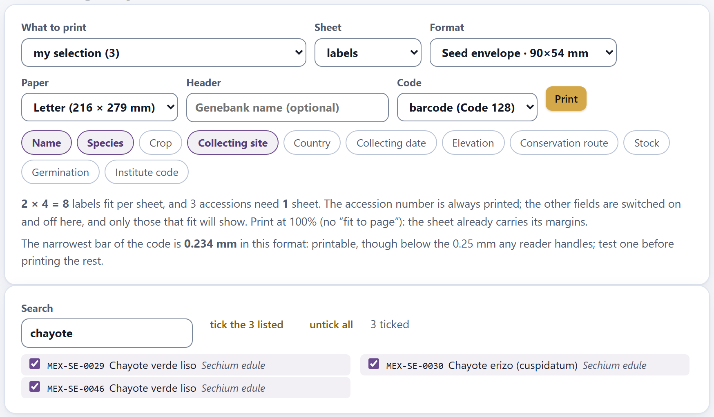
Figure 9.2. The three chayote accessions, picked with the search box for a shipment.
The selection stays ticked even if you change the search, and the selector option tells you how many you have: my selection (3). It lives only while the app is open: reloading the page loses it.
9.2The five formats and how many fit on a sheet
The Format selector offers five label sizes, one per object labeled in a genebank; the name of each option carries its size. Paper chooses letter (216 × 279 mm, the default) or A4 (210 × 297 mm). The app draws each label with a gray border with rounded corners, which is the cutting line: it is designed to be printed on a full sheet of adhesive paper and cut out, not for pre-cut label sheets of a commercial size.
Table 9.2. The five formats, how many labels fit on each paper and how many sheets the example collection (46 accessions) needs.
Format
Size (mm)
Text (mm)
Letter
Sheets
A4
Sheets
Seed envelope
90 × 54
3.2
2 × 4 = 8
6
2 × 5 = 10
5
Cold-store jar
63 × 29
2.5
3 × 8 = 24
2
3 × 9 = 27
2
Field stake
95 × 35
4.2
2 × 7 = 14
4
2 × 7 = 14
4
Cryovial
33 × 13
1.9
5 × 17 = 85
1
5 × 18 = 90
1
Shipping label
100 × 62
3.4
1 × 4 = 4
12
1 × 4 = 4
12
The Text column is the height of the field text; the accession number is 1.25 times larger. On the envelope, 3.2 mm is about 9 typographic points; on the cryovial, 1.9 mm is about 5.4 points, which can be read with a magnifier or very good eyesight: that is what the code is for.
▸Worked example · how many envelopes fit on a letter sheet
The app leaves an 8 mm margin at each edge of the paper and 2 mm between labels. In each direction, the labels that fit are those that go into the paper minus the two margins, counting that the last one has no gap after it:
sheets = ⌈46 / 8⌉ = ⌈5.75⌉ = 6 (the last one with 6 envelopes)
on A4: ⌊(210 − 14) / 92⌋ = 2 columns; ⌊(297 − 14) / 56⌋ = 5 rows → 10 per sheet and 5 sheets
This is the computation summed up in the line below the buttons: 2 × 4 = 8 labels fit per sheet, and 46 accessions need 6 sheets. The shipping label, 100 mm wide, does not fit twice across (2 × 100 + 2 = 202 > 200 mm) and goes in a single column.
The preview shows all the sheets, one below the other, each with its footer sheet 1 of 6, which is not printed. With the whole collection and a QR on every label, building the sheets takes a moment: meanwhile, the app shows its waiting window.
9.3What each label says
Each label carries, from top to bottom: the header, if you wrote one, in small gray type; the accession number (ACCENUMB), always, in bold monospaced type so that zero and O are not confused; the fields you switch on, one per line; and the code, at the bottom right if it is a barcode, and on the right, from top to bottom, if it is a QR.
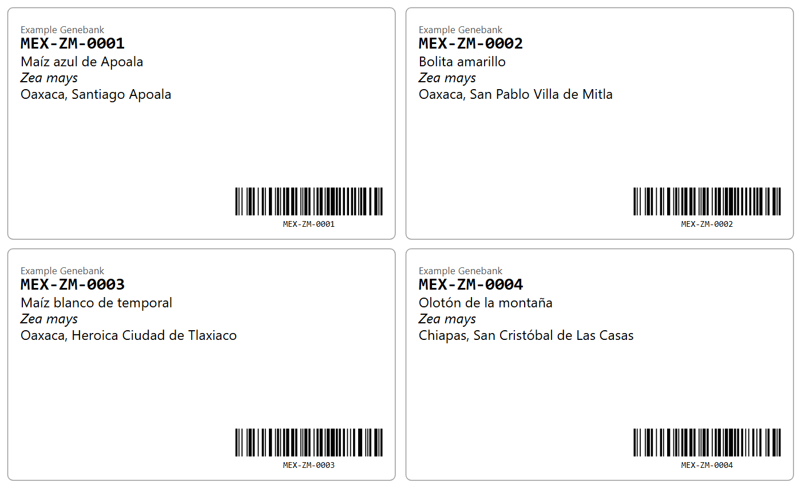
Figure 9.3. The first four envelope labels, with the three default fields, the header Example Genebank and the barcode.
The eleven field buttons are switched on and off with a click; the default ones are Name, Species and Collecting site. The app remembers from one session to the next the fields switched on, the header, the code and the chayote of the QR.
Table 9.3. The fields that can be printed and how they are written.
Button
Field
How it comes out (MEX-ZM-0001)
Name
ACCENAME
Maíz azul de Apoala
Species
GENUSSPECIESSUBTAXA
Zea mays, in italics; with the subspecies if there is one: Zea mays subsp. parviglumis
Crop
CROPNAME
Maíz
Collecting site
COLLSITE
Oaxaca, Santiago Apoala
Country
ORIGCTY
Mexico: the name of the country, in the language of the app, not the ISO code
Collecting date
COLLDATE
2019-08-12 (year-month-day, ISO 8601; with the interface in Spanish, day/month/year); an incomplete date such as 2021---- comes out as “2021”
Elevation
ELEVATION
followed by “m”
Conservation route
GP_CONS
Seed bank (or the one deduced from STORAGE)
Stock
GP_STOCK
1800, with no unit
Germination
GP_GERMPCT
88 %
Institute code
INSTCODE
the FAO code of the institute
An empty field leaves no blank line: it is skipped. A text that reaches the edge or the QR is cut and ends in “…” —the header, the accession number and each field—, with an approximate estimate of the width of the letters. And only those that fit are printed: if a line no longer fits before the barcode or the bottom edge, it is left out, and the app says so in an ochre warning below the controls, naming the fields that do not fit (Figure 9.4). Table 9.4 gives how many lines fit on each format; the ones that are dropped are the last ones you switched on.
Table 9.4. How many field lines fit on each label, besides the accession number.
Format
Code 128
QR or no code
Code 128 with header
QR with header
Seed envelope
9
11
8
10
Cold-store jar
4
7
3
6
Field stake
2
4
2
3
Cryovial
1
3
0
2
Shipping label
9
12
9
11
On the shipping label with QR or no code, 12 lines fit, more than the 11 fields there are. Look at the stake: with a barcode only two fit, so of the three default fields the collecting site is left out, and the app warns One field does not fit on “Field stake”: 2 lines fit besides the number, so Collecting site is left out. On the cryovial with a barcode a single field comes out, and none if you also add a header. A long header is cut with “…” before the QR: keep it short, an acronym or the institute code.
9.4The Code 128 barcode
The default option of the Code selector is barcode (Code 128). The code carries only the accession number, and below it the same number in readable type (except on the cryovial, where it does not fit). It is not a drawing: the app writes the code according to the standard, and the app’s tests read it back to check it. With the 46 example accessions, the app’s own reader recovers all 46 numbers without a single error.
θTheory in brief · how a Code 128 is written
A Code 128 is a row of symbols. Each symbol has three bars and three spaces that measure from 1 to 4 modules and always add up to 11 modules; the module is the thinnest stripe of the code. There are 107 symbols, with values from 0 to 106. The code begins with a start symbol that sets the character set —B (value 104) for letters, digits and signs of printable ASCII, or C (105), which stores two digits per symbol—, continues with the data, a check digit and the stop symbol, which is 13 modules wide. Halfway through the code you can switch from one set to the other with symbols 99 (to C) and 100 (to B). In set B, the value of a character is its ASCII code minus 32.
check = (start + Σi i × valuei) mod 103 · modules = 11 × (symbols without the stop) + 13
The app switches to set C when at least six digits come in a row, or four if they are the last ones and even in number: that way the code is shorter and, in the same space, has wider bars. The reader adds up the same products and discards the code if the check does not match: that is why a misread code almost never gives a wrong number, but no number at all.
▸Worked example · the code of MEX-ZM-0001
The first seven characters go in set B; the four final digits are even in number and close the text, so the app switches to set C and stores them in two symbols.
start B = 104 · M = 77 − 32 = 45 · E = 37 · X = 56 · − = 13 · Z = 58 · M = 45 · − = 13 · to C = 99 · “00” = 0 · “01” = 1
widths: start 211214 · M 113123 · E 132113 · … · check 112133 · stop 2331112
Without the switch to set C, the four digits would take four symbols instead of three, and the code would be 156 modules wide. The 46 example accessions have numbers of the same form (three letters, hyphen, two letters, hyphen, four digits) and all of them are 145 modules wide.
The code takes a fixed width on each format, so the module comes from dividing that width by the modules of the code. Whether the code can be read depends on the module: each stripe must span several printer dots. A 300 dpi printer places a dot every 0.085 mm.
Table 9.5. The barcode on each format, for a 145-module number such as MEX-ZM-0001.
Format
Code width (mm)
Bar height (mm)
Module (mm)
Dots at 300 dpi
Seed envelope
34
6.4
0.234
2.8
Cold-store jar
26
5.0
0.179
2.1
Field stake
30
4.6
0.207
2.4
Cryovial
22
4.0
0.152
1.8
Shipping label
42
8.3
0.290
3.4
A longer accession number makes the module thinner, because the width does not change; that is why the app measures the module with the longest number of what you are about to print. To the right of the code lies the label margin, from 1.6 to 3.5 mm, which on every format is wider than the ten modules of quiet zone the standard requires; to the left there is nothing.
Below the controls, the app says how wide the narrowest bar is and whether it is enough. From 0.25 mm up anyone can read it: on the shipping label it says The narrowest bar of the code is 0.290 mm in this format, plenty for any reader. Between 0.19 and 0.25 mm —the envelope and the stake— the note adds that it is printable but that you should test one. Below 0.19 mm —the jar, with 0.179 mm, and the cryovial, with 0.152 mm— it shows an ochre warning: an office printer no longer draws the bars evenly, nor does a handheld reader tell them apart. On those labels, print with a thermal printer of 300 dpi or more and test the reader before going on, or use the QR.
Figure 9.4. The two warnings for the cryovial with a barcode and the three default fields: the bar is too thin and two fields do not fit.
Code 128 only writes characters of printable ASCII. If an accession number carries ñ, accents or other characters outside it, that label comes out without a barcode: in the preview the app frames it with a dotted red line, which is not printed, and a warning says how many labels come out like that and suggests using the QR, which accepts any character, or fixing the number in Block 2.
9.5The QR code and the chayote in the middle
With Code set to QR, each label carries on its right a square QR code with the accession number, and the chayote in the middle button appears, switched on by default, which draws a chayote on a white disc in the middle of the code. With no code the label carries text only.
θTheory in brief · how a QR is written
A QR is a square matrix of light and dark modules. The version sets its size: version v measures 17 + 4v modules per side. Three finder patterns in the corners, the timing lines and, from version 2 on, the alignment patterns orient the reader; the rest carries the message in bytes (codewords) plus Reed–Solomon error-correction bytes. There are four correction levels, which recover roughly 7% (L), 15% (M), 25% (Q) and 30% (H) of the bytes. Finally one of eight masks is applied, which inverts modules to avoid blotches and stripes that would confuse the reader; the app tries all eight, scores them with the four penalty rules of the standard and keeps the one with the lowest score. The level and the mask travel in 15 format bits, protected by their own code.
The app writes the text in byte mode (UTF-8), always at level H, in versions 1 to 10. At level H, 7 bytes fit in version 1, 14 in version 2, 24 in version 3 and 119 in version 10; an accession number of 8 to 14 characters goes in version 2.
The 46 example accessions all end up in version 2. The chayote takes a 7 × 7 module gap in the middle (26% of the side, rounded: 25 × 0.26 = 6.5 → 7), 49 of the 625 modules, 7.8% of the area, and the white disc stays inside the gap. For all 46, the app’s own reader, which does not correct errors, still recovers the number with the gap left blank: the gap falls on padding and correction bytes, not on those of the number. Even if it fell on them, level H has correction to spare; that is why the drawing always goes with level H.
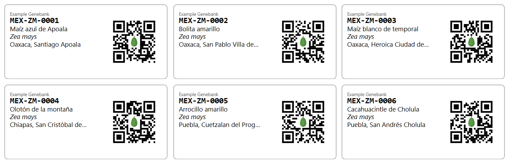
Figure 9.5. Jar labels with QR and the chayote in the middle. The collecting site is cut with “…” before the code.
The gap never covers the modules that orient the reader. In version 1 (numbers of up to 7 characters) it shrinks until it no longer touches the format information and is 3 × 3 modules; from version 7 on (texts longer than 58 characters) the alignment pattern falls right in the middle and no gap avoids it, so the QR comes out without the chayote even if the button is on.
The side of the QR is the height of the label minus its margins, never more than a third of the width; the text stops 1 mm before the code’s square. Inside that square the app leaves, around the modules, the 4 blank modules the standard requires.
Table 9.6. The QR on each format (version 2: 25 modules plus 4 blank on each side, 33 in total).
Format
QR side (mm)
Module (mm)
What the app says
Seed envelope
30.6
0.93
Each QR module is N mm in this format, plenty for any reader. Version 2, level H, with the 4-module quiet zone on each side the standard asks for.
Cold-store jar
21.4
0.65
Field stake
28.4
0.86
Shipping label
34.0
1.03
Cryovial
9.8
0.30
An ochre warning (below).
Below 0.4 mm per module the app shows an ochre warning. With the cryovial it says:
On this label each QR module is 0.30 mm, below the 0.4 mm that a laser printer and a phone camera resolve comfortably (already with the 4-module quiet zone on each side). Print one and test it before doing the rest; if it does not read, use the barcode, which copes better in so little space.
Only the cryovial falls below with numbers like those of the example. The warning is computed with the longest number of what you are about to print, which is the one that gives the densest QR.
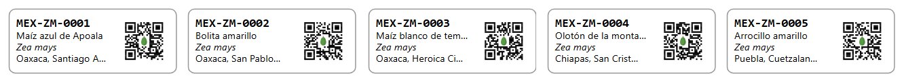
Figure 9.6. Cryovial labels (33 × 13 mm) with a barcode, above, and with a QR, below. With the barcode a single field fits; with the QR, three, but each module is 0.30 mm. Texts that do not fit end in “…”.
iBarcode or QR?
The barcode can be read by any handheld reader of the kind that connects to the computer as a keyboard: the number appears wherever the cursor is, in a spreadsheet or in the Block 2 search box. The QR can also be read by a phone camera, and in the same space it leaves more lines of text, but it needs larger modules. On envelopes, jars and shipping labels both work; on the cryovial, test both with your printer; on the field stake, the QR leaves twice as many fields.
9.6Printing and checking
The Print button opens the browser’s print dialog with the preview; the button is disabled if there are no accessions to print. With labels, the app prepares the printout at exact scale: each sheet measures the same as the chosen paper, carries its own 8 mm margins, and the page is declared at the size of the paper and with no browser margin. That way nothing shrinks and no blank sheet is left over at the end. The same happens if you print with Ctrl + P while you are in Block 9.
89.6
What was measured · millimeters
When the 46 envelope labels were printed to PDF, they came out as 6 sheets on letter and 5 on A4, with no blank sheet. The gray border of each envelope measured 89.6 mm wide on both papers —the border runs 0.2 mm inside each edge of the 90 mm—, and the first column began 8 mm from the edge of the paper.
The worksheets are printed as a document: tables split across sheets and repeat their header row at the top of each sheet. With the whole example collection on letter paper and the app in English, the sowing list takes 2 sheets, the register book 2 and the delivery note 2. At the foot of the block, a note sums up what to take care of: Check the first sheet before printing a hundred.
In the dialog set the scale to 100%, not “fit to page”, as the line in section 1 also asks, and turn off the browser’s headers and footers.
Print one sheet and measure a label with a ruler: the envelope must measure 90 × 54 mm. Some printer drivers shrink the sheet on their own; if the label comes out smaller, look in their options for “actual size” or “100%”.
Scan the code with the reader. If the number it reads is the one on the label, print the rest.
For the field and the cold room, the paper matters as much as the ink: use polyester label stock or water-resistant paper, and laser toner or thermal transfer; inkjet ink runs with the condensation when a jar is taken out of the cold.
9.7The sowing list
With Sheet set to sowing list, the preview turns into the sheet you take to the greenhouse or the field for a regeneration: one row per accession with how many seeds to sow, and three blank columns to write the plot, the date and the notes by hand. At the top go the title, a line with the number of accessions and of plants, and, on the right, the header and today’s date. The natural thing is to combine it with the lots in trouble from Block 8.
Figure 9.7. The sowing list of the 10 lots in trouble from Block 8, with 100 plants per accession. The six rows with an asterisk are not seed lots and have no germination test.
The seeds come from the same computation as in Block 8 (Section 8.7): the plants you want, divided by the lot’s germination and by a fixed field establishment of 90%. The plants per accession are, to begin with, those of one regeneration in the Block 8 assumptions (the Plants per regeneration slider, 100 by default), and the remark next to the field says so. If you change them in the Plants per accession field, from 10 to 500 in steps of 10, they apply to every row and the remark disappears.
If an accession has no GP_GERMPCT, the list uses the assumption of the Block 8 calculator (Lot germination (%), 85% by default, Section 8.7), writes it with an asterisk —85 %*— and explains it in a note below the table. With the whole example collection these are 17 accessions: all those that are not seed lots, because the field, in vitro, cryopreservation, in situ and on-farm routes have no germination test. Use the list with seed lots, and cross out the rows with an asterisk that are regenerated by replanting or subculture.
A measured 0%, on the other hand, is a datum: that lot has no viable seed. The row carries a dash under Seeds and an ochre note names it and suggests turning to the safety duplicate or collecting again.
The Download as CSV button saves sowing-list.csv, in UTF-8 with comma separator, with eleven columns: ACCENUMB, name, taxon, plants, germination, assumed_germination (“yes” when it is the assumption, empty when it was measured), seeds (empty with a measured 0%), stock (GP_STOCK), and the three empty ones plot, sowing_date and notes. With the interface in Spanish, the file is called lista-de-siembra.csv and its columns and the “yes” are in Spanish. Unlike on the sheet, the name is given in full.
Table 9.7. Three rows of sowing-list.csv with the whole collection (without the three empty columns).
ACCENUMB
name
taxon
plants
germination
assumed_germination
seeds
stock
MEX-ZM-0001
Maíz azul de Apoala
Zea mays
100
88
127
1800
MEX-ZM-0002
Bolita amarillo
Zea mays
100
89
125
1930
MEX-ZP-0012
Población silvestre de teocintle, reserva
Zea mays
100
85
yes
131
1200
Compare the seeds column with stock before sowing: if the lot does not have the seeds the list asks for, sow the ones there are and write it down in the notes.
9.8The delivery note
The delivery note is the sheet that travels with a shipment. At the top it carries the title, a note about the International Treaty, the header and the date; then four lines to fill in by hand —Requester, Institution, Intended use and Shipping date—, the table of accessions and two signature lines: Released by (name and signature) and Received by (name and signature).
Figure 9.8. The delivery note for the three chayote accessions of Figure 9.2.
The table has one row per accession: the number, the name (cut with “…” if it is longer than 24 characters), the species, the country of origin by its name, the Quantity left blank to write what is sent (seeds, grams, jars or cuttings) and the SMTA column, which comes from MLSSTAT: yes if the accession is in the Multilateral System (1), no if it is not (0) and a dash if the field is empty. With the whole example collection there are 21 “yes”, 4 “no” and 21 dashes.
iThe note does not replace the agreement
The Standard Material Transfer Agreement (SMTA) of the International Treaty on Plant Genetic Resources for Food and Agriculture is a contract signed or accepted separately, for each shipment of material from the Multilateral System. The app’s delivery note is the internal record of what left, how much and to whom; the SMTA column only reminds you which accessions need the agreement. A dash means you do not know: fill in MLSSTAT in Block 2 before shipping.
9.9The register book
The register book is the printed inventory of the collection: the title, the line 46 accessions as of 2026-10-31 and one table per conservation route, each with its subtitle and its number of accessions. The routes come out in the order in which their first accession appears in the passport; with the example collection they are Seed bank · 28, Genetic reserve (in situ) · 2, In vitro culture · 3, Cryopreservation · 1, Field genebank or living collection · 8, On-farm conservation · 3 and Not declared · 1, which is the chile costeño (Section 8.9).
Table 9.8. The columns of the register book.
Column
What it shows
Accession
ACCENUMB.
Name
ACCENAME, cut with “…” if it is longer than 22 characters.
Species
Genus and species, in italics.
Site
COLLSITE, cut with “…” if it is longer than 26 characters.
Acquired
ACQDATE, the date the accession entered the genebank, as year-month-day (ISO 8601), like the date at the top of the sheet; with the interface in Spanish, both go as day/month/year.
Stock
GP_STOCK, in the units of the route.
Last germ.
GP_GERMPCT with “%”, or empty.
Backup
DUPLSITE, the institute holding the safety duplicate, or a dash.
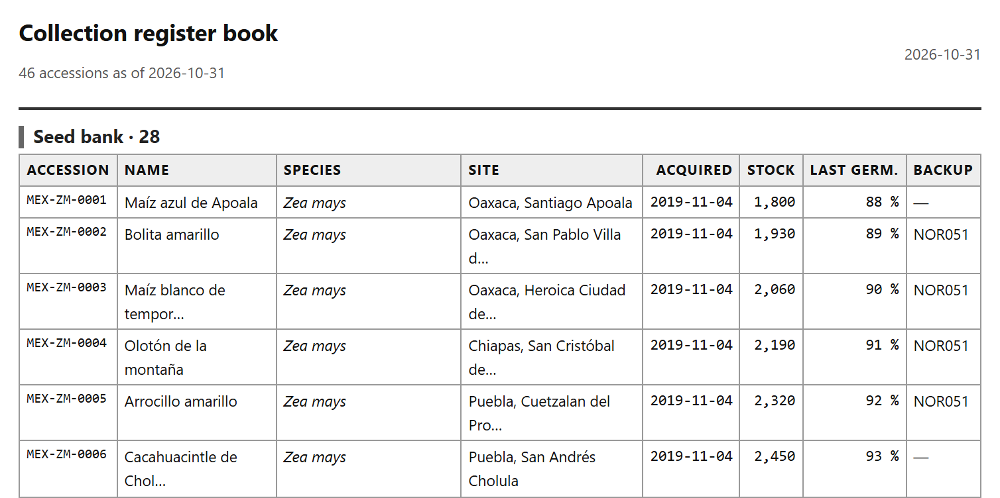
Figure 9.9. The beginning of the register book of the example collection.
Names and sites that are too long are cut and end in “…” (“Maíz blanco de tempor…”), and the stock carries a thousands separator, as in the rest of the app. The register keeps no history: it reflects the passport on the day you print it, with the tests and regenerations you have recorded in Block 8. Print it at the close of each season, sign it and file it with the passport export from Block 2: that way the collection has a paper record of every year.
When something goes wrong
What you see
Why it happens and what to do
Load your accessions in Block 2 first.
There is no passport. Load your collection or the example one (Chapter 2).
No accessions in this selection. and the Print button disabled
You chose my selection without ticking any, or the Block 7 core no longer exists. Tick them in the list or build the core again (Section 9.1).
The core option says (not built yet) and cannot be chosen
You have not built the core. Go to Block 7, load the characterization and come back.
Ochre warning that one or more fields do not fit
The label does not have lines for all of them (Table 9.4). Switch fields off, remove the header, use QR or a larger format.
A label with a dotted red border in the preview
Its number has characters that Code 128 does not accept (ñ, accents) and it comes out without a code. Switch to QR or fix the number in Block 2.
Ochre warning about the narrowest bar
The Code 128 module is below 0.19 mm (Section 9.4). Print a test one, use a wider format or the QR.
Ochre warning about the QR module
The format is too small for the QR (Section 9.5). Print a test one, or use the barcode.
The printed label is smaller than its format
The scale in the dialog is not 100%, or the printer driver shrinks the sheet. Set it to 100% or “actual size” (Section 9.6).
A row of the sowing list says 85 %*
The accession has no germination test and the list uses the Block 8 assumption (Section 9.7). If it is a seed lot, run the test; if it is not, cross out the row.
A row of the sowing list has a dash under Seeds
Its last test gave 0%: there is no viable seed. Turn to the safety duplicate or collect again.
✓Decision rule · what to print in Block 9
If you are labeling envelopes, jars or shipments
then use Code 128: any handheld reader reads it and types the number wherever the cursor is.
If you are labeling field stakes or want to read with a phone
then use the QR: it leaves more lines of text and the camera reads it.
If you are labeling cryovials
then test both codes with your printer before printing the rest; the module is at the limit.
If you are about to print a batch
then print one sheet, measure a label with a ruler and scan it; only then print the rest.
If you are preparing a regeneration
then use the lots in trouble from Block 8 with the sowing list, and cross out the accessions that are not regenerated from seed.
If material is leaving the genebank
then print the delivery note, check the SMTA column and fill in MLSSTAT wherever there is a dash.
If you are closing a season
then print the register book and file it with the passport export.
Block 9 writes nothing into the passport: everything it prints comes from Block 2 and from the results of Blocks 7 and 8. If a label says something wrong, fix it in the passport, not on the paper.
10
Chapter ten · Block 10 · Report
Report
The last block computes nothing of its own: it gathers what Blocks 2 to 8 compute into a document that stands on its own, with its numbers, its figures, the methods written out in prose and only the references of the methods that were used, each one cited in the text. The preview is the file itself: what you see is what is printed and what is downloaded. It also packs everything into a ZIP —the report, the working tables and each figure in SVG— and exports the passport in the two formats used to share germplasm: MCPD, the one genebanks use with one another, and Darwin Core, the one used by GBIF. This chapter explains each control, what each section of the report on the example collection says, which block each number comes from and what you have to check before signing.
10.1What the report gathers
10.2Title, signature and language
10.3The sections and the figures
10.4The summary and the collection
10.5Data quality
10.6Geographic distribution
10.7Diversity and collecting gaps
10.8Characterization, core and management
10.9The written methods and the references
10.10Printing and downloading the report
10.11The ZIP package
10.12The passport in Darwin Core and in MCPD
10.1What the report gathers
The block has two sections: 1 · What goes into the report, with the header data, the section buttons and the five output buttons, and 2 · The report, as it comes out, with the preview. The preview is not an approximate drawing: it is the same HTML document you download, placed in a frame on the page. If there are no accessions, the block says Load your accessions in Block 2 first.
Figure 10.1. Section 1 with the example collection, the example characterization from Block 7 and the title and genebank of this chapter’s example.
Every time you enter the block, the app runs again the analyses of Blocks 3 to 8 with whatever settings they have at that moment and builds the document; meanwhile, it shows its waiting window with the text Building the report. You do not need to have visited those blocks: if you never opened them, they come in with their default values. So, if you change a setting in another block —the grid size, the duplicate threshold, the core size— and come back here, the report already reflects it. The only thing that can be missing is the characterization and the core, which need the characterization data of Block 7; and the map, which only appears if there are coordinates.
Table 10.1. The eleven sections of the report, where each one comes from and when it appears.
Section
Comes from
When it appears
Summary
Blocks 2, 3, 6 and 8
Always; its button cannot be switched off.
The collection
Block 2
Always; its button cannot be switched off.
Data quality
Blocks 2 and 3
Always, unless you switch it off. The review is computed right here, with the duplicate threshold and the dismissed pairs you left in Block 3.
Geographic distribution
Block 4
When there are accessions with coordinates.
Geographic diversity
Block 5
With the units and the kind of diversity set in Block 5.
Collecting gaps
Block 6
With the territory, the grid and the weights of Block 6.
Characterization and core
Block 7
Only if you loaded a characterization in Block 7. Otherwise, the button is gray.
Genebank management
Block 8
With the genebank assumptions and the constants of Block 8.
Methods
all
Always; one paragraph per analysis present. Its button cannot be switched off.
References
all
Always; only those cited in the methods. Its button cannot be switched off.
Annex: the accessions
Block 2
Always, unless you switch it off.
Block 9 contributes nothing to the report: its labels and worksheets are printed there.
All the numbers in this chapter come from the example collection of Block 2 (button Open the example collection), with the example characterization of Block 7 and its default 10% core, and with the other blocks at their default values. The date of the report is that of the day it is built; here, 31 October 2026.
10.2Title, signature and language
The three fields at the top fill in the header of the document. The app remembers them from one session to the next.
Table 10.2. The header data.
Control
What it does
Title
The large title of the report and the name of the browser tab when the file is opened. If empty, the report is called Collection report (in Spanish, Informe de la colección).
Genebank or institution
Appears in the gray line below the title.
Signed by
Also in that line, after the genebank. Write the name of the person responsible for the collection.
Report language
the app's (default), español or English. It changes the whole document —titles, tables, texts, methods, references and the labels inside the figures— without changing the language of the app.
The header line joins what you wrote with the date and the number of accessions, separated by middle dots. With the example it says Example Genebank · 31 October 2026 · 46 accessions; in Spanish the date comes out as 31 de octubre de 2026. While you type in the three fields, the preview is rebuilt without running the analyses again and the cursor stays in place.
With English, the figures are drawn in English —the accumulation curve says “accessions examined” and “expected types”, the principal coordinates plot “axis 1” and “axis 2”— and so are the separate figures of the ZIP package. The references change their “y” into “and” and FAO’s city into “Rome”. Texts that come from your data (names, sites, remarks) stay as you wrote them.
10.3The sections and the figures
Below the fields there is one button per section, in the order they appear in the document, and at the end the figures button. When it is switched on (with a colored background), the section goes in; a click switches it off and the preview is rebuilt. By default all of them go in. Four buttons cannot be switched off: Summary, The collection, Methods and References; when you hover over them they say this section is always in the report. A gray button is a section without data: with the example collection this only happens to Characterization and core, until you load the characterization in Block 7. For screen-reader users, each button announces whether it is on or off.
What is useful is to remove the sections that are not relevant: for the annual report to management, perhaps the summary, the collection, management and the annex are enough; for a paper on diversity, switch off management and the annex. When you switch off an analysis section, its methods paragraph and its references do not disappear: the methods are written with everything that was computed, whether its section is included or not (Section 10.9).
The figures button removes or restores the report’s five figures: the collecting map, the accumulation curve, the gap map, the principal coordinates and the workload. Switching it off makes the file lighter; the sections keep their boxes, their tables and their notes, and the ZIP package also comes out without the figures folder (Section 10.11). Switching a section or the figures on or off, or changing the language, runs the analyses again and takes a moment.
10.4The summary and the collection
The document begins with the title, the header line and the summary: six boxes with the basic passport numbers and, below, a list of findings, each one counted with its number and in singular or plural as needed.
Figure 10.2. The beginning of the report on the example collection.
Table 10.3. The summary boxes and how they are counted.
Box
Ex.
What it counts
accessions
46
The records of the passport.
taxa
24
The distinct combinations of genus and species (GENUS + SPECIES), without the subspecies.
countries of origin
8
The distinct values of ORIGCTY, as written: the “MX” of the tepary bean, one of the planted errors (Section 3.4), counts as one more country.
conservation routes
6
The routes with at least one accession, declared in GP_CONS or deduced from STORAGE; “Not declared” is not counted.
with coordinates
45
Those with numeric latitude and longitude.
with a safety duplicate
20
Those with a safety duplicate in another institution (DUPLSITE different from INSTCODE).
The findings only appear when there is something to count: coordinates that disagree with the country and come with a proposed fix, coordinates with a clear error that the app cannot fix (on a separate line), candidate duplicate pairs, accessions without coordinates, ex-situ accessions without a safety duplicate, lots with a critical alert (from Block 8) and the grid coverage (from Block 6). With the example there are six. The safety-duplicate finding counts 21 and not 26 (the 46 minus the 20 that do have one) because the 2 in-situ populations and the 3 on-farm plots are not expected to have a duplicate in a cold room; it is the same number as in Block 8.
The section The collection describes the passport in four tables: the ten taxa with the most accessions, the ten countries of origin with the most accessions, how many accessions there are per conservation route and with what percentage, and the eight worst-filled mandatory or recommended descriptors.
Figure 10.3. The section The collection.
The routes table adds up to the 46 accessions and 100%: the chile costeño (MEX-CH-0042), which declares neither route nor storage, goes in the Not declared row; in the annex it appears with a dash in the route column. The descriptors table serves as a to-do list for Block 2: here, five accessions without an acquisition date (ACQDATE) and five without a storage type (STORAGE). If all descriptors are complete, the table shows the first eight with 100%.
iTaxa, species and types
The report gives three different counts of species diversity, and all three are correct: 24 taxa in the summary, which are all the species of the passport; 18 types in total in geographic diversity, which are the species of the accessions that fall inside a Mexican state, because the default units of Block 5 are the states; and 20 types with a single accession among the risks of the gap analysis, which Block 6 counts over the whole collection. When you quote a number, say which set it comes from.
10.5Data quality
The section sums up the Block 3 review in six boxes, shows the ten candidate duplicate pairs with the highest scores and closes with a note: a high-scoring pair is not a proven duplicate, and merging is done by hand in Block 3.
Figure 10.4. The section Data quality.
Table 10.4. The quality boxes, with the example collection; with a single item, the label is in the singular (“1 coordinate with a clear error”).
Box
Ex.
Where it comes from
coordinates with a clear error
1
Those that do not fall in the declared country and have a diagnosis: here, MEX-ZM-0039, with the unsigned longitude (Section 3.2). It is the Location problems of Block 3.
suspicious coordinates
0
The doubtful ones: latitude equal to longitude, round values, outside the country without a diagnosis.
consistency warnings
0
Names written in several ways and inconsistent catalogs.
proposed fixes
4
Those of Block 3: the sign of the longitude, “MX” for “MEX”, “BOLITA AMARILLO” in capitals and the extra spaces of the chayote.
candidate duplicate pairs
2
The pairs above the Block 3 threshold, minus those you dismissed.
passport warnings
29
The problems of the Block 2 validation (Section 2.6).
The coordinate with a clear error is the same as in the first finding of the summary. If you apply the fix in Block 3, the box drops to 0, the finding disappears and the point of MEX-ZM-0039 returns to Veracruz on the map.
The pairs table shows the numbers of the two accessions, the rounded score, the distance between the collecting points and the reasons for the similarity, in the same words as Block 3. With the two pairs planted in the example collection —the Bolita amarillo maize and the chayote verde liso, each entered twice— the table has two rows, both with a score of 100. If you merge the pairs in Block 3, they disappear from the report.
10.6Geographic distribution
The section shows the Block 4 collecting map with the framing set in that block (with the example, the whole world, because there are accessions from other continents) and its legend, and below it two tables: the twelve Mexican states and the twelve countries with the most accessions, counted by the coordinate, not by the text of the passport.
Figure 10.5. The section Geographic distribution. The point in Myanmar is MEX-ZM-0039, with the unsigned longitude.
The points are colored by conservation route, as in Block 4, and the legend says how many points there are of each: 27 from the seed bank (the seed accession without coordinates does not count), 8 from the field genebank, 3 in vitro, 3 on farm, 2 in situ, 1 cryopreserved and 1 not declared; in total, the 45 of the caption.
Here the difference between what is declared and what is measured shows: the section The collection counts 37 accessions from Mexico by ORIGCTY, and this one, 36 points inside Mexico, because the tuxpeño de la costa (MEX-ZM-0039), which claims to be from Mexico, has the unsigned longitude and falls in Myanmar. The tepary bean, declared as “MX”, does fall in Sonora. The note below says how many points fall outside Mexico: 9 of the points fall outside Mexico, so they only appear in the country count. The states that add up to 36 are the ten in the table; with more than twelve, the rest are not shown.
10.7Diversity and collecting gaps
The section Geographic diversity takes the Block 5 analysis: five boxes with the whole collection, a table with the twelve richest units, the accumulation curve with its estimators, a note when Chao1 is not reliable and the Mantel test in one sentence.
Figure 10.6. The section Geographic diversity, with the Mexican states as units and species as the type, the default values of Block 5.
The boxes are those of Block 5 (Chapter 5): 18 species in the 36 accessions that fall in a state, a Shannon of 2.34 for the whole, a Whittaker beta of 5.67 and a Good-Turing coverage of 61.1%. The Chao1 of 116 types, six times what was observed, comes with the note The Chao1 estimator leans on the number of types seen twice, and here there are very few: treat it as a rough bound and give more weight to Chao2 and the jackknife. With 36 accessions, no estimate of total richness is firm; the curve, which keeps rising, says the same without numbers.
The Exclusive column counts the species that are found only in that unit, what would be lost if the unit were lost: 4 in Puebla, 4 in Veracruz, 3 in Chiapas and 1 in Michoacán, the State of Mexico, Jalisco and Sonora. Oaxaca, with 7 accessions, has none: its three species are also found in other states.
The section Collecting gaps takes the Block 6 analysis (Chapter 6): four boxes —grid coverage, collected cells, empty cells and sites in the minimum set—, the map of cells with the ten priorities numbered, the table of those ten priorities, the table of types at risk and a note recalling that the analysis is geographic and compositional, not ecogeographic.
Figure 10.7. The beginning of the section Collecting gaps, with Mexico in 1° cells.
The priorities table gives, for each cell, its center, the state, the distance to the nearest collected point and the score: the first is the cell at 21.50, −99.50 in San Luis Potosí, 228 km from the nearest collection, with 86.9 points; the tenth, the one at 20.50, −99.50 in Hidalgo, with 70.0. The risks table counts how many types have each Block 6 signal: 20 with a single accession, 14 with no safety duplicate, 6 only in a field collection, 1 only in situ, no ex-situ backup and 1 all from one state or country. The same type can have several signals, so the column does not add up.
10.8Characterization, core and management
The section Characterization and core collection only appears if you loaded a characterization in Block 7. It carries four boxes, the principal coordinates plot with its legend, the table of the four validation indicators of the core with what each one says, and a note when the core has fewer than ten accessions.
Figure 10.8. The section Characterization and core collection with the example characterization and the default 10% core.
The numbers are those of Block 7 (Chapter 7): 46 accessions characterized with 12 descriptors, 4 groups with a mean silhouette of 0.14, and a core of 5 accessions —MEX-AG-0024, MEX-TC-0027, MEX-CU-0040, MEX-CH-0042 and MEX-ZM-0043—, 10.9% of those characterized. In the plot, the color is the cluster and the large outlined symbol marks the core accessions. The validation gives MD% = 0.0, VD% = 62.5, CR% = 75.2 and VR% = 91.4, and since the core has fewer than ten accessions, the report adds: The core has fewer than ten accessions: the validating t and F tests lack power and their percentages should be read with caution.
The section Genebank management takes the Block 8 dashboard (Chapter 8): four boxes, a table with one row per alert type and how many lots have it, the workload chart for the next 25 years and a note: a viability projection does not replace a germination test.
Figure 10.9. The section Genebank management with the default configuration of Block 8.
The boxes match the Block 8 dashboard: 10 lots in trouble, 21 that need attention and 15 maize lots with projected viability; the 14 lots without published constants are the 13 seed lots of the other species and the chile costeño, which declares no route.
Table 10.5. The alert types of the example, in the order of the report: critical first (red dot), then warnings (ochre) and information last (blue).
Alert
Lots
Severity
Last germination test below the threshold
4
critical
In-vitro subculture overdue
3
critical
Fewer field plants than the minimum
3
critical
Field replanting overdue
2
critical
No safety duplicate in another institution
21
warning
Site visit overdue
5
warning
No date for the last replanting
2
warning
Stock close to the minimum
2
warning
Cryovial check overdue
1
warning
No viability constants: not projected
14
information
The names are generic: the report says what is happening and to how many lots, not the numbers of each one. To find out which are the 4 lots with germination below the threshold —the Balsas teosinte with 81%, the vaquita bean with 84%, the tepary bean with 79% and the maíz ancho de riego with 72%— look at the Block 8 table or at data/work-plan.csv in the package (Section 10.11). The workload chart carries its legend —germination tests, regenerations, field replantings and in-vitro subcultures— and an axis with 0, 13 and 25 tasks; the peaks in years +7 and +17 are the germination tests of 22 seed lots that fall due together.
At the end of the document comes the annex: one row per accession with its number, name, species (without subspecies), country of origin by its name, collecting site, conservation route and stock. A country code the app does not recognize, such as “MX”, comes out as it is. It is the list that is filed with the report; if you do not need it, switch off its button.
10.9The written methods and the references
The Methods section is the most useful thing the block has and the one that demands the most care. The app writes in prose one paragraph for each analysis present, with the numbers and the settings it took from each block, each method with its citation, ready to be pasted into the materials and methods section of a report or a paper. What was not computed does not appear.
Figure 10.10. The first three paragraphs of the methods in the example.
Table 10.6. The methods paragraphs and what each one takes from the app, with the numbers of the example.
Paragraph
What it says
Passport data
MCPD v2.1 with seven local fields (the route, the in-situ site, the keeper, the stock, the percentage and date of the last germination test and the date of the last regeneration); “46 accessions were recorded”; validation by descriptor and across fields; the export in Darwin Core.
Quality control and duplicates
The three coordinate mistakes, Levenshtein, the blocking scheme and Jaro-Winkler scoring; “2 candidate pairs were examined”.
Cartography
Natural Earth offline and point-in-polygon assignment.
Geographic diversity
The unit and type of Block 5 (“grouped by state”, “the diversity of species”), the indices, rarefaction, Chao1, Chao2, the jackknife, Good-Turing, Jaccard dissimilarity, UPGMA and the Mantel test “using 999 permutations”.
Collecting gaps
The “1° grid”, the four weights of the priority index (40, 25, 20 and 15), greedy complementarity and what the analysis is not.
Characterization and core collection
All the options of Block 7 (below).
Viability and management
The Ellis and Roberts equation with the store temperature (−18 °C) and seed moisture content (6%) of the genebank configuration, where the constants come from, the regeneration threshold (85%) and the interval between tests (10 years), and the number of plants needed to retain an allele.
Software
That everything was computed with GermplasmPro, version 1.0.0 (Barrera-Guzmán, 2026), in the browser and without sending any data.
The characterization paragraph follows every setting of Block 7. With the default values it says, among other things:
“Hierarchical clustering used Ward’s method in its D2 variant (Murtagh and Legendre, 2014), and the tree was cut into 4 groups, a number chosen by hand; the mean silhouette of that cut was 0.14 (Rousseeuw, 1987). The core collection, in the sense of Brown (1989), was requested at 10 % of the characterized accessions (5 of 46) and ended up with 5. It was built by strata —the 4 clusters—, with logarithmic allocation of the size among strata, picking within each stratum the accessions most distinct from one another by Gower distance. Every stratum was represented.”
If in Block 7 you choose UPGMA, 3 groups and a 20% core, the paragraph changes to “used UPGMA, the unweighted pair-group average (Sokal and Michener, 1958)”, “cut into 3 groups”, “the mean silhouette of that cut was 0.27” and “requested at 20 % … (9 of 46) and ended up with 9”. It also says whether you required at least one accession per stratum, how many strata were left without a representative and, with the M method, that the core was built by maximizing classes (Schoen and Brown, 1993), without strata.
!The methods are a draft, and the responsibility is yours
The app writes with what it knows; you sign. Read each paragraph before copying it, check that it says what you did and that every number matches the blocks, and adapt the style to that of your journal or your institution. Add what the app cannot know: where the passport and characterization data come from, who collected and with what permit, what conditions your cold room really has, why you chose each setting. If you cite a method, consult the original source: the app supplies the reference, but what the text claims about it, you claim. And if after downloading the report you change something in a block, the old text is out of date: go back into Block 10 and download it again.
The references are built from what is cited in the methods, in alphabetical order and numbered, in the language of the report. With the full example there are 24. Among them is that of the program itself, cited by the Software paragraph; without characterization, Brown, Gower, Hu et al., Murtagh and Legendre and Rousseeuw, cited only by that paragraph, disappear; and Darwin Core (Wieczorek et al., 2012) is always there, because the passport paragraph mentions the export.
Figure 10.11. The 24 references of the example report.
10.10Printing and downloading the report
The Print or save as PDF button opens the browser’s print dialog with the report only, without the app around it. For a PDF, choose Save as PDF as the printer. If the browser does not allow printing the frame, the app opens the report in a new tab and prints it from there; if the browser also blocks new windows, it says The browser blocked the window; download the report and open it with a double click.
The Download the report (HTML) button saves the document as report-2026-10-31.html (with the day’s date; with the interface in Spanish, informe-2026-10-31.html) and says Report downloaded. for four seconds. It is a single file of about 315 kB, with the figures inside, without fonts or external files: it opens with a double click in any browser, without internet, and can be printed from there, or opened in a word processor to edit it. The messages of the buttons are also announced to screen readers.
▸Example · the report on the example collection on paper
Printed to PDF on letter paper, with the default margins and without browser headers, the full report takes 13 sheets: the summary and the collection on the first two, quality, the map and diversity from the second to the fifth, the gaps on the fifth and sixth, characterization and management from the sixth to the eighth, the methods on the eighth and ninth, the references on the tenth and eleventh, and the annex of 46 accessions on the last three. The text is set in a serif face at 10.5 points and the tables in a sans-serif face, with the numbers aligned to the right.
When printing, titles and subtitles are not left alone at the foot of a sheet: they move to the next one with what they head. Figures are printed at 82% of the width and are not split; long tables are split between rows, and the table header is repeated on the next sheet. Accession numbers are not broken across two lines.
10.11The ZIP package
The Download everything (ZIP) button builds a package with the report, the working tables and the separate figures, and saves it as germplasmpro-2026-10-31.zip. While building it, it says Building the package… and when it finishes it counts the files: with the full example, 15 files in the package. The ZIP is written by the app itself, without outside libraries. The names of the files and folders inside follow the language of the report: those given here are the English ones; with the report in Spanish they are informe.html, datos/, figuras/, LEEME.txt and so on.
Table 10.7. The files of the package with the full example collection.
File
What it is
report.html
The report, identical to the preview: with the sections, the figures and the language you chose.
data/passport-mcpd.csv
The passport with the 42 MCPD v2.1 descriptors (Section 10.12).
data/passport-full.csv
The 42 descriptors and the seven local GP_ fields: 49 columns.
data/darwin-core.csv
The passport in Darwin Core (Section 10.12).
data/quality.csv
The same table as Download the quality report in Block 3 (quality-report.csv), produced by the same function: one row per finding, with type (geography, consistency, correction, duplicate or passport), level, accession, field (for consistency findings, the name of the warning) and detail. Only if there are findings.
data/work-plan.csv
One row per alert of each Block 8 lot: accession, taxon, route, level, alert and detail, with the numbers of each lot. Only if there are alerts.
figures/*.svg
Eight SVG figures 900 pixels wide, in the language of the report and with the colors of the light theme: collecting-map, accumulation-curve, diversity-map, collecting-gaps, complementarity-curve, principal-coordinates, dendrogram and workload. Only with the figures button on; those of Block 7, only with characterization.
README.txt
What the package contains, the date and time it was generated, the number of accessions and of files, and the difference between the three passport formats.
The package carries three figures that the report does not —the diversity map, the complementarity curve and the dendrogram—. Each separate figure is an SVG file in its own right, without the HTML legend or the caption of the report: write your own caption when you put it into another document. Since SVG is vector-based, it can be enlarged without losing sharpness and edited in any drawing program; if the journal asks for an image format, convert it with that program.
iWhat to file each year
The package is a snapshot of the collection on a date: the passport as it stood, the tables behind every number in the report and the figures. Keep it with the signed report and the Block 9 register book (Section 9.9). To reopen the collection in the app, use passport-full.csv in Block 2: it is the only one of the three that keeps the route, the stock and the germination and regeneration data in their own columns.
10.12The passport in Darwin Core and in MCPD
The last two buttons export only the passport, without the report, as CSV with UTF-8 encoding and comma separator:
Passport in MCPD saves passport-mcpd-2026-10-31.csv with the 42 MCPD v2.1 descriptors, in the order of the standard and with its names (PUID, INSTCODE, ACCENUMB…), and says 46 accessions in MCPD v2.1. It is the format for sending the list to another genebank or to a germplasm information system. The GP_ fields are left out.
Passport in Darwin Core saves darwin-core-2026-10-31.csv with 33 Darwin Core columns, the GBIF standard, and says 46 records in Darwin Core.
Nineteen MCPD descriptors have a term of their own in Darwin Core and are translated; the other thirty —among them SAMPSTAT, STORAGE, MLSSTAT, DUPLSITE and the seven GP_— travel in the dynamicProperties column as a JSON object, with their original name preceded by mcpd:. Between the translated columns and that one, the file keeps the complete passport.
Table 10.8. Some Darwin Core columns and where they come from, with the row of MEX-ZM-0001 and the report in English.
Darwin Core term
Comes from
MEX-ZM-0001
occurrenceID
INSTCODE:ACCENUMB
MEX006:MEX-ZM-0001
basisOfRecord
the route
LivingSpecimen (in situ and on farm: HumanObservation)
collectionCode
fixed
germplasm
recordedBy
COLLNAME
empty: the example does not include the name of the collector
eventDate, year, month, day
COLLDATE
2019-08-12 · 2019 · 8 · 12
scientificName
GENUSSPECIESSUBTAXA
Zea mays
country, countryCode
ORIGCTY
Mexico · MX (two-letter ISO code)
decimalLatitude, decimalLongitude, geodeticDatum
DECLATITUDE, DECLONGITUDE
17.6871 · −97.2788 · EPSG:4326
minimum- and maximumElevationInMeters
ELEVATION
1993 · 1993
samplingProtocol
COLLSRC
Farm store
degreeOfEstablishment
SAMPSTAT from 300 to 599
cultivated
preparations
the route
Seed bank
dynamicProperties
the remaining 30
{"mcpd:ACCENAME":"Maíz azul de Apoala", "mcpd:SAMPSTAT":"300", "mcpd:STORAGE":"13;40", … "mcpd:GP_GERMPCT":"88", …}
The texts of country, samplingProtocol, georeferenceProtocol and preparations come out in the language of the report: if you are going to upload the file to GBIF, set the report to English before exporting. recordedBy is the person who collected, and is only filled from COLLNAME; the code of the collecting institute travels in dynamicProperties. Wild material has no term in degreeOfEstablishment: it is left empty and the full SAMPSTAT code goes in dynamicProperties. If the country is miswritten in the passport, like the “MX” of the tepary bean, country and countryCode are left empty: fix the passport in Block 3 first.
When something goes wrong
What you see
Why it happens and what to do
Load your accessions in Block 2 first.
There is no passport. Load your collection or the example one (Chapter 2).
The Characterization and core button is gray
No characterization is loaded. Load it in Block 7 (Chapter 7) and come back.
The Summary or the Methods cannot be switched off
They are among the four sections that always go into the report (Section 10.3).
The geographic distribution does not appear
No accession has coordinates. Fill them in in Block 2.
The summary says a coordinate disagrees with its country
Check it in Block 3 and apply the proposed fix, or explain in the text why you keep it.
I want the numbers of each lot with an alert
The report only counts lots by alert type. Look at the Block 8 table or at the work plan in the ZIP.
I changed a setting in another block and the downloaded report does not have it
The report is built when you enter the block. Go back to Block 10 and download again.
The browser blocked the window; download the report and open it with a double click.
The browser did not let the tab for printing open. Download the HTML and print it from there, or allow pop-up windows for the app.
The Darwin Core comes out with countries and protocols in Spanish
They come out in the language of the report. Choose English in Report language and export again.
The ZIP carries fewer than 15 files
There are no quality findings, or no alerts, or no characterization, or the figures are switched off: each removes its own files.
✓Decision rule · before handing in the report
If the report goes to management or into the annual report
then keep the summary, the collection, management and the annex, and fill in the genebank and the signatory.
If it goes into a paper
then use the methods as a draft: check them against the blocks, consult the sources they cite and add what the app does not know.
If the summary reports coordinates that disagree or pairs to review
then resolve them in Block 3 before building the final report.
If you changed a setting in another block
then enter Block 10 again and download again.
If the report is to be in English
then choose English: text, figures, references and Darwin Core change together.
If you need the figures in another document
then download the ZIP and use the SVGs in figures/, with your own caption.
If you are going to share the list with another genebank
then send the passport in MCPD.
If you are going to publish the data in GBIF
then use Darwin Core in English and check the empty countries.
If you are closing the year
then file the ZIP with the signed report and the Block 9 register book.
This closes the ten blocks. The report says what the collection and the analyses say, but the interpretation, the sources and the signature are yours. What follows in the manual are the appendices: the files the app reads and writes, the decision rules gathered together, the glossary, what to do when something goes wrong, the references and the license.
A
Appendices
Appendices
What you need to have at hand and did not fit in any chapter: which files the app reads and writes, with the formats and the code lists of the passport; the decision rules of the ten blocks gathered in a single list; the vocabulary of genebanks; what to do when something goes wrong; the references behind each computation, and what you need to know about the tool itself: the example data, what it stores and where, the keyboard, the license and how to cite it.
AThe files the app reads and writes
BThe decision rules, gathered together
CGlossary
DWhen something goes wrong
EReferences
FThe tool: data, privacy, license and citation
AThe files the app reads and writes
GermplasmPro runs in the browser and sends nothing to any server: every file comes in from and goes out to a folder on your computer. This appendix says which they are, what format the passport data require and which columns each downloaded table carries.
A.1 · What the app reads
Format
Where and what for
.csv, .tsv, .txt
Block 2, Open a file (CSV, TSV or project): the passport, one row per accession. Block 7, Load my characterization (CSV): the characterization, which is joined to the passport by accession number.
pasted
Blocks 2 and 7, Paste from a spreadsheet: a block of cells copied with its header row. In Block 2 the same window carries the guided template for writing the table from scratch (Section 2.4).
project .json
Block 2, the same open button: the collection, the characterization and the settings of Blocks 3, 8 and 9 saved earlier with Save the project (.json).
on screen
Block 8: the viability constants of other species (Add constants for a species) and the records of tests, regenerations, subcultures, checks and visits, which are typed into the app itself and go straight into the passport.
When reading a text, the app picks the separator on its own —tab, semicolon, comma or vertical bar— by testing which one splits every line into the same number of fields, not which one appears most often. It respects quotes, commas and line breaks inside a quoted cell, and the byte order mark at the beginning; if replacement characters appear when decoding as UTF-8, it reads the file again as Windows-1252, which is what a spreadsheet on Windows usually saves. Completely empty rows are discarded, a repeated header is numbered so as not to lose the column, and a column without a header is named as in the spreadsheet: Column A, Column B… (Columna A… with the interface in Spanish).
!A spreadsheet workbook is not read, and that is on purpose
An .xlsx, .xls or .ods file does not open; save it as .csv or copy and paste the cells. Reading it would mean bringing in someone else’s library of hundreds of thousands of lines for a problem that is solved in two clicks. The choice was for the app not to load a single line that is not its own (Appendix F): that is what lets it open with a double click, without installing anything, and work without internet.
A.2 · The passport formats
Chapter 2 gives the full list of the 49 descriptors —the 42 of MCPD v2.1 and the seven of the GP_ extension— with their name in the app and an example (Tables 2.2 and 2.3). Here is what the validation requires of each class of descriptor. An error is a value that cannot be; a warning, one worth checking.
YYYYMMDD, with hyphens where unknown: 201907--, 2019----. Error if it does not follow that pattern, if the year is before 1700 or after the current one, if the month is not from 01 to 12, if the day is not from 01 to 31 or if that day does not exist in that month (30 February).
Decimal coordinates · DECLATITUDE, DECLONGITUDE
Signed decimal degrees: negative latitude south of the equator and negative longitude west of Greenwich. A decimal comma is accepted and becomes a point on import. Error if it is not a number, if it falls outside −90 to 90 or −180 to 180, or if only one of the two is given; warning if it is exactly zero.
Degrees, minutes and seconds · LATITUDE, LONGITUDE
DDMMSSH for latitude (173832N) and DDDMMSSH for longitude (0971952W); unknown minutes or seconds, with hyphens. If only these are given, the app computes the decimal ones on import; if both are given and differ by more than 0.02°, warning.
A number, with a decimal point or comma. Error if germination falls outside 0 to 100 or if uncertainty or stock is negative; warning if elevation falls outside −430 to 6,500 m.
Country · ORIGCTY
Three-letter ISO 3166-1 alpha-3 code (MEX, GTM, PER), converted to capitals on import. Error if it is not three letters; warning if it is well formed but not in the list the app carries.
One of the codes in the table below, regardless of case. Any other value is an error.
Multi-valued list · STORAGE
One or more codes from the list, separated by semicolons (13;40). Error if any of them does not exist.
Free text · the rest
No format. ACCENAME and OTHERNUMB separate several values with semicolons.
Empty mandatory descriptors —INSTCODE, ACCENUMB and GENUS— are errors, and the twelve highly recommended ones, when empty, warnings. An in-situ or on-farm record is not asked for STORAGE, ACQDATE, DUPLSITE or INSTCODE. The rules that cross two fields —status against collecting source, order of the dates, in-situ route against storage, safety duplicate in the same institution— are in Table 2.6 of Section 2.6.
A.3 · The code lists
They are those of MCPD v2.1 (Alercia, Diulgheroff and Mackay, 2015), with the meaning given in the standard; GP_CONS belongs to the extension. There is no need to learn them: when you type in those cells, the table and the record card of Block 2 drop down the list with its meaning.
Descriptor
Codes
SAMPSTAT biological status · 21
100 wild · 110 natural · 120 semi-natural/wild · 130 semi-natural/sown · 200 weedy · 300 traditional cultivar/landrace · 400 breeding or research material · 410 breeder’s line · 411 synthetic population · 412 hybrid · 413 founder stock or base population · 414 inbred line · 415 segregating population · 416 clonal selection · 420 genetic stock · 421 mutant · 422 cytogenetic stocks · 423 other genetic stocks · 500 advanced or improved cultivar · 600 GMO · 999 other
COLLSRC collecting source · 22
10 wild habitat · 11 forest or woodland · 12 shrubland · 13 grassland · 14 desert or tundra · 15 aquatic habitat · 20 farm or cultivated habitat · 21 field · 22 orchard · 23 backyard, kitchen or home garden · 24 fallow land · 25 pasture · 26 farm store · 27 threshing floor · 28 park · 30 market or shop · 40 institute, research organization, genebank · 50 seed company · 60 weedy, disturbed or ruderal habitat · 61 roadside · 62 field margin · 99 other
STORAGE storage · 9
10 seed collection · 11 short-term seed · 12 medium-term · 13 long-term (all four give the seed route) · 20 field collection · 30 in vitro collection · 40 cryopreserved collection · 50 DNA collection · 99 other (no route)
MLSSTAT Multilateral System · 3
0 not in the Multilateral System · 1 included · 99 other
GEOREFMETH georeferencing · 4
GPS · determined from map · gazetteer · determined by locality description
GP_CONS active route · 7
seed seed bank · field field genebank or living collection · invitro in vitro culture · cryo cryopreservation · dna DNA bank (these five, ex situ) · insitu genetic reserve · onfarm on-farm conservation (these two, in situ). If empty, it is deduced from the first STORAGE code that has a route.
passport-template.csv: the 49 descriptors with an example row. From the guided template, Download this template as CSV gives germplasmpro-template.csv, with the ticked columns only.
2
Export MCPD (standard only) · Export everything (with the extension)
passport-mcpd.csv, with the 42 descriptors of the standard; passport-full.csv, with all 49.
2
Save the project (.json)
germplasmpro-collection.json (version 2 of the format): the passport, the Block 7 characterization, the threshold and the dismissed pairs of Block 3, the genebank assumptions, the custom viability constants and the calculators of Block 8, and the label preferences of Block 9.
3
Download the quality report
quality-report.csv: one row per finding of geography, consistency, correction, duplicate or passport validation.
4
Export SVG · Export PNG (2×) · Points as CSV (with state and cell)
collecting-map.svg and .png; map-points.csv, with the accessions on view.
Collecting route as CSV · Types at risk as CSV · Map as SVG
collecting-priorities.csv, with the first 200 cells; types-at-risk.csv; collecting-gaps.svg.
7
Download the template
characterization-template.csv: your accession numbers and empty columns for six descriptors.
7
Export the core as CSV · Characterization + group + core · Distance matrix
core-collection.csv; characterization-full.csv; gower-distances.csv. Also PCoA as SVG and Tree as SVG: pcoa-gower.svg and gower-tree.svg.
8
Work plan as CSV
work-plan.csv: one row per accession with some alert. If there are none, the app says so and downloads nothing.
9
Print · Download as CSV
The labels, the delivery note and the register book are printed (or saved as PDF from the print dialog); the sowing list is also available as sowing-list.csv.
10
Print or save as PDF · Download the report (HTML)
report-YYYY-MM-DD.html: the report in a single file, which opens in any browser.
10
Passport in Darwin Core · Passport in MCPD
darwin-core-YYYY-MM-DD.csv, with 33 terms; passport-mcpd-YYYY-MM-DD.csv, with the 42 descriptors.
10
Download everything (ZIP)
germplasmpro-YYYY-MM-DD.zip: report.html, README.txt, the data/ folder with the three passports (MCPD, complete and Darwin Core) and, if they exist, quality.csv and work-plan.csv, and the figures/ folder with the figures in SVG (Section 10.11).
Figures opened in the figure studio are exported from there in the format and size you choose.
A.5 · The columns of each table
File
Columns, in order
passport-mcpd.csv
the MCPD keys in the order of Table 2.2: PUID, INSTCODE, ACCENUMB … STORAGE, MLSSTAT, REMARKS
passport-full.csv
the same 42 and, at the end, GP_CONS, GP_SITEID, GP_KEEPER, GP_STOCK, GP_GERMPCT, GP_GERMDATE, GP_REGENDATE
ACCENUMB, ACCENAME, TAXON, CROPNAME, group, stratum, core, pcoa1, pcoa2; characterization-full.csv carries every accession and adds the characters in use
gower-distances.csv
accession and one column per accession: the full matrix
These are the column names with the interface in English; with the interface in Spanish they come out in Spanish. The MCPD passport columns and the keys of the characterization template are the same in both languages (the characterization import accepts accession or accesion). In the ZIP, data/quality.csv has the same columns and rows as quality-report.csv from Block 3 (geography, consistency, correction, duplicate and passport validation), and data/work-plan.csv has one row per alert: accession, taxon, route, level, alert, detail. How each descriptor is translated into Darwin Core is in Section 10.12.
BThe decision rules, gathered together
The scales and thresholds the app places next to each number, in a single list; when they are adjustable, the default value is given. They are guides for reading, not laws: what you know about your species, your genebank and your sites always prevails. What is worth doing in each case is in the decision rule box that closes each chapter.
Block
Quantity
Scale or threshold
2
Completeness of a descriptor
≥ 90% green bar · 50–90% ochre · < 50% red
2
Elevation of the collecting site
−430 to 6,500 m plausible; outside, warning in Block 2 · outside −500 to 7,000 m, impossible: left out of the elevation coloring, the belts and the gradient (Blocks 4 to 6)
2
Coordinates
exactly zero: warning · decimal and degrees-minutes-seconds values differing by more than 0.02°: warning · only one of the two decimal values: error
3
Point against its country
inside the country’s rectangle with a one-degree margin: no problem · outside: sign change and swap are tried · (0, 0): error without a fix
3
Score of a possible duplicate
default threshold 50 points (slider from 25 to 95) · no single clue is enough; a matching collecting number is almost a signature · lowering the threshold proposes more pairs and gets fewer right
5
Mantel test (999 permutations)
p < 0.05 with positive r: diversity has geographic structure · p ≥ 0.05: no evidence at that scale
5
Richness estimators
fewer than three doubletons: warning Careful with Chao1 in this collection.; read jackknife 1, the most stable
5
Good-Turing coverage
probability that the next accession is of a type you already have; its complement, that it brings a new one
6
Coverage of the territory
< 25% of cells with collections: the number is shown in red
6
Priority index (0 to 100)
default weights: remoteness 40 · neighborhood richness 25 · state deficit 20 · nearby exclusive types 15 · remoteness capped at 250 km · neighborhood of about 220 km · robust priority: the cell that stays at the top when each weight is raised
6
Minimum set
the cells that, by complementarity, capture at least 90% of the types
7
Mean silhouette
> 0.25 the groups are real: stratify by group · close to 0, an almost arbitrary cut · negative, the accession would be better in another group
7
Core validation (Hu et al., 2000)
MD% < 20 · VD% < 20 · CR% > 80 · VR% ≥ 100 · classes captured > 80% · the two thresholds of the paper are those of MD% and CR%
7
Core size
10% by default · fewer than 10 accessions: warning that the core is too small to judge
8
Germination of a seed lot
regeneration threshold 85% · test or projection below the threshold: in trouble · less than 3 years to cross it: needs attention · test every 10 years
8
Seed stock
< 400 seeds: in trouble · < 600 (1.5 times the minimum): needs attention
8
The other routes, by default
field: replanting every 8 years, minimum 25 plants · in vitro: subculture every 12 months, minimum 10 jars · cryopreservation: check every 5 years, minimum 20 cryovials · genetic reserve: visit every 2 years · on farm: every year
8
Plants to regenerate
P(retaining an allele of frequency p) = 1 − (1 − p)k·n, k = 2 in outcrossing and 1 in selfing species · with p = 5% and 95% confidence: 30 plants for an outcrossing species, 59 for a selfing one
9
Narrowest bar of the Code 128
≥ 0.25 mm any reader reads it · 0.19–0.25 mm printable, but test one · < 0.19 mm warning: thermal printer
9
QR module
< 0.4 mm: ochre warning · with the chayote in the middle, always correction level H
CGlossary
Term
What it is
Accession (accesión)
A distinct sample of a species that the genebank conserves and manages as a unit, with its unique number (ACCENUMB), which is never repeated or reused.
Accidental duplicate (duplicado accidental)
The same collection entered twice into the catalog, almost always with the name written differently. It protects nothing: it inflates the collection and disorders the analyses. Block 3 looks for it.
Blocking (bloqueo)
Comparing only the pairs of accessions that share some key —the collecting or donor number, the start of the name, the genus with the cell, the taxon with the year and month of collection— instead of all against all. It is what makes searching for duplicates in a large collection feasible.
Code 128
A linear barcode that accepts letters, digits and signs; the one for envelopes, jars and shipments. Any handheld reader reads it and types the number wherever the cursor is.
Collecting gap (vacío de colecta)
A cell of the territory without any accession. In GermplasmPro the analysis is geographic and based on the collection, not ecogeographic: it uses no climate or soil layers.
Complementarity (complementariedad)
Choosing sites one by one, each time the one that adds the most types not yet held. It gives the minimum set of cells that gathers the diversity of the collection.
Conservation route (ruta de conservación)
The way an accession is managed today: seeds, field, in vitro, cryopreservation, DNA, genetic reserve or on farm. It decides the alerts of Block 8.
Core collection (colección núcleo)
A small subset that keeps, with a minimum of repetition, most of the diversity of the whole collection (Frankel and Brown, 1984); it is characterized and evaluated in depth instead of the whole collection.
Core allocation (C, P, L, S) (reparto del núcleo)
How many places in the core each stratum gets (Brown, 1989): constant, which favors small strata; proportional, which reproduces the imbalance of the collection; logarithmic or square root, which lie in between.
Cryopreservation (criopreservación)
Shoot tips, embryos or pollen at −196 °C, in liquid nitrogen. The long-term backup of clonal material; it is checked by thawing a cryovial.
Darwin Core
The standard set of terms for publishing biodiversity records, the one required by GBIF and other portals (Wieczorek et al., 2012).
Ex situ / in situ
Away from its place —in a seed bank, a field genebank, in vitro or cryopreserved— / in its place, where the population keeps evolving: the genetic reserve and the farm.
Exclusive type (tipo exclusivo)
A type (species, crop, taxon…) found in only one geographic unit of the collection. If that unit is lost, the type is lost with it.
Field genebank or living collection (banco de campo o colección viva)
Living plants in a plot, an orchard or an arboretum. The route for trees, recalcitrant species and vegetatively propagated crops; expensive and exposed.
Genetic reserve (reserva genética)
A protected site where a wild population is conserved in situ, almost always of crop wild relatives. GP_CONS = insitu; its key goes in GP_SITEID.
Good-Turing coverage (cobertura de Good-Turing)
1 − f1/N: the probability that the next accession you collect is of a type you already have.
Gower distance (distancia de Gower)
A distance between accessions for mixed characters —numeric, categorical and ordinal— with empty cells: each character contributes its relative difference and the average is taken only over what both have measured (Gower, 1971).
GP_ extension (extensión GP_)
The seven fields GermplasmPro adds to MCPD for management and in-situ conservation: active route, in-situ site and keeper, stock, last germination with its date and last regeneration. They are never confused with the standard and are exported separately.
Hill numbers (números de Hill)
Diversity expressed as “effective types”: q0 is richness, q1 the exponential of Shannon and q2 the inverse of Simpson (Jost, 2006). Always q0 ≥ q1 ≥ q2.
Jaro-Winkler, Levenshtein
Two measures of similarity between texts. Jaro-Winkler (Winkler, 1990) compares accession names and rewards a common beginning; Levenshtein counts the letters that must be changed, and flags misspelt genera.
M method (método M)
Building the core by pursuing, one by one, the classes of the qualitative and ordinal characters it does not yet have (Schoen and Brown, 1993).
Mantel test (prueba de Mantel)
Correlation between two distance matrices —here, composition and geography— with its p-value by permutation (Mantel, 1967).
MCPD v2.1
The FAO/Bioversity multi-crop passport descriptors, version 2.1 (Alercia, Diulgheroff and Mackay, 2015): 42 descriptors with a fixed key, the common way of writing the passport.
MD%, VD%, CR%, VR%
The criteria of Hu et al. (2000) for judging a core: means that differ, variances that differ, range retained and coefficient of variation ratio (the relative variation retained) compared with the collection.
Multilateral System (Sistema Multilateral)
That of the International Treaty on Plant Genetic Resources for Food and Agriculture; its material is supplied with the Standard Material Transfer Agreement (SMTA; in Spanish, ANTM). It is recorded in MLSSTAT.
On-farm conservation (conservación en la parcela)
In-situ conservation on the land of whoever sows it, where the variety remains under farmer selection. GP_CONS = onfarm; the keeping person or community goes in GP_KEEPER.
Outcrossing / selfing (alógama / autógama)
A species that crosses with other plants / that self-fertilizes. In a regeneration, each outcrossing plant contributes two independent gametes, and a selfing one, in practice, only one; that is why a selfing species needs almost twice as many plants.
Passport (pasaporte)
What is known about an accession: what it is, where it came from, who collected it and when, what material it is and how it is conserved. The input of every block.
Principal coordinates (PCoA) (coordenadas principales)
A two-axis map whose distances resemble as closely as possible those of a distance matrix, here the Gower one (Gower, 1966).
Priority index (índice de prioridad)
The 0 to 100 score of an empty cell in Block 6: the sum of remoteness, neighborhood richness, state deficit and nearby exclusive types, each scaled from 0 to 1 by its weight.
QR code (código QR)
A two-dimensional code with Reed–Solomon error correction. At level H it can be recovered even with 30% of the symbol covered, which allows the chayote to be drawn in the middle.
Rarefaction (rarefacción)
The richness a unit would have with a fixed number of accessions; it compares units with different collecting effort (Hurlbert, 1971; Heck, van Belle and Simberloff, 1975).
Regeneration (regeneración)
Sowing an accession to obtain new seed when germination or stock falls below the minimum. Each one is a bottleneck: regenerate seldom and with many plants.
Richness estimators (estimadores de riqueza)
Chao1, Chao2, jackknife 1 and jackknife 2: how many types the collection would have if collecting continued, computed from the rare types (with one or two accessions, or in one or two units).
Safety duplicate (duplicado de seguridad)
A sample of the same accession kept in another institution, so that a disaster does not take away the only copy. It is recorded in DUPLSITE; one in the same institution does not count.
Seed storage behavior (comportamiento de la semilla)
Orthodox: tolerates drying to 3–7% moisture and freezing. Intermediate: tolerates drying, but not deep cold. Recalcitrant: tolerates neither drying nor freezing, and cannot be kept in a seed bank.
Silhouette (silueta)
For each accession, how close it is to its own group compared with the neighboring group, from −1 to 1 (Rousseeuw, 1987). Its mean says whether the groups are real.
Slow-growth in vitro culture (cultivo in vitro de crecimiento lento)
Plantlets or shoot tips in jars, with growth slowed by cold or by the medium, subcultured every so many months.
UPGMA, Ward.D2
Two ways of building a clustering tree: UPGMA joins the groups with the smallest average distance (Sokal and Michener, 1958); Ward.D2, those that least increase the within-group sum of squares (Murtagh and Legendre, 2014).
Viability constants (constantes de viabilidad)
KE, CW, CH and CQ: those of the Ellis and Roberts equation for a species. The app carries the published ones for maize; those for other species are taken from Kew’s Seed Information Database or from the literature.
Viability equation (ecuación de viabilidad)
That of Ellis and Roberts (1980): with the temperature and the seed moisture content it gives the deviation σ of the life span, and with it how much the germination of a lot drops over the years.
WIEWS code (código WIEWS)
The code of an institution in FAO’s world information system: three country letters and three digits (MEX006). It is used by INSTCODE, DUPLSITE and the other institute descriptors.
DWhen something goes wrong
Each chapter closes with its own table of problems for the block. These are the general ones, those that affect the whole app.
What happens
What to do
A block says Load your accessions in Block 2 first.
There is no passport in memory. Load your collection, open your .json project or use the example collection (Chapter 2).
When you open the app, yesterday’s collection is not there
It is saved in the browser of that computer: another browser, another system account, a private window or having cleared the browsing data leave it behind. Open the .json project you saved.
The app does not open with a double click, or opens blank
Your institution blocks local pages. Use Open GermplasmPro.bat (or server.ps1), which opens the app at http://localhost:9600, or the online version.
The file is an .xlsx and does not open
Save it as .csv or copy the cells and use Paste from a spreadsheet (Appendix A.1).
The file is neither UTF-8 nor Windows-1252. Save it from your spreadsheet as “CSV UTF-8” and open it again.
The paste window says Everything landed in a single column.
The separator is not the right one: pick it in the paste window. If you really copied a single column, you can go on.
The first data row was taken as headers, or the other way round
Fix it with the The first row holds the headers box of the paste window; if there is only one row and it is a header, the app warns that there is no data left to import.
The coordinates carry a decimal comma (19,149)
With tab or semicolon as separator, the app understands them, warns when pasting how many values use it and converts them to a point on import. In a comma-separated file, a decimal comma not enclosed in quotes splits the number into two columns: save it with semicolons or copy and paste from the spreadsheet.
Opening a .json says That file is not a GermplasmPro project.
It was not written by Save the project (.json). If it is a table, save it as .csv.
I opened a project on another computer and my constants, my genebank assumptions or the pairs I dismissed are missing
The project was saved with an earlier version of the app, which only carried the passport and the characterization. Set them again on the original computer and save the project again: from version 2 of the format they travel with it (Appendix F.3).
Next to the Block 2 counter it says Could not save in this browser…
The browser storage is full or the window is private: what you do only lives in that tab. Save the .json project now and before closing.
I downloaded several tables in a row and only some came down
The browser throttles consecutive downloads: allow them for this site, or use Download everything (ZIP) in Block 10.
The report does not open for printing
The browser blocked the window, and the app says so: download the report with Download the report (HTML) and open it with a double click.
The printed labels do not measure what their format says
The scale in the print dialog is not 100% or the printer shrinks the sheet. Set it to 100% or “actual size” (Section 9.6).
The numbers do not match those of the manual
The manual uses the uncorrected example collection and the default values; a setting saved earlier (threshold, weights, assumptions) changes the result. Go back to the defaults or check the state the chapter starts from.
I want to check that the computations come out right in this browser
Open tests/index.html: these are the program’s tests; all must come out green (with ?all at the end of the address the passing ones are listed too).
EReferences
The references on the app’s home page, those the Block 10 report builds and those cited by the chapters, by family. The report cites only those of the methods the study used (Section 10.9).
Genebanks and their standards
Alercia, A., Diulgheroff, S. and Mackay, M. (2015). FAO/Bioversity multi-crop passport descriptors V.2.1 (MCPD V.2.1). Bioversity International and FAO.
Ellis, R.H. and Roberts, E.H. (1980). Improved equations for the prediction of seed longevity. Annals of Botany 45(1): 13–30.
Engels, J.M.M. and Ebert, A.W. (2021). A critical review of the current global ex situ conservation system for plant agrobiodiversity. Plants 10(9): 1904.
FAO (2014). Genebank standards for plant genetic resources for food and agriculture. Rome: FAO.
Maxted, N., Dulloo, M.E. and Ford-Lloyd, B.V. (eds.) (2016). Enhancing crop genepool use: capturing wild relative and landrace diversity for crop improvement. CABI.
Royal Botanic Gardens Kew. Seed Information Database (SID). Online database.
Wieczorek, J., Bloom, D., Guralnick, R., Blum, S., Döring, M., Giovanni, R., Robertson, T. and Vieglais, D. (2012). Darwin Core: an evolving community-developed biodiversity data standard. PLoS ONE 7(1): e29715.
Data quality and cartography
Winkler, W.E. (1990). String comparator metrics and enhanced decision rules in the Fellegi-Sunter model of record linkage. Proceedings of the Section on Survey Research Methods, American Statistical Association, 354–359.
Natural Earth (public domain, naturalearthdata.com): Mexican admin-1 outlines at 1:10 million and world admin-0 outlines at 1:110 million.
Geographic diversity and collecting gaps
Bray, J.R. and Curtis, J.T. (1957). An ordination of the upland forest communities of southern Wisconsin. Ecological Monographs 27(4): 325–349.
Burnham, K.P. and Overton, W.S. (1978). Estimation of the size of a closed population when capture probabilities vary among animals. Biometrika 65(3): 625–633.
Chao, A. (1984). Nonparametric estimation of the number of classes in a population. Scandinavian Journal of Statistics 11(4): 265–270.
Chao, A. (1987). Estimating the population size for capture-recapture data with unequal catchability. Biometrics 43(4): 783–791.
Good, I.J. (1953). The population frequencies of species and the estimation of population parameters. Biometrika 40(3–4): 237–264.
Heck, K.L., van Belle, G. and Simberloff, D. (1975). Explicit calculation of the rarefaction diversity measurement and the determination of sufficient sample size. Ecology 56(6): 1459–1461.
Hurlbert, S.H. (1971). The nonconcept of species diversity: a critique and alternative parameters. Ecology 52(4): 577–586.
Jaccard, P. (1912). The distribution of the flora in the alpine zone. New Phytologist 11(2): 37–50.
Jost, L. (2006). Entropy and diversity. Oikos 113(2): 363–375.
Mantel, N. (1967). The detection of disease clustering and a generalized regression approach. Cancer Research 27(2): 209–220.
Ramírez-Villegas, J., Khoury, C., Jarvis, A., Debouck, D.G. and Guarino, L. (2010). A gap analysis methodology for collecting crop genepools: a case study with Phaseolus beans. PLoS ONE 5(10): e13497.
Sokal, R.R. and Michener, C.D. (1958). A statistical method for evaluating systematic relationships. University of Kansas Science Bulletin 38: 1409–1438.
Sørensen, T. (1948). A method of establishing groups of equal amplitude in plant sociology based on similarity of species content and its application to analyses of the vegetation on Danish commons. Biologiske Skrifter, Kongelige Danske Videnskabernes Selskab 5(4): 1–34.
Characterization and core collection
Brown, A.H.D. (1989). Core collections: a practical approach to genetic resources management. Genome 31(2): 818–824.
Frankel, O.H. and Brown, A.H.D. (1984). Plant genetic resources today: a critical appraisal. In: Holden, J.H.W. and Williams, J.T. (eds.), Crop genetic resources: conservation and evaluation, pp. 249–257. London: George Allen & Unwin.
Gower, J.C. (1966). Some distance properties of latent root and vector methods used in multivariate analysis. Biometrika 53(3–4): 325–338.
Gower, J.C. (1971). A general coefficient of similarity and some of its properties. Biometrics 27(4): 857–871.
Hu, J., Zhu, J. and Xu, H.M. (2000). Methods of constructing core collections by stepwise clustering with three sampling strategies based on the genotypic values of crops. Theoretical and Applied Genetics 101(1–2): 264–268.
Murtagh, F. and Legendre, P. (2014). Ward’s hierarchical agglomerative clustering method: which algorithms implement Ward’s criterion? Journal of Classification 31(3): 274–295.
Rousseeuw, P.J. (1987). Silhouettes: a graphical aid to the interpretation and validation of cluster analysis. Journal of Computational and Applied Mathematics 20: 53–65.
Schoen, D.J. and Brown, A.H.D. (1993). Conservation of allelic richness in wild crop relatives is aided by assessment of genetic markers. Proceedings of the National Academy of Sciences of the USA 90(22): 10623–10627.
The program
Barrera-Guzmán, L.Á. (2026). GermplasmPro: the genebank, accession by accession (version 1.0.0) [software]. https://github.com/luisangelbg/GermplasmPro
FThe tool: data, privacy, license and citation
F.1 · What the app contains
GermplasmPro is written in HTML, CSS and JavaScript without third-party libraries: not for reading files, not for the charts and maps, not for writing the .zip, the QR code or the Code 128, which are generated in the browser itself according to their standards. It carries no fonts and requests none from the internet: it uses the system fonts. The only outside items are two, declared in LICENSES-TERCEROS.md:
The Lucide icons (version 1.49.0) of the top bar, the figure studio and the Animations button, drawn with a thinner stroke, under the ISC license; those Lucide took from the Feather project also carry the MIT license. Both are permissive and compatible with GPL-3.0.
The Natural Earth outlines of the countries (1:110 million scale) and of the 32 Mexican states (1:10 million), simplified for the app, with which the maps are drawn and each accession is assigned to its country and state. They are in the public domain: they require neither license nor attribution, and are declared only so that it is known where they come from.
The formulas are those of the original papers of each method (Appendix E), and the code lists, those of MCPD v2.1. The viability constants included are those published by Ellis and Roberts for Zea mays; for the other species you supply them, with their source.
F.2 · The example data
The example collection of Block 2 is fictitious. Its collecting sites are real localities with approximate coordinates and elevations, to which the program adds a small offset with a fixed seed; the accession numbers, the names of people, the stocks and the dates are made up. It holds 46 accessions of 24 taxa and 18 genera, from seven countries, across the five routes (Section I.7). The example characterization of Block 7 is synthetic: the program generates it with a fixed seed for the loaded accessions —six quantitative characters drawn around a profile per genus, four qualitative and two ordinal, with about 8% empty cells—, so its groups reflect those profiles and not measured plants. Errors were planted on purpose in the last eight accessions of the collection, from MEX-ZM-0039 to MEX-SE-0046:
Accession
Planted error
Who finds it
MEX-ZM-0039 · Tuxpeño de la costa
The longitude lost its sign: 96.06 instead of −96.06, and the point falls outside Mexico.
Block 3, with a fix
MEX-CU-0040 · Calabaza pipiana
Collecting date 20190230, a 30 February.
Block 2, error
MEX-PH-0041 · Frijol tepari
Country written with two letters (MX) and an elevation of 25,000 m.
Block 2, error and warning; Block 3 proposes MEX
MEX-CH-0042 · Chile costeño
Storage code 15, which does not exist; the accession is left without a route.
Block 2, error
MEX-ZM-0043 · Maíz ancho de riego
No coordinates; the site, “Por el rumbo de Guerrero” (somewhere around Guerrero), was written from memory.
Block 2, warnings
MEX-ZM-0044 · Maíz reventador
Wild status (100) with farm store as source (26), and an acquisition date earlier than the collecting date.
Block 2, warnings
MEX-ZM-0045 · BOLITA AMARILLO
The same collection as MEX-ZM-0002 (LAB-2019-101), in capitals and with an extra space.
Block 3, duplicate
MEX-SE-0046 · Chayote verde liso
The same collection as MEX-SE-0029 (LAB-2018-102), with a space at the end of the name.
Block 3, duplicate
F.3 · Privacy: what is stored and where
Everything is computed in your browser. The app makes no request to the internet: it does not send the passport, it does not query catalogs or portals and it loads nothing from outside; the maps use the outlines it carries inside. Only two links in the top bar go out to the network, and only if you click them: the one to the suite portal and Report a problem, which opens GitHub in another tab.
What the app remembers stays in the local storage of that browser, on that computer, under keys beginning with germplasmpro:: the collection and the time of the last save; the characterization; the genebank assumptions and the custom constants of Block 8; the duplicate threshold and the dismissed pairs of Block 3; the fields, header and code of the labels; the title, genebank and signatory of the report; the language and the theme. The top bar separately stores whether the sidebar is collapsed and whether animations are on. None of that leaves the computer, and it is erased when you clear the browsing data for that site; Empty, in the Block 2 table, erases the collection after asking for confirmation.
iThe backup is yours
Browser storage is a convenience, not a backup, and sometimes it cannot be used: with the space full or in a private window, Block 2 warns that it could not save. The .json project carries the passport, the characterization, the genebank assumptions, the custom constants, the dismissed pairs and the threshold, and the label preferences; the report title, the language and the theme stay in the browser. Save the project at the end of each session, export the passport every season and write down the constants of your species with their source.
F.4 · Keyboard and accessibility
The ? button in the top bar, or the ? key outside a text field, opens the list of shortcuts with a note on where you are:
Keys
What they do
Alt + ← · Alt + →
Previous or next block. In focused mode, previous or next section, and at the ends, the block.
← / → · Home / End
With the focus on the sidebar, move along it; Home and End go to the first and the last.
Ctrl + K
Search blocks, sections, controls and actions, also from a text field.
[
Collapse or show the sidebar.
?
Show the list of shortcuts.
Esc
Close windows and panels.
Ctrl + P
In Block 9, print the label sheet at exact scale, like the Print button.
The first Tab offers Skip to content; buttons and icons have names for screen readers, and status messages and block changes are announced to the screen reader. The traffic lights do not depend on color alone: they carry a word (good, check) or their written threshold. If your system asks for reduced motion, animations stay still, and the Animations button switches them off in any case.
Barrera-Guzmán, L.Á. (2026). GermplasmPro: the genebank, accession by accession (version 1.0.0) [software]. https://github.com/luisangelbg/GermplasmPro
Barrera-Guzmán, L.Á. (2026). GermplasmPro: User’s Manual (1st English ed.). Distributed with GermplasmPro, version 1.0.0. https://github.com/luisangelbg/GermplasmPro
The citation of the program is the one given by the How to cite button on the app’s home page and the one that closes every Block 10 report in English. GermplasmPro has no DOI: the citation carries the address of the repository, where the source code is; the app is used online at https://luisangelbg.github.io/GermplasmPro/. The CITATION.cff file in the program folder gives the same data —author, with his ORCID 0000-0001-8057-2583; version 1.0.0, of 1 October 2026; license GPL-3.0-or-later— in the format read by reference managers and GitHub.


![The citation box, in English, with the citation of the program: Barrera-Guzmán, L.Á. (2026). GermplasmPro: the genebank, accession by accession (version 1.0.0) [software]. https://github.com/luisangelbg/GermplasmPro](../img/en/b1-citar.png)


![Section 1 of Block 4: the controls Extent set to All of Mexico, Point color set to Conservation route, Choropleth, Grid, Size, Crop, Route, the state codes button and the Map title field; below, the map of Mexico with its 32 states labeled with their codes, the points colored by route, the north arrow and a 500 km scale bar; the legend with Seed bank (27), Field genebank or living collection (8), In vitro culture (3), On-farm conservation (3), Genetic reserve (in situ) (2), Cryopreservation (1) and Not declared (1); and the buttons Export SVG, Export PNG (2×) and Points as CSV](../img/en/b4-mexico.png)


![The header of Block 5: the title, the introductory paragraph, the selectors Geographic unit set to Mexican state, What counts as a type set to Species (genus + epithet), Elevation belt set to 500 m, Rarefy set to at the first quartile (recommended) and Compositional distance set to Jaccard, and six summary boxes: 36 accessions analyzed of 45 with coordinates in 10 units, 18 observed types, estimated richness Chao1 116.0 with 98.0 still to be collected, sample coverage 61.1 %, turnover between units 5.67 with gamma 18 and mean alpha 2.7, and effective diversity 10.3](../img/en/b5-controles.png)
![The section 2 table with ten states: Oaxaca 7 accessions, richness 3, rarefied to 2 1.52, H 0.80, 1 minus D 0.449, J 0.72, Hill q1 2.22, 0 exclusive, 1,836 m; Puebla 7, 5, 1.86, 1.48, 0.735, 0.92, 4.37, 4, 1,661 m; Veracruz 6, 4, 1.80, 1.24, 0.667, 0.90, 3.46, 4, 939 m; Chiapas 4, 4, 2.00, 1.39, 0.750, 1.00, 4.00, 3; Michoacán, Chihuahua, Yucatán, México, Jalisco and Sonora; Chihuahua and Sonora, with a single type, show a dash for J′, and Sonora, with 1 accession, has no rarefied value or mean elevation](../img/en/b5-tabla.png)


![Section 3: on the left, the heat map of nine states with the dendrogram above, in the order Veracruz, Jalisco, Puebla, Chiapas, Chihuahua, México, Michoacán, Oaxaca and Yucatán, with Veracruz in the palest shade off the diagonal and the shared composition legend from 0 to 100 %; on the right, the scatter of geographic distance against dissimilarity with a descending line, r = -0.42, and the note Mantel: r = -0.422, p = 0.123 with 999 permutations and 9 units. No evidence of geographic structure at this scale](../img/en/b5-composicion.png)
![Section 4 with 500 m belts: 0-500 m 5 accessions and 4 species; 500-1,000 m 3 and 3; 1,000-1,500 m 7 and 5; 1,500-2,000 m 11 and 6; 2,000-2,500 m 15 and 9; 2,500-3,000 m 2 and 2; 3,000-3,500 m empty, with 0 · 0 and a dotted line; 3,500-4,000 m 1 and 1; the note 44 accessions with a valid elevation are included. 1 empty belt within the collected range. 1 accession has an impossible elevation and is left out (accepted range −500 to 7,000 m; fix it in the accession record, in Block 2); below, the buttons Table as CSV, Curve as SVG and Heat map as SVG](../img/en/b5-gradiente.png)


![Section 1: the Paint selector set to collecting priority, the note 9 accessions fall outside the analyzed area and the map of Mexico covered with 1 degree cells, including those of the coast and the islands; most in ochre, those of the center and south darker, thirteen green cells with a dot and ten numbered white circles: 3, 1 and 4 in the band at 21.5 degrees north, 10 and 8 below them in Hidalgo, 2 and 7 in Guerrero, 5 and 9 in southern Veracruz and 6 in Campeche; below, the legend cell with collections, numbered priority and the ramp priority points of the empty cell, min 32, max 87](../img/en/b6-mapa.png)


![Section 2: four sliders, each with its name above and its value on the right: Distance to nearest collection 40 (40 %), Neighborhood richness 25 (25 %), State deficit 20 (20 %) and Exclusive types nearby 15 (15 %); the table with the first ten cells: 1, 21.500, -99.500, San Luis Potosí +3, 228 km, richness 9, score 87; 2, 17.500, -100.500, Guerrero, 254 km, 7, 83; 3, Guanajuato +1, 250 km, 7, 83; 4, Veracruz +2, 170 km, 10, 79; 5, 18.500, -94.500, Veracruz, 261 km, 8, 77; up to 10, 20.500, -99.500, Hidalgo +2, 127 km, 9, 70; each row with a four-color bar; below, the legend and the buttons Collecting route as CSV and Map as SVG](../img/en/b6-prioridades.png)
![Section 3: the table of types at risk with the columns Type, Accessions, States or countries, Routes and Risks; Quercus crassifolia, 1 accession, 1, Genetic reserve (in situ), with a single accession, no safety duplicate and only in situ; Agave angustifolia, Coffea arabica, Oxalis tuberosa and Theobroma cacao, 1, 1, Field genebank or living collection, with a single accession, no safety duplicate and only in a field collection; Amaranthus caudatus, 1, 1, Seed bank, a single accession and no safety duplicate; the Types at risk as CSV button and the note Empty elevation belts: between 0 and 4,000 m there is one 500 m belt with no accession at all: 3,000–3,500 m; 1 impossible elevation was left out; fix it in the accession record, in Block 2](../img/en/b6-riesgos.png)

![The gap map with the territory set to The world and 2 degree cells: every continent except Antarctica covered with cells of almost the same reddish shade; around Mexico, the central Andes and northern India, ochre and yellow cells; eighteen occupied cells in Mexico, Guatemala, Colombia, Peru, Bolivia, Ethiopia, India and Myanmar; the priority circles 1, 3 and 10 in Peru and Bolivia, 2 and 4 in Mexico and 5 to 9 in northern India, moved aside with a line to their cell; the ramp from 24 to 70 points and, instead of the scale bar, the notice No scale bar: it varies with latitude](../img/en/b6-mundo.png)


![The 2 · The map of resemblance section: the selectors Tree on Ward.D2, Groups on 4 and Color by group, the note Axis 1 explains 17.9 % and axis 2 13.2 % of the variation; on the left the principal coordinates plot with tick marks on the axes, the points colored by group G1 to G4 and five large outlined points that are the core; on the right the Ward dendrogram with the 46 accessions, each name in the color of its group and a merge-height scale from 0 to 1; below, the buttons PCoA as SVG and Tree as SVG](../img/en/b7-mapa.png)
![The 3 · The core collection section with the default values: the selectors Size on 10 %, Method by strata, Strata on clusters, Allocation on Logarithmic and Within stratum the most distinct, the checkbox at least 1 per stratum cleared and the button another random draw disabled; the warning The core is too small to be judged by these figures with 5 accessions, which says that with 46 characterized the core must be 21 % or more and suggests choosing 25 %; the Hu et al. criteria table with MD% 0.0 good, VD% 62.5 check, CR% 75.2 check, VR% 91.4 check and classes captured 19 / 32 · 59.4 % check; the allocation per stratum G1 23 to 2, G2 17 to 1, G3 2 to 1 and G4 4 to 1; and, below, the Detail per trait drop-down closed](../img/en/b7-nucleo.png)


![Section 1: fifteen sliders in three columns, Store temperature −18, Seed moisture 6, Regeneration threshold 85, Years between germination tests 10, Minimum seeds in the jar 400, Plants per regeneration 100, Seeds per germination test 200, Years between replantings (field) 8, Minimum plants (field) 25, Months between subcultures 12, Minimum jars (in vitro) 10, Years between cryovial checks 5, Minimum cryovials 20, Years between visits (in situ) 2 and Years between visits (on farm) 1; below, Viability constants loaded: 1 taxon — Zea mays, the button Add constants for a species and the note about the constants](../img/en/b8-supuestos.png)

![Section 2: the paragraph The list goes by urgency, lots in trouble first, then those needing attention, those missing a datum and, last, those up to date, within each group those adding up the most alerts first and, on equal score, by accession number; the selectors Show on everything and Route on all, the button Work plan as CSV and the first three rows of the table: MEX-PH-0041, Frijol tepari, Seed bank, 430 seeds, 79 % 3.8 y ago, the alert The last test gave 79 %, below the 85 % threshold. Regenerating with 100 plants means sowing about 141 seeds, and three more, with the buttons Record test and Regeneration; MEX-TC-0027, Cacao criollo de Ocosing, Field genebank or living collection, 20 plants, germination —, three alerts and the button Replanting; MEX-SE-0046, Chayote verde liso, 15 plants, three alerts and the button Replanting](../img/en/b8-tareas.png)
![Section 3: on the left, the Plants needed panel with Frequency of the allele to keep 5 %, Desired certainty 95 % and Lot germination 85 %; outcrossing species 30 plants and 40 seeds to sow; self-pollinating species 59 plants and 78 seeds; Genebank regeneration (assumptions) 100 plants and 131 seeds; and the note that with the 100 plants the probability is > 99.99 % in an outcrosser and 99.41 % in a selfer; on the right, the bar chart Workload for the next 25 years with scale 0, 13 and 25, peaks of 25 tasks in years 7 and 17, subcultures in blue every year, regenerations and replantings in year 0, and the legend of four series](../img/en/b8-calculo.png)

![The title Block 9 · Labels and register, the introductory paragraph and section 1: the selectors What to print set to the whole collection (46), Sheet set to labels, Format set to Seed envelope · 90×54 mm, Paper set to Letter (216 × 279 mm), the Header field with the placeholder Genebank name (optional), the Code selector set to barcode (Code 128) and the Print button; below, eleven field buttons with Name, Species and Collecting site switched on, the line 2 × 4 = 8 labels fit per sheet, and 46 accessions need 6 sheets, which ends by asking you to print at 100%, and the note The narrowest bar of the code is 0.234 mm in this format](../img/en/b9-controles.png)
![Two ochre warnings for the cryovial with a barcode: In this format the narrowest bar of the code is 0.152 mm (with MEX-ZM-0001), below the 0.19 mm an office printer draws evenly and a handheld reader resolves; from 0.25 mm up any reader copes. Print one and test it, use a wider format or a shorter number. And: 2 fields do not fit on “Cryovial”: 1 line fits besides the number, so Species, Collecting site are left out (except on labels where an earlier field is empty). Remove fields, or use a larger format.](../img/en/b9-avisos.png)

![The Sowing list for regeneration sheet, with the line 10 accessions · 100 plants each · seeds to sow follow from each lot's germination and the date 2026-10-31; the table with the columns Accession, Name, Species, Germ., Seeds, Plot, Date and Notes: MEX-ZP-0011 Teocintle de Balsas 81 % 138; MEX-SE-0013 Frijol vaquita 84 % 133; PER-ST-0021 Papa nativa Huayro 85 %* 131; MEX-VA-0025 Vainilla de Papantla 85 %* 131; MEX-PA-0026, MEX-TC-0027, COL-MA-0035 and MEX-SE-0046 also with 85 %* and 131; MEX-PH-0041 Frijol tepari 79 % 141; MEX-ZM-0043 Maíz ancho de riego 72 % 155; below, the note * Assumed: these 6 accessions have no germination test recorded; the 85 % from the Block 8 calculator is used, and the Plants per accession field with 100, the remark those of one regeneration in the Block 8 assumptions and the Download as CSV button](../img/en/b9-siembra.png)
![The Germplasm delivery note with the note This material is supplied under the International Treaty terms when the accession is in the Multilateral System (MLSSTAT = 1), the header Example Genebank and the date 2026-10-31; the lines Requester, Institution, Intended use and Shipping date; the table with Accession, Name, Species, Origin, Quantity and SMTA for MEX-SE-0029 Chayote verde liso, MEX-SE-0030 Chayote erizo (cuspidat…, MEX-SE-0046 Chayote verde liso, all three Sechium edule, Mexico, with the quantity blank and a dash under SMTA; and the signature lines Released by and Received by](../img/en/b9-vale.png)
![The title Block 10 · The report, the introductory paragraph, which says that data quality, the map, diversity, gaps and management are computed right there and that characterization and the core are the only thing that can be missing, and section 1 · What goes into the report: the fields Title with Annual report 2026, Genebank or institution with Example Genebank, Signed by empty and the Report language selector set to the app's; twelve buttons switched on: Summary, The collection, Data quality, Geographic distribution, Geographic diversity, Collecting gaps, Characterization and core, Genebank management, Methods, References, Annex: the accessions and figures; and the buttons Print or save as PDF, Download the report (HTML), Download everything (ZIP), Passport in Darwin Core and Passport in MCPD](../img/en/b10-controles.png)
![The header of the report, Annual report 2026, with the line Example Genebank · 31 October 2026 · 46 accessions; the Summary section with six boxes: 46 accessions, 24 taxa, 8 countries of origin, 6 conservation routes, 45 with coordinates and 20 with a safety duplicate; and six findings: 1 coordinate disagrees with the declared country, and comes with a proposed fix; 2 accession pairs are similar enough to be reviewed as duplicates; 1 accession has no coordinates, so it is absent from the maps and from the gap analysis; 21 accessions conserved ex situ have no safety duplicate in another institution (in-situ and on-farm ones are not expected to); 10 lots have at least one critical management alert; Collecting covers 5.5 % of the cells of the analyzed territory](../img/en/b10-resumen.png)
![The section The collection: the table Best represented taxa with Zea mays 18, Capsicum annuum 3, Sechium edule 3, Phaseolus vulgaris 2 and six taxa with 1; the table Countries of origin with Mexico 37, Guatemala 2, Peru 2, Bolivia, Ethiopia, India, Colombia and MX with 1; the table How it is conserved with Seed bank 28 (60.9 %), Field genebank or living collection 8 (17.4), In vitro culture 3 (6.5), On-farm conservation 3 (6.5), Genetic reserve (in situ) 2 (4.3), Cryopreservation 1 (2.2) and Not declared 1 (2.2); and the table Worst filled mandatory or recommended descriptors with Acquisition date 41 (89 %), Type of germplasm storage 41 (89), Latitude (decimal), Longitude (decimal) and Elevation (m) 45 (98) and Holding institute code, Accession number and Genus 46 (100)](../img/en/b10-coleccion.png)
![The Data quality section with six boxes: 1 coordinate with a clear error, 0 suspicious coordinates, 0 consistency warnings, 4 proposed fixes, 2 candidate duplicate pairs and 29 passport warnings; the table Highest scoring pairs with MEX-ZM-0002 + MEX-ZM-0045, score 100, 6.2 km, the same taxon, the same collecting number (LAB-2019-101), nearly identical names (100 %), 6.2 km apart, the same collecting date, the same collecting mission; and MEX-SE-0029 + MEX-SE-0046, 100, 2.0 km; below, the note on high-scoring pairs](../img/en/b10-calidad.png)
![The Geographic distribution section: the world map with the collecting points concentrated in Mexico, Guatemala, Colombia, Peru and Bolivia and one in Ethiopia, one in India and one in Myanmar, with the north arrow and a scale bar of 5,000 km at 7° N; the legend Conservation route with Seed bank (27), Field genebank or living collection (8), In vitro culture (3), On-farm conservation (3), Genetic reserve (in situ) (2), Cryopreservation (1) and Not declared (1); the caption Collecting sites of the 45 georeferenced accessions; the table By Mexican state with Oaxaca 7, Puebla 7, Veracruz 6, Chiapas 4, Michoacán 3, Chihuahua, Yucatán, México and Jalisco 2 and Sonora 1; the table By country with Mexico 36, Guatemala 2, Peru 2 and Bolivia, Ethiopia, India, Colombia and Myanmar 1; and the note 9 of the points fall outside Mexico](../img/en/b10-mapa.png)
![The Geographic diversity section with five boxes: 18 types in total, 2.34 Shannon of the whole, 5.67 Whittaker's beta, 116 estimated types (Chao1) and 61.1 % sampling coverage; the table with Unit, N, Richness, Shannon, Pielou and Exclusive for Puebla 7, 5, 1.48, 0.92, 4; Veracruz 6, 4, 1.24, 0.90, 4; Chiapas 4, 4, 1.39, 1.00, 3; Oaxaca 7, 3, 0.80, 0.72, 0; Michoacán 3, 3, 1.10, 1.00, 1; Yucatán 0; México 1; Jalisco 1; Chihuahua 0 and Sonora 1; the accumulation curve up to 36 accessions with the lines Chao2 119, Chao1 116, Jackknife 2 43 and Jackknife 1 32; the note on Chao1 and the sentence Mantel test between composition and geographic distance: r = -0.422, p = 0.123 with 999 permutations over 9 units](../img/en/b10-diversidad.png)

![The Characterization and core collection section with four boxes: 46 characterized accessions, 12 descriptors, 5 accessions in the core and 0.14 mean silhouette; the principal coordinates plot with points colored by group and five large outlined points; the legend on one line: G1, G2, G3, G4 and large outlined symbol = in the core; the caption Principal coordinates on Gower distance; color shows the cluster and the large outlined symbol marks the core accessions; the table MD% 0.0, VD% 62.5, CR% 75.2, VR% 91.4 and the note The core has fewer than ten accessions](../img/en/b10-nucleo.png)
![The Genebank management section with four boxes: 10 lots with a critical alert, 21 lots with a warning, 15 lots with projected viability and 14 lots without published constants; the Alert and Lots table with a red, ochre or blue dot: Last germination test below the threshold 4, In-vitro subculture overdue 3, Fewer field plants than the minimum 3, Field replanting overdue 2, No safety duplicate in another institution 21, Site visit overdue 5, No date for the last replanting 2, Stock close to the minimum 2, Cryovial check overdue 1 and No viability constants: not projected 14; the stacked bar chart of the workload from +0 to +25 with the axis at 0, 13 and 25 and peaks of about 25 tasks at +7 and +17; the legend germination tests, regenerations, field replantings and in-vitro subcultures; the caption and the note](../img/en/b10-manejo.png)
![The beginning of the Methods section with three paragraphs: Passport data, which begins The collection was described with the FAO/Bioversity multi-crop passport descriptors MCPD v2.1 (Alercia et al., 2015), says 46 accessions were recorded and ends with the export in Darwin Core (Wieczorek et al., 2012); Quality control and duplicates, which mentions the bounding box of the country, Levenshtein distance, the blocking scheme, Jaro-Winkler (Winkler, 1990) and ends 2 candidate pairs were examined; and Cartography, about the Natural Earth outlines and the point-in-polygon assignment](../img/en/b10-metodos.png)
![The References section with 24 references numbered in alphabetical order: Alercia et al. (2015), Barrera-Guzmán (2026) GermplasmPro version 1.0.0, Brown (1989), Burnham and Overton (1978), Chao (1984), Chao (1987), Ellis and Roberts (1980), FAO (2014), Good (1953), Gower (1971), Heck et al. (1975), Hu et al. (2000), Hurlbert (1971), Jaccard (1912), Jost (2006), Mantel (1967), Murtagh and Legendre (2014), Natural Earth, Ramírez-Villegas et al. (2010), Rousseeuw (1987), Royal Botanic Gardens Kew Seed Information Database, Sokal and Michener (1958), Wieczorek et al. (2012) and Winkler (1990)](../img/en/b10-referencias.png)